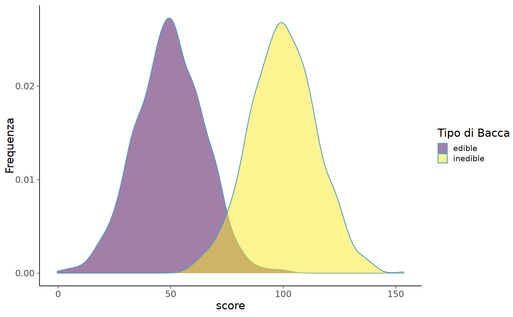
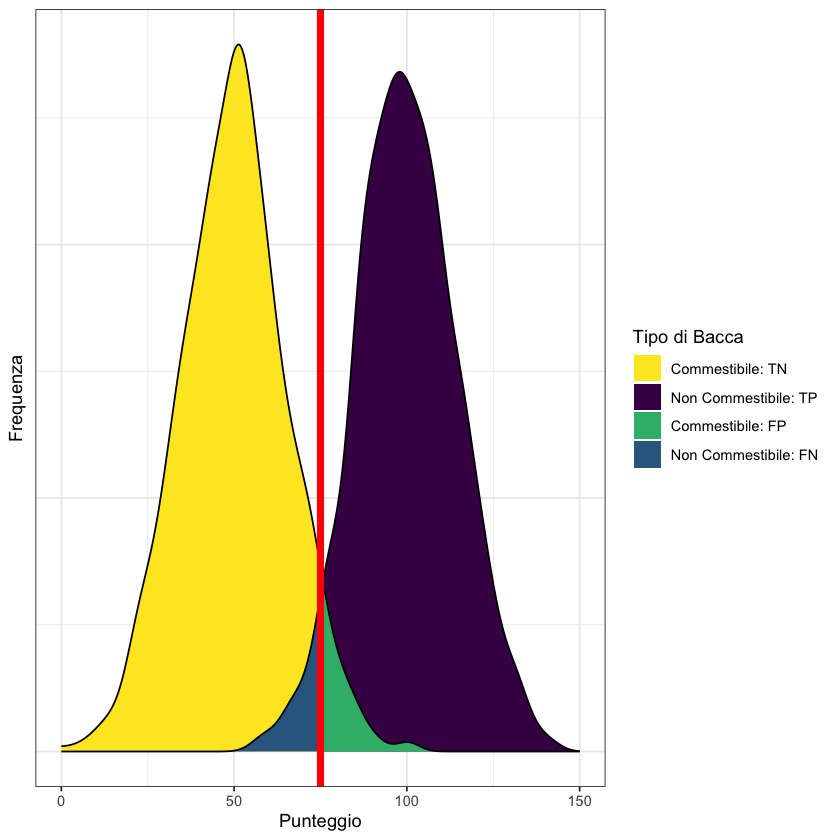
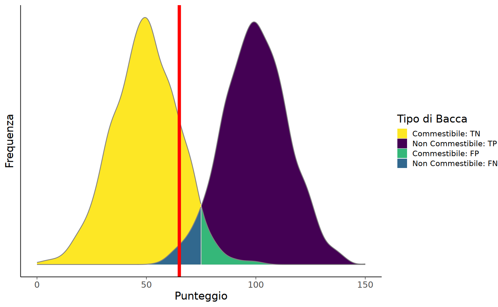
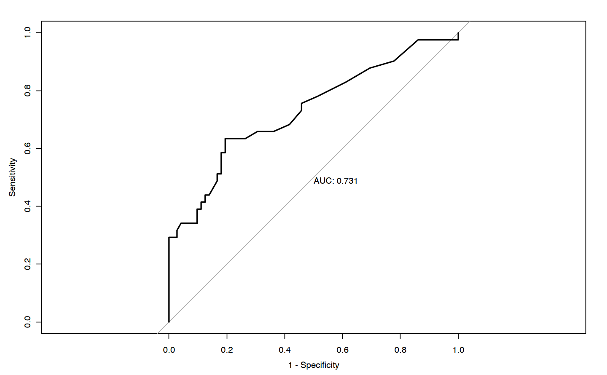
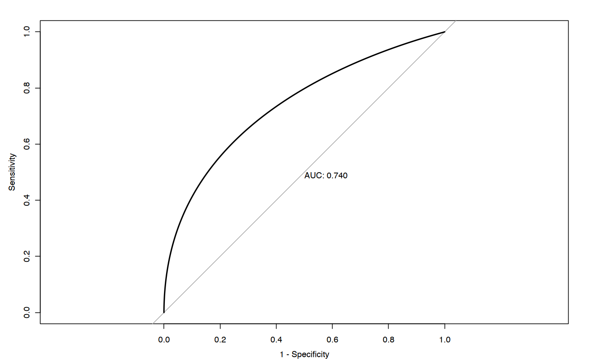
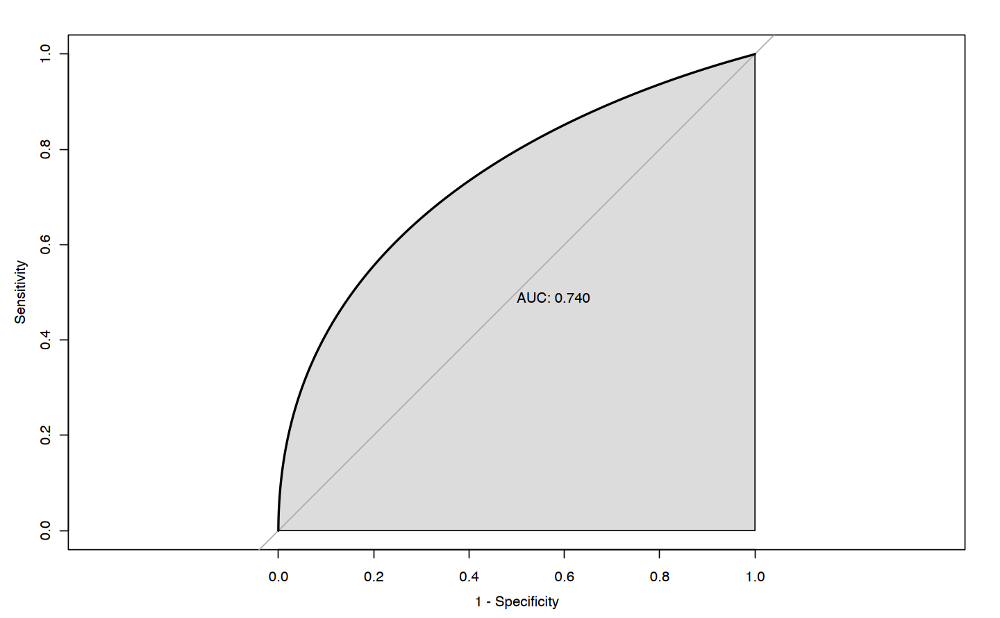
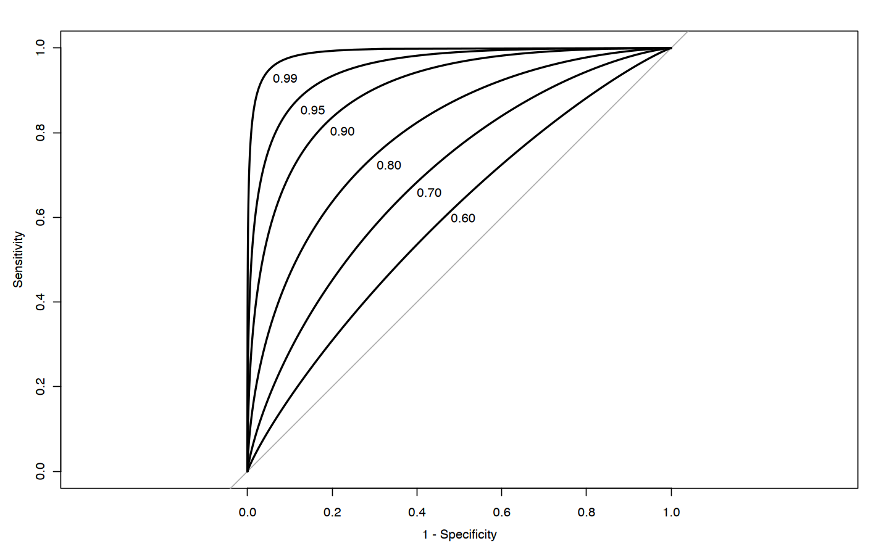
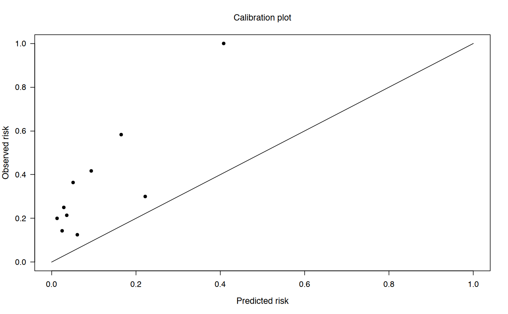

here::here("code", "_common.R") |> source()
# Load packages
if (!requireNamespace("pacman")) install.packages("pacman")
pacman::p_load(
petersenlab, magrittr, viridis, pROC, ROCR, rms, ResourceSelection,
PredictABEL, gridExtra, grid, ggpubr, msir, car, ggrepel, MOTE,
tinytex
)80 Predizione
Prerequisiti
- Leggere il capitolo 9 Prediction del testo di Petersen (2024).
Concetti e Competenze Chiave
Preparazione del Notebook
80.1 Introduzione
Le predizioni possono essere di vario tipo. Alcune riguardano dati categoriali, mentre altre si basano su dati continui. Per i dati categoriali, possiamo valutare le predizioni utilizzando una tabella 2x2, nota come matrice di confusione, o con modelli di regressione logistica. Invece, per i dati continui, possiamo utilizzare la regressione multipla o varianti come il modello a equazioni strutturali o i modelli misti.
Consideriamo un esempio pratico di predizione della probabilità di contrarre l’HIV, utilizzando le seguenti informazioni (Petersen, 2024):
- Tasso di base dell’HIV (P(HIV)): 0.3% (0.003). Questa è la probabilità che una persona nella popolazione generale abbia l’HIV.
- Sensibilità del test (P(Test+ HIV)): 95% (0.95). Questa è la probabilità che il test risulti positivo se la persona ha effettivamente l’HIV.
- Specificità del test (P(Test- ¬HIV)): 99.28% (0.9928). Questa è la probabilità che il test risulti negativo se la persona non ha l’HIV.
80.2 Calcolo della probabilità di HIV dato un test positivo
Per calcolare la probabilità di avere l’HIV dato un test positivo (P(HIV Test+)), utilizziamo il teorema di Bayes:
\[ P(HIV \mid Test+) = \frac{P(Test+ \mid HIV) \times P(HIV)}{P(Test+)}. \]
Abbiamo bisogno di calcolare il denominatore, ovvero la probabilità complessiva di ottenere un test positivo (P(Test+)). Questo valore include sia i veri positivi che i falsi positivi:
\[ P(Test+) = P(Test+ \mid HIV) \times P(HIV) + P(Test+ \mid \neg HIV) \times P(\neg HIV), \]
dove:
- \(P(Test+ \mid \neg HIV) = 1 - P(Test- \mid \neg HIV) = 1 - 0.9928 = 0.0072\) (tasso di falsi positivi),
- \(P(\neg HIV) = 1 - P(HIV) = 1 - 0.003 = 0.997\).
Calcoliamo \(P(Test+)\):
\[ P(Test+) = (0.95 \times 0.003) + (0.0072 \times 0.997) \approx 0.010027. \]
Ora possiamo calcolare \(P(HIV \mid Test+)\):
\[ P(HIV \mid Test+) = \frac{0.95 \times 0.003}{0.010027} \approx 0.2844 \text{ o 28.44\%}. \]
Quindi, se il test risulta positivo, la probabilità di avere l’HIV è circa il 28.44%.
80.3 Calcolo della probabilità di un secondo test positivo
Dopo un primo test positivo, la probabilità di avere l’HIV è aumentata al 28.44%. Ora calcoleremo la probabilità che un secondo test risulti positivo e la conseguente probabilità di avere l’HIV dopo due test positivi consecutivi.
Per calcolare \(P(\text{Secondo Test+})\), consideriamo due scenari:
- La persona ha effettivamente l’HIV:
- Probabilità: \(P(HIV \mid Test+) = 0.2844\).
- Probabilità di un test positivo: \(P(\text{Test+} \mid HIV) = 0.95\) (sensibilità del test).
- La persona non ha l’HIV:
- Probabilità: \(P(\neg HIV \mid Test+) = 1 - P(HIV \mid Test+) = 0.7156\).
- Probabilità di un test positivo: \(P(\text{Test+} \mid \neg HIV) = 0.0072\) (tasso di falsi positivi).
Utilizziamo la formula della probabilità totale:
\[ \begin{aligned} P(\text{Secondo Test+}) &= P(\text{Test+} \mid HIV) \times P(HIV \mid Test+) + \\ &\quad P(\text{Test+} \mid \neg HIV) \times P(\neg HIV \mid Test+). \end{aligned} \]
Sostituendo i valori:
\[ P(\text{Secondo Test+}) = (0.95 \times 0.2844) + (0.0072 \times 0.7156) \approx 0.2753. \]
Applichiamo nuovamente il teorema di Bayes per calcolare la probabilità di avere l’HIV dopo un secondo test positivo:
\[ P(HIV \mid \text{Secondo Test+}) = \frac{P(\text{Secondo Test+} \mid HIV) \times P(HIV \mid Test+)}{P(\text{Secondo Test+})}. \]
Sostituendo i valori:
\[ P(HIV \mid \text{Secondo Test+}) = \frac{0.95 \times 0.2844}{0.2753} \approx 0.981. \]
In conclusione, dopo un secondo test positivo, la probabilità di avere l’HIV aumenta notevolmente, passando dal 28.44% al 98.1%. Questo drastico aumento dimostra l’importanza di:
- considerare il tasso di base (prevalenza) nella popolazione;
- aggiornare progressivamente le probabilità con nuove evidenze;
- interpretare i risultati di test diagnostici multipli in modo bayesiano.
L’analisi evidenzia come l’accumulo di evidenze attraverso test ripetuti, in linea con i principi del teorema di Bayes, possa portare a una stima molto più accurata della probabilità di avere una condizione medica, riducendo sostanzialmente l’incertezza iniziale.
80.4 Accuratezza delle Predizioni
Per valutare l’accuratezza delle predizioni, Petersen (2024) considera un esempio adattato da Meehl & Rosen (1955). L’esercito americano esegue un test sui candidati per escludere quelli che hanno basse probabilità di superare l’addestramento di base. Per analizzare l’accuratezza di queste predizioni, possiamo utilizzare una matrice di confusione.
| Decision (Prediction) | Actual Adjustment (Poor) | Actual Adjustment (Good) | Total Predicted | Selection Ratio |
|---|---|---|---|---|
| Reject | TP = 86 (.043) | FP = 422 (.211) | 508 | SR = 0.254 |
| Retain | FN = 14 (.007) | TN = 1,478 (.739) | 1,492 | 1 - SR = 0.746 |
| Total Actual | 100 | 1,900 | N = 2,000 | |
| Base Rate | BR = 0.05 | 1 - BR = 0.95 |
Una matrice di confusione è una tabella che mette a confronto le predizioni fatte da un modello con gli esiti reali. Quando si tratta di una predizione dicotomica (ad esempio, sì/no o positivo/negativo), la matrice di confusione è organizzata in una tabella 2x2 che descrive le seguenti combinazioni.
- Vero positivo (TP): La predizione indica che la persona possiede la caratteristica, e ciò risulta corretto perché la persona effettivamente la possiede.
- Vero negativo (TN): La predizione indica che la persona non possiede la caratteristica, e ciò risulta corretto perché la persona effettivamente non la possiede.
- Falso positivo (FP): La predizione indica che la persona possiede la caratteristica, ma in realtà la persona non la possiede.
- Falso negativo (FN): La predizione indica che la persona non possiede la caratteristica, ma in realtà la persona la possiede.
Questi quattro risultati sono alla base dell’analisi dell’accuratezza di un modello predittivo. Il termine “vero” indica una predizione corretta, mentre “falso” rappresenta un errore. “Positivo” e “negativo” si riferiscono rispettivamente al fatto che la predizione indichi la presenza o l’assenza di una determinata caratteristica.
80.4.1 Calcolo dei Tassi Marginali
Con le informazioni presenti nella matrice di confusione, possiamo calcolare i tassi marginali, ovvero le probabilità globali che una persona presenti una certa caratteristica o sia classificata in un determinato modo.
Tasso di base (BR): Questo rappresenta la probabilità marginale che una persona abbia la caratteristica di interesse. Ad esempio, se 100 persone su 2.000 mostrano un cattivo adattamento, il tasso di base è:
\[ BR = \frac{FN + TP}{N} = \frac{100}{2000} = 0.05 \]
Ciò significa che il 5% dei candidati ha un cattivo adattamento.
Rapporto di selezione (SR): Questo indica la probabilità marginale che una persona venga esclusa dal test. Se 508 persone vengono escluse, il rapporto di selezione è:
\[ SR = \frac{TP + FP}{N} = \frac{508}{2000} = 0.254 \]
Il 25.4% dei candidati è stato escluso.
Il rapporto di selezione può dipendere dal punteggio di cutoff del test o da fattori esterni, come il numero di candidati che possono essere trattati o inclusi nel programma.
80.4.2 Percentuale di Accuratezza
La percentuale di accuratezza è un indicatore generale di quante predizioni sono corrette. Si calcola dividendo il numero di predizioni corrette (TP + TN) per il numero totale di predizioni (N), e moltiplicando per 100:
\[ \text{Percentuale di accuratezza} = 100 \times \frac{TP + TN}{N}. \]
Nel nostro esempio, il 78% delle predizioni è corretto, il che indica che il modello ha una buona accuratezza complessiva.
80.4.3 Accuratezza per Caso
Sebbene il 78% di accuratezza possa sembrare un buon risultato, è essenziale confrontare questo valore con quello che si otterrebbe semplicemente per puro caso. Questo confronto ci aiuta a capire se il modello apporta un reale valore aggiunto rispetto a una previsione casuale.
Ad esempio, consideriamo un tasso di base (BR) del 5% e un rapporto di selezione (SR) del 25,4%. La probabilità di ottenere un vero positivo per caso è data da:
\[ P(TP) = BR \times SR = 0.05 \times 0.254 = 0.0127. \]
Qui, il tasso di base BR = 0,05 rappresenta la probabilità che un individuo appartenga al gruppo con la caratteristica di interesse, mentre il rapporto di selezione SR = 0,254 indica la probabilità che l’individuo venga classificato come positivo. Moltiplicando queste due probabilità marginali, otteniamo la probabilità congiunta di ottenere un vero positivo per caso, pari a 0,0127.
Analogamente, la probabilità di ottenere un vero negativo per caso è data da:
\[ P(TN) = (1 - BR) \times (1 - SR) = 0.95 \times 0.746 = 0.7087. \]
Pertanto, la percentuale di accuratezza per caso, ossia l’accuratezza attesa basandosi esclusivamente sulle probabilità marginali (BR e SR) senza informazioni specifiche del modello, è:
\[ P(\text{Accuratezza per caso}) = P(TP) + P(TN) = 0.0127 + 0.7087 = 0.7214. \]
In questo esempio, il 72,14% di accuratezza potrebbe essere raggiunto anche senza l’uso del modello, semplicemente per caso. Dato che il nostro modello raggiunge un’accuratezza del 78%, il reale incremento di accuratezza rispetto al caso è solo del 6%. Questo evidenzia l’importanza di confrontare l’accuratezza del modello con quella ottenibile per puro caso per valutare il suo valore aggiunto.
Confrontando le aspettative casuali con l’accuratezza effettiva del modello, possiamo quindi misurare il reale beneficio del modello. Se l’accuratezza effettiva supera di poco quella ottenibile per caso, significa che il modello offre un miglioramento limitato rispetto a una semplice scelta casuale.
80.4.4 Predire dal Tasso di Base
Chiediamoci ora cosa accadrebbe se facessimo una previsione basata solo sulla probabilità generale degli esiti (tasso di base), senza considerare alcun modello predittivo.
Con un tasso di base basso (BR = 0.05) di un insufficiente adattamento alla vita militare, possiamo massimizzare l’accuratezza complessiva scegliendo di non “escludere” nessuno. Questo equivale a un rapporto di selezione (SR) pari a zero, indicando che non classifichiamo alcun caso come “Reject”. In questo scenario, tutti i casi sarebbero previsti come “Retain”, aumentando l’accuratezza totale ma rinunciando completamente alla possibilità di identificare casi positivi.
Se applichiamo questa logica alla matrice di confusione dei dati:
| Decision (Prediction) | Actual Adjustment (Poor) | Actual Adjustment (Good) | Total Predicted |
|---|---|---|---|
| Reject | TP = 0 | FP = 0 | 0 |
| Retain | FN = 100 | TN = 1,900 | 2,000 |
| Total Actual | 100 | 1,900 | N = 2,000 |
- Con SR = 0 (nessun caso viene classificato come “Reject”), otterremo:
- TN (Vero Negativo) = 1,900 (tutti i casi corretti di “Retain”)
- FN (Falso Negativo) = 100 (tutti i casi di “Poor” classificati erroneamente come “Retain”).
L’accuratezza complessiva in questo caso sarà quindi:
\[ P(\text{Accuratezza}) = \frac{\text{TP} + \text{TN}}{N} = \frac{0 + 1,900}{2,000} = 0.95 \]
In sintesi:
- “Predire dal Tasso di Base” implica usare l’esito prevalente per ogni predizione senza cercare di individuare i casi positivi;
- nei dati forniti, impostando SR = 0 otteniamo un’accuratezza del 95%, che è superiore all’accuratezza del 78% del modello originale;
- questo approccio aumenta l’accuratezza complessiva ma non offre alcuna informazione discriminativa.
In conclusione, optare per l’esito più probabile in ogni predizione (cioè, predire sempre in base al tasso di base) può portare a un’elevata accuratezza, come osservato da Meehl e Rosen (1955), soprattutto quando il tasso di base è molto basso o molto alto. Questo effetto ci mostra quanto sia importante confrontare l’accuratezza del nostro modello con l’accuratezza che potremmo ottenere (1) per puro caso e (2) utilizzando solo il tasso di base. Questo confronto è cruciale, poiché l’accuratezza di un modello può cambiare notevolmente a seconda del contesto in cui viene applicato. Infatti, in alcuni contesti, dove il tasso di base si discosta molto dal 50%, l’uso del modello può addirittura ridurre la sua capacità di predizione accurata.
Inoltre, è importante considerare che la percentuale di accuratezza tratta tutti i tipi di errore allo stesso modo, senza fare distinzioni. Tuttavia, nella pratica, non tutti gli errori hanno lo stesso peso o importanza. Il costo di un falso positivo può essere molto diverso da quello di un falso negativo, e questa differenza può variare a seconda del contesto specifico, come verrà discusso nel prossimo paragrafo.
80.4.5 Diversi Tipi di Errori e i loro Costi
In un processo di classificazione, non tutti gli errori hanno lo stesso costo. Esistono due tipi principali di errori: i falsi positivi e i falsi negativi, ciascuno con implicazioni diverse che dipendono dal contesto della predizione.
Spesso, l’accuratezza complessiva può essere aumentata affidandosi semplicemente al tasso di base, ma in molte situazioni può essere preferibile utilizzare uno strumento di screening, anche a costo di una minore accuratezza complessiva, se ciò consente di minimizzare errori specifici che hanno costi elevati. Ad esempio:
Screening medico: Consideriamo uno strumento di screening per l’HIV. I falsi positivi (classificare erroneamente una persona come a rischio) comportano costi come la necessità di test di conferma e, talvolta, ansia temporanea per l’individuo. Tuttavia, un falso negativo (non identificare una persona effettivamente a rischio) ha costi molto più alti, poiché potrebbe portare a un mancato intervento precoce, con conseguenze gravi per la salute. In questo caso, i costi associati ai falsi negativi superano di gran lunga quelli dei falsi positivi, rendendo lo screening preferibile nonostante una diminuzione dell’accuratezza complessiva.
Selezione del personale in situazioni di rischio: La CIA, ad esempio, ha utilizzato strumenti di selezione per identificare potenziali spie durante periodi di guerra. Un falso positivo in questo contesto (considerare erroneamente una persona come una spia) potrebbe risultare nell’esclusione di un candidato innocente. Un falso negativo (assumere una persona che è effettivamente una spia) comporta rischi molto più gravi, rendendo cruciale l’identificazione corretta delle spie, anche a costo di più falsi positivi.
Il modo in cui i costi degli errori vengono valutati dipende fortemente dal contesto. Alcuni potenziali costi dei falsi positivi includono trattamenti medici non necessari o il rischio di incarcerare una persona innocente. Al contrario, i falsi negativi possono portare al rilascio di una persona pericolosa, alla mancata individuazione di una malattia grave, o al mancato riconoscimento di un rischio imminente.
80.4.6 Importanza del Rapporto di Selezione e del Tasso di Base
Il costo degli errori può variare a seconda di come si imposta il rapporto di selezione (cioè, quanto rigorosamente si applica il criterio per accettare o escludere un individuo). La scelta di un rapporto di selezione meno restrittivo o più restrittivo influisce sulla probabilità di incorrere in falsi positivi e falsi negativi e può dipendere dal contesto e dai costi associati agli errori.
- Criterio meno rigido: Se escludere candidati è costoso, ad esempio quando si ha la necessità di assumere molte persone, potrebbe essere più utile un criterio di selezione permissivo, che accetta anche persone con un rischio potenziale.
- Criterio più rigido: In contesti in cui non è necessario accettare molti individui, si può adottare un criterio di selezione più rigido per ridurre i rischi, scartando un numero maggiore di candidati sospetti.
Quando il rapporto di selezione differisce dal tasso di base degli esiti negativi effettivi, inevitabilmente si generano errori:
- Se, ad esempio, il rapporto di selezione prevede di escludere il 25% dei candidati, ma solo il 5% risulta effettivamente “non idoneo,” il risultato sarà un numero elevato di falsi positivi.
- D’altro canto, se si esclude solo l’1% dei candidati mentre il tasso di non idoneità è del 5%, si finirà per includere molti falsi negativi.
80.4.7 Predizioni e Affidabilità in Condizioni di Basso Tasso di Base
Fare predizioni accurate diventa particolarmente complesso quando il tasso di base è basso, come nel caso di eventi rari (ad esempio, il suicidio). In questi casi, il numero di casi positivi reali è molto ridotto, rendendo difficile identificare correttamente i pochi eventi positivi senza generare numerosi falsi positivi o falsi negativi.
Questa difficoltà può essere compresa in relazione alla teoria classica dei test, che definisce l’affidabilità come il rapporto tra la varianza del punteggio vero e la varianza del punteggio osservato. Con un tasso di base molto basso, la varianza del punteggio vero è ridotta, il che abbassa l’affidabilità della misura e rende più complessa una predizione accurata.
80.4.8 Sensibilità, Specificità, PPV e NPV
Come abbiamo visto, la percentuale di accuratezza da sola non è sufficiente per valutare l’efficacia di un modello, poiché è molto influenzata dai tassi di base. Ad esempio, se il tasso di base è basso, potremmo ottenere un’alta percentuale di accuratezza semplicemente affermando che nessuno ha la condizione; se è alto, affermando che tutti ce l’hanno. Perciò, è essenziale considerare altre metriche di accuratezza, come sensibilità (SN), specificità (SP), valore predittivo positivo (PPV) e valore predittivo negativo (NPV).
Queste metriche, che si possono calcolare dalla matrice di confusione, ci aiutano a valutare se il modello è efficace nel rilevare la condizione senza includere erroneamente i casi negativi. Analizziamole in dettaglio:
Sensibilità (SN): indica la capacità del test di identificare correttamente i veri positivi, cioè le persone con la condizione. Si calcola come la proporzione di veri positivi (\(\text{TP}\)) rispetto al totale di persone con la condizione (\(\text{TP} + \text{FN}\)):
\[ \frac{\text{TP}}{\text{TP} + \text{FN}} = \frac{86}{86 + 14} = 0.86 \]
Specificità (SP): misura la capacità del test di identificare correttamente i veri negativi, ossia le persone senza la condizione. Si calcola come la proporzione di veri negativi (\(\text{TN}\)) rispetto al totale di persone senza la condizione (\(\text{TN} + \text{FP}\)):
\[ \frac{\text{TN}}{\text{TN} + \text{FP}} = \frac{1,478}{1,478 + 422} = 0.78 \]
Valore Predittivo Positivo (PPV): indica la probabilità che una persona classificata come positiva abbia effettivamente la condizione. Si calcola come la proporzione di veri positivi (\(\text{TP}\)) sul totale dei positivi stimati (\(\text{TP} + \text{FP}\)):
\[ \frac{\text{TP}}{\text{TP} + \text{FP}} = \frac{86}{86 + 422} = 0.17 \]
Valore Predittivo Negativo (NPV): rappresenta la probabilità che una persona classificata come negativa non abbia effettivamente la condizione. Si calcola come la proporzione di veri negativi (\(\text{TN}\)) sul totale dei negativi stimati (\(\text{TN} + \text{FN}\)):
\[ \frac{\text{TN}}{\text{TN} + \text{FN}} = \frac{1,478}{1,478 + 14} = 0.99 \]
Ogni misura è espressa come una proporzione, variando da 0 a 1, dove valori più alti indicano una maggiore accuratezza per ciascun aspetto specifico. Usando queste metriche otteniamo un quadro dettagliato dell’efficacia dello strumento a un determinato cutoff.
80.4.9 Interpretazione delle Metriche
In questo caso, il nostro strumento mostra: - Alta sensibilità (0,86): è efficace nel rilevare chi ha la condizione. - Bassa specificità (0,78): classifica erroneamente come positivi molti casi che non hanno la condizione. - Basso PPV (0,17): la maggior parte dei casi classificati come positivi sono in realtà negativi, indicando una frequenza elevata di falsi positivi. - Alto NPV (0,99): quasi tutti i casi classificati come negativi non hanno la condizione.
Quindi, pur avendo una buona capacità di rilevare i positivi (alta sensibilità), il modello è meno efficace nel limitare i falsi positivi (basso PPV). Questo potrebbe essere accettabile se l’obiettivo è identificare tutti i potenziali casi positivi, anche a costo di includere molti falsi positivi, ma potrebbe non essere ideale se il costo degli errori di falsa positività è elevato.
80.5 Alcune Stime di Accuratezza Dipendono dal Cutoff
Sensibilità, specificità, PPV e NPV variano in base al cutoff (ovvero, la soglia) per la classificazione. Consideriamo il seguente esempio. Degli alieni visitano la Terra e sviluppano un test per determinare se una bacca è commestibile o non commestibile.
sampleSize <- 1000
edibleScores <- rnorm(sampleSize, 50, 15)
inedibleScores <- rnorm(sampleSize, 100, 15)
edibleData <- data.frame(score = c(edibleScores, inedibleScores), type = c(rep("edible", sampleSize), rep("inedible", sampleSize)))
cutoff <- 75
hist_edible <- density(edibleScores, from = 0, to = 150) %$%
data.frame(x = x, y = y) %>%
mutate(area = x >= cutoff)
hist_edible$type[hist_edible$area == TRUE] <- "edible_FP"
hist_edible$type[hist_edible$area == FALSE] <- "edible_TN"
hist_inedible <- density(inedibleScores, from = 0, to = 150) %$%
data.frame(x = x, y = y) %>%
mutate(area = x < cutoff)
hist_inedible$type[hist_inedible$area == TRUE] <- "inedible_FN"
hist_inedible$type[hist_inedible$area == FALSE] <- "inedible_TP"
density_data <- bind_rows(hist_edible, hist_inedible)
density_data$type <- factor(density_data$type, levels = c("edible_TN", "inedible_TP", "edible_FP", "inedible_FN"))La Figura successiva mostra le distribuzioni dei punteggi in base al tipo di bacca. Si può notare come ci sono due distribuzioni distinte, ma con una certa sovrapposizione. Pertanto, qualsiasi cutoff selezionato comporterà almeno alcune classificazioni errate. L’entità della sovrapposizione delle distribuzioni riflette la quantità di errore di misurazione dello strumento rispetto alla caratteristica di interesse.
ggplot(data = edibleData, aes(x = score, ymin = 0, fill = type)) +
geom_density(alpha = .5) +
scale_fill_manual(name = "Tipo di Bacca", values = c(viridis(2)[1], viridis(2)[2])) +
scale_y_continuous(name = "Frequenza") 
La Figura successiva mostra le distribuzioni dei punteggi in base al tipo di bacca con un cutoff. La linea rossa indica il cutoff: il livello al di sopra del quale le bacche vengono classificate come non commestibili. Ci sono errori su entrambi i lati del cutoff. Sotto il cutoff, ci sono dei falsi negativi (blu): bacche non commestibili erroneamente classificate come commestibili. Sopra il cutoff, ci sono dei falsi positivi (verde): bacche commestibili erroneamente classificate come non commestibili. I costi dei falsi negativi potrebbero includere malattia o morte derivanti dal consumo di bacche non commestibili, mentre i costi dei falsi positivi potrebbero includere maggiore tempo per trovare cibo, insufficienza di cibo e fame.
ggplot(data = density_data, aes(x = x, ymin = 0, ymax = y, fill = type)) +
geom_ribbon(alpha = 1) +
scale_fill_manual(
name = "Tipo di Bacca",
values = c(viridis(4)[4], viridis(4)[1], viridis(4)[3], viridis(4)[2]),
breaks = c("edible_TN", "inedible_TP", "edible_FP", "inedible_FN"),
labels = c("Commestibile: TN", "Non Commestibile: TP", "Commestibile: FP", "Non Commestibile: FN")
) +
geom_line(aes(y = y)) +
geom_vline(xintercept = cutoff, color = "red", linewidth = 2) +
scale_x_continuous(name = "Punteggio") +
scale_y_continuous(name = "Frequenza") 
A seconda dei nostri obiettivi di valutazione, potremmo voler usare un diverso rapporto di selezione modificando il cutoff. La Figura mostra le distribuzioni dei punteggi quando si aumenta il cutoff. Ora ci sono più falsi negativi (blu) e meno falsi positivi (verde). Se alziamo il cutoff per essere più conservativi, il numero di falsi negativi aumenta, mentre il numero di falsi positivi diminuisce. Di conseguenza, aumentando il cutoff, la sensibilità e il valore predittivo negativo (NPV) diminuiscono, mentre la specificità e il valore predittivo positivo (PPV) aumentano. Un cutoff più alto potrebbe essere ottimale se i costi dei falsi positivi sono considerati superiori a quelli dei falsi negativi. Ad esempio, se gli alieni non possono rischiare di mangiare bacche non commestibili perché sono fatali, e ci sono abbastanza bacche commestibili per nutrire la colonia aliena.
# Raise the cutoff
cutoff <- 85
ggplot(data = density_data, aes(x = x, ymin = 0, ymax = y, fill = type)) +
geom_ribbon(alpha = 1) +
scale_fill_manual(
name = "Tipo di Bacca",
values = c(viridis(4)[4], viridis(4)[1], viridis(4)[3], viridis(4)[2]),
breaks = c("edible_TN", "inedible_TP", "edible_FP", "inedible_FN"),
labels = c("Commestibile: TN", "Non Commestibile: TP", "Commestibile: FP", "Non Commestibile: FN")
) +
geom_line(aes(y = y)) +
geom_vline(xintercept = cutoff, color = "red", linewidth = 2) +
scale_x_continuous(name = "Punteggio") +
scale_y_continuous(name = "Frequenza") +
theme(
axis.text.y = element_blank(),
axis.ticks.y = element_blank()
)
In alternativa, possiamo abbassare il cutoff per essere più liberali. La Figura seguente mostra le distribuzioni dei punteggi quando abbassiamo il cutoff. Ora ci sono meno falsi negativi (blu) e più falsi positivi (verde). Abbassando il cutoff, la sensibilità e il NPV aumentano, mentre la specificità e il PPV diminuiscono. Un cutoff più basso potrebbe essere ottimale se i costi dei falsi negativi sono considerati superiori a quelli dei falsi positivi. Ad esempio, se gli alieni non possono rischiare di perdere bacche commestibili perché sono scarse, e mangiare bacche non commestibili comporta solo disagi temporanei.
# Lower the cutoff
cutoff <- 65
ggplot(data = density_data, aes(x = x, ymin = 0, ymax = y, fill = type)) +
geom_ribbon(alpha = 1) +
scale_fill_manual(
name = "Tipo di Bacca",
values = c(viridis(4)[4], viridis(4)[1], viridis(4)[3], viridis(4)[2]),
breaks = c("edible_TN", "inedible_TP", "edible_FP", "inedible_FN"),
labels = c("Commestibile: TN", "Non Commestibile: TP", "Commestibile: FP", "Non Commestibile: FN")
) +
geom_line(aes(y = y)) +
geom_vline(xintercept = cutoff, color = "red", linewidth = 2) +
scale_x_continuous(name = "Punteggio") +
scale_y_continuous(name = "Frequenza") +
theme(
axis.text.y = element_blank(),
axis.ticks.y = element_blank()
)
In sintesi, sensibilità e specificità variano in base al cutoff utilizzato per la classificazione. Se aumentiamo il cutoff, la specificità e il PPV aumentano, mentre la sensibilità e il NPV diminuiscono. Se abbassiamo il cutoff, la sensibilità e il NPV aumentano, mentre la specificità e il PPV diminuiscono. Pertanto, il cutoff ottimale dipende dai costi associati ai falsi negativi e ai falsi positivi. Se i falsi negativi sono più costosi, dovremmo impostare un cutoff basso; se i falsi positivi sono più costosi, dovremmo impostare un cutoff alto.
80.6 Teoria della Detezione del Segnale
La teoria della detezione del segnale (Signal Detection Theory, SDT) è una teoria probabilistica utilizzata per il rilevamento di uno stimolo (segnale) all’interno di un insieme di stimoli che include anche stimoli non target (rumore). La SDT è nata durante lo sviluppo del radar (RAdio Detection And Ranging) e del sonar (SOund Navigation And Ranging) durante la Seconda Guerra Mondiale, basandosi su ricerche in ambito sensoriale-percettivo. Il settore militare desiderava determinare quali oggetti rilevati da radar/sonar fossero effettivamente aerei o sottomarini nemici, e quali fossero solo rumore (ad esempio, oggetti diversi nell’ambiente).
La SDT ha permesso di valutare il numero di errori commessi dagli operatori (cioè, quanto fossero precisi) e di scomporre tali errori in diverse categorie. La teoria distingue tra sensibilità e bias. Nella SDT, la sensibilità (o discriminabilità) è la capacità di un test di distinguere tra uno stimolo target e stimoli non target, ossia quanto bene il test riesca a rilevare il segnale tra i rumori. Il bias rappresenta invece la tendenza del test a sovrastimare o sottostimare la probabilità di un evento target rispetto al tasso reale di occorrenza di tale evento.
Alcuni operatori radar/sonar non erano molto sensibili alla differenza tra segnale e rumore, a causa di fattori come l’età o la capacità di distinguere sottili variazioni di segnale. Gli individui con bassa sensibilità, che quindi non riuscivano a distinguere efficacemente tra segnale e rumore, venivano esclusi, poiché la sensibilità era considerata una competenza che difficilmente si può insegnare. Altri operatori, pur avendo una buona sensibilità, mostravano bias sistematici o scarsa calibrazione, cioè commettevano errori sistematici nel giudicare i segnali, ad esempio sovra-rifiutando o sotto-rifiutando il target.
Sovra-rifiutare significa produrre molti falsi negativi (cioè, giudicare un segnale sicuro quando in realtà non lo è), mentre sotto-rifiutare genera molti falsi positivi (cioè, giudicare un segnale come pericoloso quando in realtà non lo è). Un operatore con buona sensibilità ma bias sistematico veniva considerato più facile da addestrare rispetto a chi aveva una bassa sensibilità. Gli operatori radar e sonar venivano quindi selezionati in base alla loro sensibilità nel distinguere tra segnale e rumore, e poi addestrati per migliorare la calibrazione e ridurre il bias sistematico, evitando così di sovra- o sotto-rifiutare gli stimoli.
Anche se la SDT è stata sviluppata inizialmente durante la Seconda Guerra Mondiale, oggi ha un ruolo importante in molti ambiti della scienza e della medicina. Un esempio in medicina è il rilevamento di tumori nella radiologia. La SDT è fondamentale anche in psicologia, specialmente nella psicologia cognitiva. Ad esempio, ricerche sulla percezione sociale hanno dimostrato che gli uomini tendono a mostrare una scarsa sensibilità nel distinguere le manifestazioni di interesse sessuale nelle donne, confondendo la cordialità con l’interesse sessuale. Inoltre, gli uomini tendono ad avere un bias sistematico, sovrastimando l’interesse sessuale delle donne nei loro confronti, mostrando così una soglia troppo bassa nel giudicare tali segnali.
Le metriche SDT di sensibilità includono \(d'\) (d-prime), \(A\) (o \(A'\)), e l’area sotto la curva ROC (Receiver Operating Characteristic). Le metriche di bias includono \(\beta\), \(c\) e \(b\).
80.6.1 Curva ROC (Receiver Operating Characteristic)
L’asse delle x della curva ROC rappresenta il tasso di falsi allarmi o tasso di falsi positivi (\(1 -\) specificità). L’asse delle y rappresenta il tasso di successi o tasso di veri positivi (sensibilità). La curva ROC traccia la combinazione tra sensibilità e specificità per ogni possibile valore di cutoff.
Iniziamo con un cutoff pari a zero (in alto a destra sulla curva ROC). In questo caso, la sensibilità è pari a 1.0 e la specificità è 0, e il punto corrispondente viene tracciato sulla curva. Con un cutoff di zero, il test decide di agire su ogni stimolo (quindi il test è estremamente liberale). Aumentiamo progressivamente il cutoff e tracciamo la sensibilità e la specificità a ogni valore di cutoff. All’aumentare del cutoff, la sensibilità diminuisce e la specificità aumenta.
Terminiamo con il valore di cutoff più alto possibile, dove la sensibilità è pari a 0 e la specificità è 1.0 (in altre parole, il test non agisce mai; quindi è il massimo della conservatività). Ogni punto sulla curva ROC corrisponde a una coppia di tasso di successi (sensibilità) e tasso di falsi allarmi (falsi positivi) risultante da uno specifico valore di cutoff. Dopodiché, possiamo collegare i punti con delle linee o curve per ottenere la curva ROC.
La Figura seguente mostra un esempio empirico di curva ROC, dove le linee connettono i tassi di successi e di falsi allarmi.
plot(roc(aSAH$outcome, aSAH$s100b), legacy.axes = TRUE, print.auc = TRUE)
Creiamo ora una curva ROC lisciata, dove viene tracciata una curva continua e adattata per connettere i tassi di successi e di falsi allarmi.
plot(roc(aSAH$outcome, aSAH$s100b, smooth = TRUE), legacy.axes = TRUE, print.auc = TRUE)
80.6.2 Area Sotto la Curva ROC (AUC)
Le metodologie ROC possono essere utilizzate per confrontare e calcolare il potere discriminativo degli strumenti di misurazione, senza essere influenzati da fattori come il selection ratio, il base rate e i costi e benefici associati. L’analisi ROC fornisce un indice quantitativo di quanto bene uno strumento possa prevedere un segnale di interesse o discriminare tra segnali diversi. Questo approccio ci aiuta a capire con quale frequenza la nostra valutazione è corretta.
Se scegliamo casualmente due osservazioni, e una è corretta mentre l’altra è sbagliata, la precisione sarebbe del 50%, ma questo rifletterebbe una risposta casuale, quindi inutile. L’area geometrica sotto la curva ROC riflette l’accuratezza discriminativa della misura. Questo indice è noto come AUC (Area Under the Curve) della curva ROC. AUC quantifica il potere discriminativo di un test. Più precisamente, AUC rappresenta la probabilità che, selezionando casualmente un target e un non-target, il test classifichi correttamente il target come tale. I valori dell’AUC variano da 0.0 a 1.0, dove 0.5 rappresenta la precisione casuale, come indicato dalla linea diagonale nella curva ROC. Un test è utile nella misura in cui la sua curva ROC si trova sopra la linea diagonale, indicando che la sua accuratezza discriminativa è superiore al caso.
plot(roc(aSAH$outcome, aSAH$s100b, smooth = TRUE), legacy.axes = TRUE, print.auc = TRUE, auc.polygon = TRUE)
# Simulazione dei dati per AUC
simulateDataFromAUC <- function(auc, n) {
t <- sqrt(log(1 / (1 - auc)**2))
z <- t - ((2.515517 + 0.802853 * t + 0.0103328 * t**2) / (1 + 1.432788 * t + 0.189269 * t**2 + 0.001308 * t**3))
d <- z * sqrt(2)
x <- c(rnorm(n / 2, mean = 0), rnorm(n / 2, mean = d))
y <- c(rep(0, n / 2), rep(1, n / 2))
data <- data.frame(x = x, y = y)
return(data)
}
set.seed(52242)
auc60 <- simulateDataFromAUC(.60, 50000)
auc70 <- simulateDataFromAUC(.70, 50000)
auc80 <- simulateDataFromAUC(.80, 50000)
auc90 <- simulateDataFromAUC(.90, 50000)
auc95 <- simulateDataFromAUC(.95, 50000)
auc99 <- simulateDataFromAUC(.99, 50000)
plot(roc(y ~ x, auc60, smooth = TRUE), legacy.axes = TRUE, print.auc = TRUE, print.auc.x = .52, print.auc.y = .61, print.auc.pattern = "%.2f")
plot(roc(y ~ x, auc70, smooth = TRUE), legacy.axes = TRUE, print.auc = TRUE, print.auc.x = .6, print.auc.y = .67, print.auc.pattern = "%.2f", add = TRUE)
plot(roc(y ~ x, auc80, smooth = TRUE), legacy.axes = TRUE, print.auc = TRUE, print.auc.x = .695, print.auc.y = .735, print.auc.pattern = "%.2f", add = TRUE)
plot(roc(y ~ x, auc90, smooth = TRUE), legacy.axes = TRUE, print.auc = TRUE, print.auc.x = .805, print.auc.y = .815, print.auc.pattern = "%.2f", add = TRUE)
plot(roc(y ~ x, auc95, smooth = TRUE), legacy.axes = TRUE, print.auc = TRUE, print.auc.x = .875, print.auc.y = .865, print.auc.pattern = "%.2f", add = TRUE)
plot(roc(y ~ x, auc99, smooth = TRUE), legacy.axes = TRUE, print.auc = TRUE, print.auc.x = .94, print.auc.y = .94, print.auc.pattern = "%.2f", add = TRUE)
Ad esempio, se l’AUC è pari a 0.75, ciò significa che il punteggio complessivo di un individuo che possiede la caratteristica in questione sarà più alto nel 75% dei casi rispetto a quello di un individuo che non la possiede. In termini più semplici, l’AUC fornisce la probabilità che lo strumento classifichi correttamente, se scegliamo casualmente un esito positivo e uno negativo.
L’AUC è un indice più robusto rispetto alla percentuale di accuratezza perché la percentuale di accuratezza può essere influenzata da fattori come il base rate. L’AUC misura quanto un test è migliore del caso nel discriminare tra esiti diversi. Inoltre, è utile come indicatore generale di accuratezza discriminativa, poiché mostra quanto un test sia accurato su tutti i possibili cutoff.
Anche se conoscere l’accuratezza del test a ogni cutoff può essere utile per selezionare il cutoff ottimale, nella realtà non siamo interessati a tutti i possibili cutoff, poiché non tutti gli errori hanno lo stesso costo.
Iniziare {#gettingStarted-prediction}
Caricare le Librerie {#loadLibraries-prediction}
Preparare i Dati {#prepareData-prediction} Caricamento dei Dati {#loadData-prediction}
Il dataset aSAH del pacchetto pROC contiene i punteggi dei test (s100b) e gli esiti clinici (outcome) di pazienti.
data(aSAH)
mydataSDT <- aSAHPer garantire la riproducibilità, imposto il seed qui sotto. L’utilizzo dello stesso seed garantirà gli stessi risultati ogni volta. Non c’è nulla di speciale in questo seed specifico.
set.seed(52242)
mydataSDT$testScore <- mydataSDT$s100b
mydataSDT <- mydataSDT %>%
mutate(testScoreSimple = ntile(testScore, 10))
mydataSDT$predictedProbability <-
(mydataSDT$s100b - min(mydataSDT$s100b, na.rm = TRUE)) /
(max(mydataSDT$s100b, na.rm = TRUE) - min(mydataSDT$s100b, na.rm = TRUE))
mydataSDT$continuousOutcome <- mydataSDT$testScore +
rnorm(nrow(mydataSDT), mean = 0.20, sd = 0.20)
mydataSDT$disorder <- NA
mydataSDT$disorder[mydataSDT$outcome == "Good"] <- 0
mydataSDT$disorder[mydataSDT$outcome == "Poor"] <- 1La curva ROC (Receiver Operating Characteristic) mostra la combinazione tra il tasso di successo (o sensibilità) e il tasso di falsi allarmi (\(1 - \text{specificità}\)) per ogni possibile soglia di cutoff. La curva dimostra come, all’aumentare della soglia (diventando più conservativa), la sensibilità diminuisce e la specificità aumenta, e viceversa.
Le curve ROC possono essere generate utilizzando il pacchetto pROC, e gli esempi mostrano che la misura ha un’accuratezza moderata—è più accurata del caso, ma c’è margine di miglioramento.
Curva ROC Empirica {#empiricalROC} Il codice per generare una curva ROC empirica è mostrato qui sotto, e il grafico è visibile in Figura (ref?)(fig
rocCurve <- roc(data = mydataSDT, response = disorder, predictor = testScore, smooth = FALSE)plot(rocCurve, legacy.axes = TRUE, print.auc = TRUE)Una curva ROC empirica con i cutoff sovrapposti è mostrata
pred <- prediction(
na.omit(mydataSDT[, c("testScoreSimple", "disorder")])$testScoreSimple,
na.omit(mydataSDT[, c("testScoreSimple", "disorder")])$disorder
)
perf <- performance(pred, "tpr", "fpr")
plot(perf, print.cutoffs.at = 1:11, text.adj = c(1, -1), ylim = c(0, 1.05))
abline(coef = c(0, 1))Curva ROC Liscia si ottiene nel modo seguente.
rocCurveSmooth <- roc(data = mydataSDT, response = disorder, predictor = testScore, smooth = TRUE)
plot(rocCurveSmooth, legacy.axes = TRUE, print.auc = TRUE)Statistica di Youden J {#youdenJ} La soglia della statistica di Youden J è il punto in cui il test ha la massima combinazione (somma) di sensibilità e specificità: \(\text{max}(\text{sensitivity} + \text{specificity} - 1)\).
youdenJ <- coords(rocCurve, x = "best", best.method = "youden")
youdenJthreshold <- youdenJ$threshold
youdenJspecificity <- youdenJ$specificity
youdenJsensitivity <- youdenJ$sensitivity
youdenJ| threshold | specificity | sensitivity |
|---|---|---|
| <dbl> | <dbl> | <dbl> |
| 0.205 | 0.8055556 | 0.6341463 |
Per questo test, la soglia ottimale secondo la statistica di Youden J è \(r youdenJthreshold\), con una sensibilità di \(r youdenJsensitivity\) e una specificità di \(r youdenJspecificity\).
Punto più vicino alla parte in alto a sinistra della curva ROC {#topLeftROC} Il punto più vicino alla parte superiore sinistra della curva ROC, dove sensibilità e specificità sono perfette, è dato da: \(\text{min}[(1 - \text{sensitivity})^2 + (1 - \text{specificity})^2]\).
closestTopLeft <- coords(rocCurve, x = "best", best.method = "closest.topleft")
closestTopLeftthreshold <- closestTopLeft$threshold
closestTopLeftspecificity <- closestTopLeft$specificity
closestTopLeftsensitivity <- closestTopLeft$sensitivity
closestTopLeft| threshold | specificity | sensitivity |
|---|---|---|
| <dbl> | <dbl> | <dbl> |
| 0.205 | 0.8055556 | 0.6341463 |
Per questo test, la combinazione di sensibilità e specificità è ottimale alla soglia di \(r closestTopLeftthreshold\), con una sensibilità di \(r closestTopLeftsensitivity\) e una specificità di \(r closestTopLeftspecificity\).
80.7 Accuratezza della Predizione attraverso i Cutoff
Esistono due dimensioni principali dell’accuratezza: (1) la discriminazione (ad esempio, sensibilità, specificità, area sotto la curva ROC) e (2) la calibrazione. Alcuni indici generali di accuratezza combinano la discriminazione e la calibrazione.
Il pacchetto petersenlab include la funzione accuracyOverall(), che stima l’accuratezza della predizione su tutti i cutoff.
Ecco un esempio di codice che utilizza questa funzione:
accuracyOverall(
predicted = mydataSDT$testScore,
actual = mydataSDT$disorder
) %>%
t() %>%
round(., 2)
accuracyOverall(
predicted = mydataSDT$testScore,
actual = mydataSDT$disorder,
dropUndefined = TRUE
) %>%
t() %>%
round(., 2)| ME | -0.12 |
| MAE | 0.34 |
| MSE | 0.21 |
| RMSE | 0.46 |
| MPE | -Inf |
| MAPE | Inf |
| sMAPE | 82.72 |
| MASE | 0.74 |
| RMSLE | 0.30 |
| rsquared | 0.17 |
| rsquaredAdj | 0.17 |
| rsquaredPredictive | 0.12 |
| ME | -0.12 |
| MAE | 0.34 |
| MSE | 0.21 |
| RMSE | 0.46 |
| MPE | 60.29 |
| MAPE | 65.51 |
| sMAPE | 82.72 |
| MASE | 0.74 |
| RMSLE | 0.30 |
| rsquared | 0.17 |
| rsquaredAdj | 0.17 |
| rsquaredPredictive | 0.12 |
In questo esempio, la funzione accuracyOverall() calcola l’accuratezza complessiva della predizione su tutta la gamma di cutoff disponibili, fornendo una sintesi del grado di accuratezza globale del modello.
80.8 Calibrazione
Quando si tratta di un risultato categorico, la calibrazione è il grado in cui una stima probabilistica di un evento riflette la reale probabilità sottostante di quell’evento.
Quando si tratta di un risultato continuo, la calibrazione indica quanto i valori previsti siano vicini ai valori effettivi osservati.
L’importanza di esaminare la calibrazione, oltre alla discriminazione, è descritta da Lindhiem (2020).
La calibrazione è diventata centrale nella valutazione dell’accuratezza delle previsioni meteorologiche.
Ad esempio, nei giorni in cui un meteorologo prevede il 60% di possibilità di pioggia, dovrebbe effettivamente piovere circa il 60% delle volte.
Grazie ai progressi nella comprensione scientifica dei sistemi meteorologici, le previsioni della pioggia sono diventate più accurate.
Le previsioni della National Weather Service, per esempio, sono ben calibrate.
Tuttavia, le previsioni di pioggia fatte da meteorologi televisivi locali possono essere esagerate per aumentare l’audience (Silver, 2012).
Curiosamente, alcune previsioni di pioggia di The Weather Channel risultano miscalibrate in certe condizioni (Bickel, 2008).
Ad esempio, nei giorni in cui viene prevista una probabilità di pioggia del 20%, la probabilità reale è in realtà intorno al 5%.
Questa miscalibrazione è deliberata, poiché le persone tendono a essere più arrabbiate se viene detto loro che non pioverà e invece piove (falsi negativi) rispetto al contrario (falsi positivi).
Come osserva Silver (2012), “Se piove quando non dovrebbe, le persone si arrabbiano con il meteorologo, mentre una giornata inaspettatamente soleggiata è vista come un bonus fortuito.”
La calibrazione non è importante solo per le previsioni meteorologiche, ma anche per la valutazione psicologica.
Esistono diversi metodi per esaminare la calibrazione, come i Brier Scores, il test di Hosmer-Lemeshow, lo z di Spiegelhalter e la differenza media tra i valori previsti e osservati a diversi intervalli di soglie, rappresentata graficamente tramite un calibration plot.
80.8.1 Calibration Plot
Un calibration plot può aiutare a individuare la miscalibrazione.
Questo grafico rappresenta la probabilità prevista di un evento sull’asse x e la probabilità effettiva osservata sull’asse y.
Le previsioni sono suddivise in gruppi (spesso 10).
La linea diagonale rappresenta previsioni perfettamente calibrate.
Quando le previsioni si discostano da questa linea, indicano miscalibrazione.
Esistono quattro pattern generali di miscalibrazione: overextremity, underextremity, overprediction, e underprediction.
- Overextremity si verifica quando le probabilità previste sono troppo vicine agli estremi (zero o uno).
- Underextremity accade quando le probabilità previste sono troppo lontane dagli estremi.
- Overprediction si ha quando le probabilità previste sono costantemente maggiori di quelle osservate.
- Underprediction si ha quando le probabilità previste sono costantemente minori di quelle osservate.
Per generare un calibration plot, possiamo utilizzare il pacchetto PredictABEL. Di seguito è riportato un esempio di codice in R per creare questo grafico:
data(aSAH)
mydataSDT <- aSAH
set.seed(52242)
mydataSDT$testScore <- mydataSDT$s100b
mydataSDT <- mydataSDT %>%
mutate(testScoreSimple = ntile(testScore, 10))
mydataSDT$predictedProbability <-
(mydataSDT$s100b - min(mydataSDT$s100b, na.rm = TRUE)) /
(max(mydataSDT$s100b, na.rm = TRUE) - min(mydataSDT$s100b, na.rm = TRUE))
mydataSDT$continuousOutcome <- mydataSDT$testScore +
rnorm(nrow(mydataSDT), mean = 0.20, sd = 0.20)
mydataSDT$disorder <- NA
mydataSDT$disorder[mydataSDT$outcome == "Good"] <- 0
mydataSDT$disorder[mydataSDT$outcome == "Poor"] <- 1
colNumberOutcome <- which(names(mydataSDT) == "disorder")
myDataNoMissing <- na.omit(mydataSDT)plotCalibration(
data = na.omit(myDataNoMissing),
cOutcome = colNumberOutcome,
predRisk = myDataNoMissing$predictedProbability,
groups = 10
)- $Table_HLtest
-
A matrix: 10 x 5 of type dbl total meanpred meanobs predicted observed [0.0000,0.0245) 20 0.013 0.200 0.26 4 0.0245 7 0.025 0.143 0.17 1 0.0294 8 0.029 0.250 0.24 2 [0.0343,0.0441) 14 0.036 0.214 0.50 3 [0.0441,0.0588) 11 0.051 0.364 0.56 4 [0.0588,0.0686) 8 0.061 0.125 0.49 1 [0.0686,0.1324) 12 0.094 0.417 1.12 5 [0.1324,0.2059) 12 0.165 0.583 1.98 7 [0.2059,0.2598) 10 0.222 0.300 2.22 3 [0.2598,1.0000] 11 0.408 1.000 4.49 11 - $Chi_square
- 154.23
- $df
- 8
- $p_value
- 0

Questo calibration plot mostra che le probabilità previste erano consistentemente inferiori a quelle effettive osservate, suggerendo un problema di underprediction. Per correggere questa miscalibrazione, le probabilità previste dovrebbero essere aumentate affinché risultino coerenti con quelle osservate.
80.8.1.1 Brier Scores
80.8.1.2 Brier Scores
I punteggi di Brier (Brier scores) offrono una misura di accuratezza per le previsioni probabilistiche, valutando quanto le probabilità previste si avvicinino ai risultati reali. Questo punteggio è calcolato come la media dei quadrati delle differenze tra le probabilità previste e i risultati osservati, permettendo di valutare la qualità delle previsioni considerando sia errori di sovrastima che di sottostima.
Un punteggio di Brier basso indica una migliore calibrazione delle previsioni, con un valore di 0 che rappresenta una previsione perfettamente calibrata (cioè, le probabilità previste coincidono esattamente con i risultati osservati). Valori più vicini a 1 indicano invece una calibrazione peggiore, suggerendo che le previsioni si discostano ampiamente dai risultati effettivi.
Il pacchetto rms di R può essere utilizzato per calcolare i punteggi di Brier, come mostrato nell’esempio seguente:
val.prob(
mydataSDT$predictedProbability,
mydataSDT$disorder,
pl = FALSE
)["Brier"]
Brier: 0.261212926954575
In sintesi, il punteggio di Brier rappresenta una misura sintetica della precisione e della calibrazione di un modello predittivo: quanto più è basso, tanto maggiore è la capacità del modello di riflettere accuratamente le probabilità reali.
80.9 Matrice di Confusione
Una matrice di confusione (detta anche tabella 2x2 di accuratezza, tabella di cross-tabulation o tabella di contingenza) è una matrice utilizzata per i dati categoriali che mostra l’esito predetto su una dimensione e l’esito reale (la verità) sull’altra. Se le predizioni e gli esiti sono dicotomici, la matrice di confusione è una matrice 2x2 con due righe e due colonne che rappresentano le quattro possibili combinazioni previste-reali (i cosiddetti outcome decisionali). In questo caso, la matrice di confusione fornisce un conteggio tabellare dei casi corretti (true positives e true negatives) rispetto agli errori (false positives e false negatives).
Conteggio Assoluto {#confusionMatrix-number}
È possibile visualizzare i dati di una matrice di confusione utilizzando il seguente codice:
cutoff <- 0.205
mydataSDT$diagnosis <- NA
mydataSDT$diagnosis[mydataSDT$testScore < cutoff] <- 0
mydataSDT$diagnosis[mydataSDT$testScore >= cutoff] <- 1
mydataSDT$diagnosisFactor <- factor(
mydataSDT$diagnosis,
levels = c(1, 0),
labels = c("Decision: Diagnosis", "Decision: No Diagnosis")
)
mydataSDT$disorderFactor <- factor(
mydataSDT$disorder,
levels = c(1, 0),
labels = c("Truth: Disorder", "Truth: No Disorder")
)
table(mydataSDT$diagnosisFactor, mydataSDT$disorderFactor)
Truth: Disorder Truth: No Disorder
Decision: Diagnosis 26 14
Decision: No Diagnosis 15 58Conteggio con Margini Aggiunti {#confusionMatrix-numberMargins}
Per aggiungere i margini ai conteggi assoluti:
addmargins(table(mydataSDT$diagnosisFactor, mydataSDT$disorderFactor))| Truth: Disorder | Truth: No Disorder | Sum | |
|---|---|---|---|
| Decision: Diagnosis | 26 | 14 | 40 |
| Decision: No Diagnosis | 15 | 58 | 73 |
| Sum | 41 | 72 | 113 |
Per calcolare le proporzioni:
prop.table(table(mydataSDT$diagnosisFactor, mydataSDT$disorderFactor))
Truth: Disorder Truth: No Disorder
Decision: Diagnosis 0.2300885 0.1238938
Decision: No Diagnosis 0.1327434 0.5132743Aggiungi i margini alle proporzioni:
addmargins(prop.table(table(mydataSDT$diagnosisFactor, mydataSDT$disorderFactor)))| Truth: Disorder | Truth: No Disorder | Sum | |
|---|---|---|---|
| Decision: Diagnosis | 0.2300885 | 0.1238938 | 0.3539823 |
| Decision: No Diagnosis | 0.1327434 | 0.5132743 | 0.6460177 |
| Sum | 0.3628319 | 0.6371681 | 1.0000000 |
80.9.1 True Positives (TP)
I true positives (TP) sono i casi in cui una classificazione positiva (ad esempio, la presenza di un disturbo) è corretta, ovvero il test indica che la classificazione è presente, e lo è davvero. Più alto è il numero di true positives rispetto alla dimensione del campione, maggiore è l’accuratezza. La formula per calcolare i true positives è:
\[ TP = BR \times SR \times N \]
Ecco come calcolare i true positives in R:
TPvalue <- length(which(
mydataSDT$diagnosis == 1 & mydataSDT$disorder == 1
))
TPvalue
26
80.9.2 True Negatives (TN)
I true negatives (TN) sono i casi in cui una classificazione negativa (assenza di disturbo) è corretta, ovvero il test indica che la classificazione non è presente e questa effettivamente non è presente. La formula per calcolare i true negatives è:
\[ TN = (1 - BR) \times (1 - SR) \times N \]
Per calcolare i true negatives in R:
TNvalue <- length(which(
mydataSDT$diagnosis == 0 & mydataSDT$disorder == 0
))
TNvalue
58
80.9.3 False Positives (FP)
I false positives (FP) sono i casi in cui una classificazione positiva è errata, ovvero il test indica la presenza di un disturbo che in realtà non è presente. Valori più bassi di false positives riflettono una maggiore accuratezza. La formula per calcolare i false positives è:
\[ FP = (1 - BR) \times SR \times N \]
Ecco come calcolare i false positives in R:
FPvalue <- length(which(
mydataSDT$diagnosis == 1 & mydataSDT$disorder == 0
))
FPvalue
14
80.9.4 False Negatives (FN)
I false negatives (FN) sono i casi in cui una classificazione negativa è errata, ovvero il test indica l’assenza di un disturbo che in realtà è presente. Valori più bassi di false negatives riflettono una maggiore accuratezza. La formula per calcolare i false negatives è:
\[ FN = BR \times (1 - SR) \times N \]
Per calcolare i false negatives in R:
FNvalue <- length(which(
mydataSDT$diagnosis == 0 & mydataSDT$disorder == 1
))
FNvalue
15
80.9.5 Dimensione del Campione (N)
La dimensione del campione può essere calcolata sommando il numero di TP, TN, FP e FN:
sampleSize <- function(TP, TN, FP, FN) {
value <- TP + TN + FP + FN
return(value)
}
sampleSize(
TP = TPvalue,
TN = TNvalue,
FP = FPvalue,
FN = FNvalue
)
113
80.9.6 Selection Ratio (SR)
The selection ratio (SR) is the marginal probability of selection, independent of other things: \(P(R_i)\). In clinical psychology, the selection ratio is the proportion of people who test positive for the disorder, as in Equation @ref(eq:selectionRatio):
\[ \begin{aligned} \text{SR} &= P(R_i) \\ &= \frac{\text{TP} + \text{FP}}{N} \end{aligned} (\#eq:selectionRatio) \]
selectionRatio <- function(TP, TN, FP, FN){
N <- TP + TN + FP + FN
value <- (TP + FP)/N
return(value)
}
selectionRatio(
TP = TPvalue,
TN = TNvalue,
FP = FPvalue,
FN = FNvalue
)
selectionRatioValue <- selectionRatio(TP = TPvalue, TN = TNvalue, FP = FPvalue, FN = FNvalue)
0.353982300884956
80.9.7 Base Rate (BR)
The base rate (BR) of a classification is its marginal probability, independent of other things: \(P(C_i)\). In clinical psychology, the base rate of a disorder is its prevalence in the population, as in Equation @ref(eq:baseRate). Without additional information, the base rate is used as the initial pretest probability.
\[ \begin{aligned} \text{BR} &= P(C_i) \\ &= \frac{\text{TP} + \text{FN}}{N} \end{aligned} (\#eq:baseRate) \]
baseRate <- function(TP, TN, FP, FN){
N <- TP + TN + FP + FN
value <- (TP + FN)/N
return(value)
}
baseRate(
TP = TPvalue,
TN = TNvalue,
FP = FPvalue,
FN = FNvalue)
baseRateValue <- baseRate(TP = TPvalue, TN = TNvalue, FP = FPvalue, FN = FNvalue)
0.36283185840708
80.9.8 Pretest Odds
The pretest odds of a classification can be estimated using the pretest probability (i.e., base rate). To convert a probability to odds, divide the probability by one minus that probability, as in Equation @ref(eq:pretestOdds).
\[ \begin{aligned} \text{pretest odds} &= \frac{\text{pretest probability}}{1 - \text{pretest probability}} \\ \end{aligned} (\#eq:pretestOdds) \]
pretestOdds <- function(TP, TN, FP, FN, pretestProb = NULL){
if(!is.null(pretestProb)){
pretestProbability <- pretestProb
} else {
N <- TP + TN + FP + FN
pretestProbability <- (TP + FN)/N
}
value <- pretestProbability / (1 - pretestProbability)
return(value)
}
pretestOdds(
TP = TPvalue,
TN = TNvalue,
FP = FPvalue,
FN = FNvalue)
pretestOdds(pretestProb = baseRate(
TP = TPvalue,
TN = TNvalue,
FP = FPvalue,
FN = FNvalue))
pretestOddsValue <- pretestOdds(TP = TPvalue,
TN = TNvalue,
FP = FPvalue,
FN = FNvalue)
0.569444444444444
0.569444444444444
80.9.9 Percent Accuracy
Percent Accuracy is also called overall accuracy. Higher values reflect greater accuracy. The formula for percent accuracy is in Equation @ref(eq:percentAccuracy). Percent accuracy has several problems. First, it treats all errors (FP and FN) as equally important. However, in practice, it is rarely the case that false positives and false negatives are equally important. Second, percent accuracy can be misleading because it is highly influenced by base rates. You can have a high percent accuracy by predicting from the base rate and saying that no one has the characteristic (if the base rate is low) or that everyone has the characteristic (if the base rate is high). Thus, it is also important to consider other aspects of accuracy.
\[\begin{equation} \text{Percent Accuracy} = 100\% \times \frac{\text{TP} + \text{TN}}{N} (\#eq:percentAccuracy) \end{equation}\]
percentAccuracy <- function(TP, TN, FP, FN){
N <- TP + TN + FP + FN
value <- 100 * ((TP + TN)/N)
return(value)
}
percentAccuracy(
TP = TPvalue,
TN = TNvalue,
FP = FPvalue,
FN = FNvalue)
percentAccuracyValue <- percentAccuracy(TP = TPvalue,
TN = TNvalue,
FP = FPvalue,
FN = FNvalue)
74.3362831858407
80.9.10 Percent Accuracy by Chance
The formula for calculating percent accuracy by chance is in Equation @ref(eq:PercentAccuracyByChance).
\[ \begin{aligned} \text{Percent Accuracy by Chance} &= 100\% \times [P(\text{TP}) + P(\text{TN})] \\ &= 100\% \times \{(\text{BR} \times {\text{SR}}) + [(1 - \text{BR}) \times (1 - \text{SR})]\} \end{aligned} (\#eq:PercentAccuracyByChance) \]
```{r, class.source = “fold-hide”} percentAccuracyByChance <- function(TP, TN, FP, FN){ N <- TP + TN + FP + FN BR <- (TP + FN)/N SR <- (TP + FP)/N value <- 100 * ((BR * SR) + ((1 - BR) * (1 - SR)))
return(value) }
```{r}
percentAccuracyByChance(
TP = TPvalue,
TN = TNvalue,
FP = FPvalue,
FN = FNvalue){r, include = FALSE} percentAccuracyByChanceValue <- percentAccuracyByChance(TP = TPvalue, TN = TNvalue, FP = FPvalue, FN = FNvalue)
80.9.11 Percent Accuracy Predicting from the Base Rate
Predicting from the base rate is going with the most likely outcome in every prediction. It is also called “betting from the base rate”. If the base rate is less than .50, it would involve predicting that the condition is absent for every case. If the base rate is .50 or above, it would involve predicting that the condition is present for every case. Predicting from the base rate is a special case of percent accuracy by chance when the selection ratio is set to either one (if the base rate \(\geq\) .5) or zero (if the base rate < .5).
```{r, class.source = “fold-hide”} percentAccuracyPredictingFromBaseRate <- function(TP, TN, FP, FN){ N <- TP + TN + FP + FN BR <- (TP + FN)/N
ifelse(BR >= .5, SR <- 1, NA) ifelse(BR < .5, SR <- 0, NA)
value <- 100 * ((BR * SR) + ((1 - BR) * (1 - SR)))
return(value) }
```{r}
percentAccuracyPredictingFromBaseRate(
TP = TPvalue,
TN = TNvalue,
FP = FPvalue,
FN = FNvalue){r, include = FALSE} percentAccuracyPredictingFromBaseRateValue <- percentAccuracyPredictingFromBaseRate(TP = TPvalue, TN = TNvalue, FP = FPvalue, FN = FNvalue)
80.9.12 Relative Improvement Over Chance (RIOC)
Relative improvement over chance (RIOC) is a prediction’s improvement over chance as a proportion of the maximum possible improvement over chance, as described by (Farrington1989?). Higher values reflect greater accuracy. The formula for calculating RIOC is in Equation @ref(eq:relativeImprovementOverChance).
\[ \begin{aligned} \text{relative improvement over chance (RIOC)} &= \frac{\text{total correct} - \text{chance correct}}{\text{maximum correct} - \text{chance correct}} \\ \end{aligned} (\#eq:relativeImprovementOverChance) \]
```{r, class.source = “fold-hide”} relativeImprovementOverChance <- function(TP, TN, FP, FN){ N <- TP + TN + FP + FN actualYes <- TP + FN predictedYes <- TP + FP value <- ((N * (TP + TN)) - (actualYes * predictedYes + (N - predictedYes) * (N - actualYes))) / ((N * (actualYes + N - predictedYes)) - (actualYes * predictedYes + (N - predictedYes) * (N - actualYes)))
return(value) }
```{r}
relativeImprovementOverChance(
TP = TPvalue,
TN = TNvalue,
FP = FPvalue,
FN = FNvalue){r, include = FALSE} relativeImprovementOverChanceValue <- relativeImprovementOverChance(TP = TPvalue, TN = TNvalue, FP = FPvalue, FN = FNvalue)
80.9.13 Relative Improvement Over Predicting from the Base Rate
Relative improvement over predicting from the base rate is a prediction’s improvement over predicting from the base rate as a proportion of the maximum possible improvement over predicting from the base rate. Higher values reflect greater accuracy. The formula for calculating relative improvement over predicting from the base rate is in Equation @ref(eq:relativeImprovementOverPredictingFromBaseRate).
\[ \scriptsize \begin{aligned} \text{relative improvement over predicting from base rate} &= \frac{\text{total correct} - \text{correct by predicting from base rate}}{\text{maximum correct} - \text{correct by predicting from base rate}} \\ \end{aligned} (\#eq:relativeImprovementOverPredictingFromBaseRate) \]
```{r, class.source = “fold-hide”} relativeImprovementOverPredictingFromBaseRate <- function(TP, TN, FP, FN){ N <- TP + TN + FP + FN BR <- (TP + FN)/N
ifelse(BR >= .5, SR <- 1, NA) ifelse(BR < .5, SR <- 0, NA)
actualYes <- TP + FN predictedYes <- SR * N value <- ((N * (TP + TN)) - (actualYes * predictedYes + (N - predictedYes) * (N - actualYes))) / ((N * (actualYes + N - predictedYes)) - (actualYes * predictedYes + (N - predictedYes) * (N - actualYes)))
return(value) }
```{r}
relativeImprovementOverPredictingFromBaseRate(
TP = TPvalue,
TN = TNvalue,
FP = FPvalue,
FN = FNvalue){r, include = FALSE} relativeImprovementOverPredictingFromBaseRateValue <- relativeImprovementOverPredictingFromBaseRate( TP = TPvalue, TN = TNvalue, FP = FPvalue, FN = FNvalue)
80.9.14 Sensitivity (SN)
Sensitivity (SN) is also called true positive rate (TPR), hit rate (HR), or recall. Sensitivity is the conditional probability of a positive test given that the person has the condition: \(P(R \mid C)\). Higher values reflect greater accuracy. The formula for calculating sensitivity is in Equation @ref(eq:sensitivity). As described in Section @ref(accuracyCutoff) and as depicted in Figure @ref(fig:sensitivitySpecificity), as the cutoff increases (becomes more conservative), sensitivity decreases. As the cutoff decreases, sensitivity increases.
\[ \begin{aligned} \text{sensitivity (SN)} &= P(R \mid C) \\ &= \frac{\text{TP}}{\text{TP} + \text{FN}} = \frac{\text{TP}}{N \times \text{BR}} = 1 - \text{FNR} \end{aligned} (\#eq:sensitivity) \]
```{r, class.source = “fold-hide”} sensitivity <- function(TP, TN, FP, FN){ value <- TP/(TP + FN)
return(value) }
```{r}
sensitivity(
TP = TPvalue,
FN = FNvalue){r, include = FALSE} sensitivityValue <- sensitivity(TP = TPvalue, FN = FNvalue)
Below I compute sensitivity and specificity at every possible cutoff.
```{r, class.source = “fold-hide”} possibleCutoffs <- unique(na.omit(mydataSDT$testScore)) possibleCutoffs <- possibleCutoffs[order(possibleCutoffs)] possibleCutoffs <- c( possibleCutoffs, max(possibleCutoffs, na.rm = TRUE) + 0.01)
specificity <- function(TP, TN, FP, FN){ value <- TN/(TN + FP)
return(value) }
accuracyVariables <- c(“cutoff”, “TP”, “TN”, “FP”, “FN”)
accuracyStats <- data.frame(matrix( nrow = length(possibleCutoffs), ncol = length(accuracyVariables)))
names(accuracyStats) <- accuracyVariables
for(i in 1:length(possibleCutoffs)){ newCutoff <- possibleCutoffs[i]
mydataSDT\(diagnosis <- NA mydataSDT\)diagnosis[mydataSDT\(testScore < newCutoff] <- 0 mydataSDT\)diagnosis[mydataSDT$testScore >= newCutoff] <- 1
accuracyStats[i, “cutoff”] <- newCutoff accuracyStats[i, “TP”] <- length(which( mydataSDT\(diagnosis == 1 & mydataSDT\)disorder == 1)) accuracyStats[i, “TN”] <- length(which( mydataSDT\(diagnosis == 0 & mydataSDT\)disorder == 0)) accuracyStats[i, “FP”] <- length(which( mydataSDT\(diagnosis == 1 & mydataSDT\)disorder == 0)) accuracyStats[i, “FN”] <- length(which( mydataSDT\(diagnosis == 0 & mydataSDT\)disorder == 1)) }
accuracyStats\(sensitivity <- accuracyStats\)TPrate <- sensitivity( TP = accuracyStats\(TP, TN = accuracyStats\)TN, FP = accuracyStats\(FP, FN = accuracyStats\)FN)
accuracyStats\(specificity <- accuracyStats\)TNrate <- specificity( TP = accuracyStats\(TP, TN = accuracyStats\)TN, FP = accuracyStats\(FP, FN = accuracyStats\)FN)
sensitivitySpecificityData <- pivot_longer( accuracyStats, cols = all_of(c(“sensitivity”,“specificity”)))
```{r sensitivitySpecificity, echo = FALSE, results = "hide", out.width = "100%", fig.align = "center", fig.cap = "Sensitivity and Specificity as a Function of the Cutoff."}
ggplot(
sensitivitySpecificityData,
aes(
x = cutoff,
y = value,
color = name)) +
geom_line(linewidth = 2) +
scale_x_continuous(name = "cutoff (liberal to conservative)") +
scale_color_viridis_d(name = "") +
theme_bw()80.9.15 Specificity (SP)
Specificity (SP) is also called true negative rate (TNR) or selectivity. Specificity is the conditional probability of a negative test given that the person does not have the condition: \(P(\text{not } R \mid \text{not } C)\). Higher values reflect greater accuracy. The formula for calculating specificity is in Equation @ref(eq:specificity). As described in Section @ref(accuracyCutoff) and as depicted in Figure @ref(fig:sensitivitySpecificity), as the cutoff increases (becomes more conservative), specificity increases. As the cutoff decreases, specificity decreases.
\[ \begin{aligned} \text{specificity (SP)} &= P(\text{not } R \mid \text{not } C) \\ &= \frac{\text{TN}}{\text{TN} + \text{FP}} = \frac{\text{TN}}{N (1 - \text{BR})} = 1 - \text{FPR} \end{aligned} (\#eq:specificity) \]
```{r, class.source = “fold-hide”} specificity <- function(TP, TN, FP, FN){ value <- TN/(TN + FP)
return(value) }
```{r}
specificity(TN = TNvalue, FP = FPvalue){r, include = FALSE} specificityValue <- specificity( TN = TNvalue, FP = FPvalue)
80.9.16 False Negative Rate (FNR)
The false negative rate (FNR) is also called the miss rate. The false negative rate is the conditional probability of a negative test given that the person has the condition: \(P(\text{not } R \mid C)\). Lower values reflect greater accuracy. The formula for calculating false negative rate is in Equation @ref(eq:falseNegativeRate).
\[ \begin{aligned} \text{false negative rate (FNR)} &= P(\text{not } R \mid C) \\ &= \frac{\text{FN}}{\text{FN} + \text{TP}} = \frac{\text{FN}}{N \times \text{BR}} = 1 - \text{TPR} \end{aligned} (\#eq:falseNegativeRate) \]
```{r, class.source = “fold-hide”} falseNegativeRate <- function(TP, TN, FP, FN){ value <- FN/(FN + TP)
return(value) }
```{r}
falseNegativeRate(
TP = TPvalue,
FN = FNvalue){r, include = FALSE} falseNegativeRate(TP = TPvalue, FN = FNvalue)
80.9.17 False Positive Rate (FPR)
The false positive rate (FPR) is also called the false alarm rate (FAR) or fall-out. The false positive rate is the conditional probability of a positive test given that the person does not have the condition: \(P(R \mid \text{not } C)\). Lower values reflect greater accuracy. The formula for calculating false positive rate is in Equation @ref(eq:falsePositiveRate).
\[ \begin{aligned} \text{false positive rate (FPR)} &= P(R \mid \text{not } C) \\ &= \frac{\text{FP}}{\text{FP} + \text{TN}} = \frac{\text{FP}}{N (1 - \text{BR})} = 1 - \text{TNR} \end{aligned} (\#eq:falsePositiveRate) \]
```{r, class.source = “fold-hide”} falsePositiveRate <- function(TP, TN, FP, FN){ value <- FP/(FP + TN)
return(value) }
```{r}
falsePositiveRate(
TN = TNvalue,
FP = FPvalue){r, include = FALSE} falsePositiveRateValue <- falsePositiveRate(TN = TNvalue, FP = FPvalue)
80.9.18 Positive Predictive Value (PPV)
The positive predictive value (PPV) is also called the positive predictive power (PPP) or precision. Many people confuse sensitivity (\(P(R \mid C)\)) with its inverse conditional probability, PPV (\(P(C \mid R)\)). PPV is the conditional probability of having the condition given a positive test: \(P(C \mid R)\). Higher values reflect greater accuracy. The formula for calculating positive predictive value is in Equation @ref(eq:positivePredictiveValue).
PPV can be low even when sensitivity is high because it depends not only on sensitivity, but also on specificity and the base rate. Because PPV depends on the base rate, PPV is not an intrinsic property of a measure. The same measure will have a different PPV in different contexts with different base rates (Treat2023?). As described in Section @ref(accuracyCutoff) and as depicted in Figure @ref(fig:ppvNPVbaseRate), as the base rate increases, PPV increases. As the base rate decreases, PPV decreases. PPV also differs as a function of the cutoff. As described in Section @ref(accuracyCutoff) and as depicted in Figure @ref(fig:ppvNPVcutoff), as the cutoff increases (becomes more conservative), PPV increases. As the cutoff decreases (becomes more liberal), PPV decreases.
\[ \small \begin{aligned} \text{positive predictive value (PPV)} &= P(C \mid R) \\ &= \frac{\text{TP}}{\text{TP} + \text{FP}} = \frac{\text{TP}}{N \times \text{SR}}\\ &= \frac{\text{sensitivity} \times {\text{BR}}}{\text{sensitivity} \times {\text{BR}} + [(1 - \text{specificity}) \times (1 - \text{BR})]} \end{aligned} (\#eq:positivePredictiveValue) \]
```{r, class.source = “fold-hide”} positivePredictiveValue <- function(TP, TN, FP, FN, BR = NULL, SN, SP){ if(is.null(BR)){ value <- TP/(TP + FP) } else{ value <- (SN * BR)/(SN * BR + (1 - SP) * (1 - BR)) }
return(value) }
```{r}
positivePredictiveValue(
TP = TPvalue,
FP = FPvalue)
positivePredictiveValue(
BR = baseRate(
TP = TPvalue,
TN = TNvalue,
FP = FPvalue,
FN = FNvalue),
SN = sensitivity(
TP = TPvalue,
FN = FNvalue),
SP = specificity(
TN = TNvalue,
FP = FPvalue)){r, include = FALSE} positivePredictivevalueValue <- positivePredictiveValue(TP = TPvalue, FP = FPvalue)
Below I compute PPV and NPV at every possible base rate given the sensitivity and specificity at the current cutoff.
```{r, class.source = “fold-hide”} negativePredictiveValue <- function(TP, TN, FP, FN, BR = NULL, SN, SP){ if(is.null(BR)){ value <- TN/(TN + FN) } else{ value <- (SP * (1 - BR))/(SP * (1 - BR) + (1 - SN) * BR) }
return(value) }
ppvNPVbaseRateData <- data.frame( BR = seq(from = 0, to = 1, by = .01), SN = sensitivity( TP = TPvalue, FN = FNvalue), SP = specificity( TN = TNvalue, FP = FPvalue))
ppvNPVbaseRateData\(positivePredictiveValue <- positivePredictiveValue( BR = ppvNPVbaseRateData\)BR, SN = ppvNPVbaseRateData\(SN, SP = ppvNPVbaseRateData\)SP)
ppvNPVbaseRateData\(negativePredictiveValue <- negativePredictiveValue( BR = ppvNPVbaseRateData\)BR, SN = ppvNPVbaseRateData\(SN, SP = ppvNPVbaseRateData\)SP)
ppvNPVbaseRateData_long <- pivot_longer( ppvNPVbaseRateData, cols = all_of(c( “positivePredictiveValue”,“negativePredictiveValue”)))
```{r ppvNPVbaseRate, echo = FALSE, results = "hide", out.width = "100%", fig.align = "center", fig.cap = "Positive Predictive Value and Negative Predictive Value as a Function of the Base Rate."}
ggplot(ppvNPVbaseRateData_long, aes(x = BR, y = value, color = name)) +
geom_line(linewidth = 2) +
scale_x_continuous(name = "base rate") +
scale_y_continuous(name = "predictive value") +
scale_color_viridis_d(name = "",
breaks = c("negativePredictiveValue","positivePredictiveValue"),
labels = c("Negative Predictive Value","Positive Predictive Value")) +
theme_bw()Below I compute PPV and NPV at every possible cutoff.
```{r, class.source = “fold-hide”} accuracyStats\(positivePredictiveValue <- positivePredictiveValue( TP = accuracyStats\)TP, TN = accuracyStats\(TN, FP = accuracyStats\)FP, FN = accuracyStats$FN)
accuracyStats\(negativePredictiveValue <- negativePredictiveValue( TP = accuracyStats\)TP, TN = accuracyStats\(TN, FP = accuracyStats\)FP, FN = accuracyStats$FN)
ppvNPVcutoffData <- pivot_longer( accuracyStats, cols = all_of(c( “positivePredictiveValue”,“negativePredictiveValue”)))
```{r ppvNPVcutoff, echo = FALSE, results = "hide", out.width = "100%", fig.align = "center", fig.cap = "Positive Predictive Value and Negative Predictive Value as a Function of the Cutoff."}
ggplot(ppvNPVcutoffData, aes(x = cutoff, y = value, color = name)) +
geom_line(linewidth = 2) +
scale_x_continuous(name = "cutoff (liberal to conservative)", limits = c(0.05,2.09)) +
scale_y_continuous(name = "predictive value") +
scale_color_viridis_d(name = "", breaks = c("negativePredictiveValue","positivePredictiveValue"), labels = c("Negative Predictive Value","Positive Predictive Value")) +
theme_bw()80.9.19 Negative Predictive Value (NPV)
The negative predictive value (NPV) is also called the negative predictive power (NPP). Many people confuse specificity (\(P(\text{not } R \mid \text{not } C)\)) with its inverse conditional probability, NPV (\(P(\text{not } C \mid \text{not } R)\)). NPV is the conditional probability of not having the condition given a negative test: \(P(\text{not } C \mid \text{not } R)\). Higher values reflect greater accuracy. The formula for calculating negative predictive value is in Equation @ref(eq:negativePredictiveValue).
NPV can be low even when specificity is high because it depends not only on specificity, but also on sensitivity and the base rate. Because NPV depends on the base rate, NPV is not an intrinsic property of a measure. The same measure will have a different NPV in different contexts with different base rates (Treat2023?). As described in Section @ref(accuracyCutoff) and as depicted in Figure @ref(fig:ppvNPVbaseRate), as the base rate increases, NPV decreases. As the base rate decreases, NPV increases. NPV also differs as a function of the cutoff. As described in Section @ref(accuracyCutoff) and as depicted in Figure @ref(fig:ppvNPVcutoff), as the cutoff increases (becomes more conservative), NPV decreases. As the cutoff decreases (becomes more liberal), NPV decreases.
\[ \small \begin{aligned} \text{negative predictive value (NPV)} &= P(\text{not } C \mid \text{not } R) \\ &= \frac{\text{TN}}{\text{TN} + \text{FN}} = \frac{\text{TN}}{N(\text{1 - SR})}\\ &= \frac{\text{specificity} \times (1-{\text{BR}})}{\text{specificity} \times (1-{\text{BR}}) + [(1 - \text{sensitivity}) \times \text{BR})]} \end{aligned} (\#eq:negativePredictiveValue) \]
```{r, class.source = “fold-hide”} negativePredictiveValue <- function(TP, TN, FP, FN, BR = NULL, SN, SP){ if(is.null(BR)){ value <- TN/(TN + FN) } else{ value <- (SP * (1 - BR))/(SP * (1 - BR) + (1 - SN) * BR) }
return(value) }
```{r}
negativePredictiveValue(
TN = TNvalue,
FN = FNvalue)
negativePredictiveValue(
BR = baseRate(
TP = TPvalue,
TN = TNvalue,
FP = FPvalue,
FN = FNvalue),
SN = sensitivity(
TP = TPvalue,
FN = FNvalue),
SP = specificity(
TN = TNvalue,
FP = FPvalue)){r, include = FALSE} negativePredictiveValueValue <- negativePredictiveValue(TN = TNvalue, FN = FNvalue)
80.9.20 False Discovery Rate (FDR)
Many people confuse the false positive rate (\(P(R \mid \text{not } C)\)) with its inverse conditional probability, the false discovery rate (\(P(\text{not } C \mid R)\)). The false discovery rate (FDR) is the conditional probability of not having the condition given a positive test: \(P(\text{not } C \mid R)\). Lower values reflect greater accuracy. The formula for calculating false discovery rate is in Equation @ref(eq:falseDiscoveryRate).
\[ \begin{aligned} \text{false discovery rate (FDR)} &= P(\text{not } C \mid R) \\ &= \frac{\text{FP}}{\text{FP} + \text{TP}} = 1 - \text{PPV} \end{aligned} (\#eq:falseDiscoveryRate) \]
```{r, class.source = “fold-hide”} falseDiscoveryRate <- function(TP, TN, FP, FN){ value <- FP/(FP + TP)
return(value) }
```{r}
falseDiscoveryRate(
TP = TPvalue,
FP = FPvalue){r, include = FALSE} falseDiscoveryRateValue <- falseDiscoveryRate(TP = TPvalue, FP = FPvalue)
80.9.21 False Omission Rate (FOR)
Many people confuse the false negative rate (\(P(\text{not } R \mid C)\)) with its inverse conditional probability, the false omission rate (\(P(C \mid \text{not } R)\)). The false omission rate (FOR) is the conditional probability of having the condition given a negative test: \(P(C \mid \text{not } R)\). Lower values reflect greater accuracy. The formula for calculating false omission rate is in Equation @ref(eq:falseOmissionRate).
\[ \begin{aligned} \text{false omission rate (FOR)} &= P(C \mid \text{not } R) \\ &= \frac{\text{FN}}{\text{FN} + \text{TN}} = 1 - \text{NPV} \end{aligned} (\#eq:falseOmissionRate) \]
```{r, class.source = “fold-hide”} falseOmissionRate <- function(TP, TN, FP, FN){ value <- FN/(FN + TN)
return(value) }
```{r}
falseOmissionRate(
TN = TNvalue,
FN = FNvalue){r, include = FALSE} falseOmissionRateValue <- falseOmissionRate(TN = TNvalue, FN = FNvalue)
80.9.22 Youden’s J Statistic
Youden’s J statistic is also called Youden’s Index or informedness. Youden’s J statistic is the sum of sensitivity and specificity (and subtracting one). Higher values reflect greater accuracy. The formula for calculating Youden’s J statistic is in Equation @ref(eq:youdenIndex).
\[ \begin{aligned} \text{Youden's J statistic} &= \text{sensitivity} + \text{specificity} - 1 \end{aligned} (\#eq:youdenIndex) \]
```{r, class.source = “fold-hide”} youdenJ <- function(TP, TN, FP, FN){ SN <- TP/(TP + FN) SP <- TN/(TN + FP) value <- SN + SP - 1
return(value) }
```{r}
youdenJ(
TP = TPvalue,
TN = TNvalue,
FP = FPvalue,
FN = FNvalue){r, include = FALSE} youdenJValue <- youdenJ(TP = TPvalue, TN = TNvalue, FP = FPvalue, FN = FNvalue)
80.9.23 Balanced Accuracy
Balanced accuracy is the average of sensitivity and specificity. Higher values reflect greater accuracy. The formula for calculating balanced accuracy is in Equation @ref(eq:balancedAccuracy).
\[ \begin{aligned} \text{balanced accuracy} &= \frac{\text{sensitivity} + \text{specificity}}{2} \end{aligned} (\#eq:balancedAccuracy) \]
```{r, class.source = “fold-hide”} balancedAccuracy <- function(TP, TN, FP, FN){ SN <- TP/(TP + FN) SP <- TN/(TN + FP) value <- (SN + SP) / 2
return(value) }
```{r}
balancedAccuracy(
TP = TPvalue,
TN = TNvalue,
FP = FPvalue,
FN = FNvalue){r, include = FALSE} balancedAccuracyValue <- balancedAccuracy(TP = TPvalue, TN = TNvalue, FP = FPvalue, FN = FNvalue)
80.9.24 F-Score
The F-score combines precision (positive predictive value) and recall (sensitivity), where \(\beta\) indicates how many times more important sensitivity is than the positive predictive value. If sensitivity and the positive predictive value are equally important, \(\beta = 1\), and the F-score is called the \(F_1\) score. Higher values reflect greater accuracy. The formula for calculating the F-score is in Equation @ref(eq:FScore).
\[ \begin{aligned} F_\beta &= (1 + \beta^2) \cdot \frac{\text{positive predictive value} \cdot \text{sensitivity}}{(\beta^2 \cdot \text{positive predictive value}) + \text{sensitivity}} \\ &= \frac{(1 + \beta^2) \cdot \text{TP}}{(1 + \beta^2) \cdot \text{TP} + \beta^2 \cdot \text{FN} + \text{FP}} \end{aligned} (\#eq:FScore) \]
The \(F_1\) score is the harmonic mean of sensitivity and positive predictive value. The formula for calculating the \(F_1\) score is in Equation @ref(eq:F1Score).
\[ \begin{aligned} F_1 &= \frac{2 \cdot \text{positive predictive value} \cdot \text{sensitivity}}{(\text{positive predictive value}) + \text{sensitivity}} \\ &= \frac{2 \cdot \text{TP}}{2 \cdot \text{TP} + \text{FN} + \text{FP}} \end{aligned} (\#eq:F1Score) \]
```{r, class.source = “fold-hide”} fScore <- function(TP, TN, FP, FN, beta = 1){ value <- ((1 + beta^2) * TP) / ((1 + beta^2) * TP + beta^2 * FN + FP)
return(value) }
```{r}
fScore(
TP = TPvalue,
FP = FPvalue,
FN = FNvalue)
fScore(
TP = TPvalue,
FP = FPvalue,
FN = FNvalue,
beta = 2)
fScore(
TP = TPvalue,
FP = FPvalue,
FN = FNvalue,
beta = 0.5){r, include = FALSE} f1ScoreValue <- fScore(TP = TPvalue, FP = FPvalue, FN = FNvalue)
80.9.25 Matthews Correlation Coefficient (MCC)
The Matthews correlation coefficient (MCC) is also called the phi coefficient. It is a correlation coefficient between predicted and observed values from a binary classification. Higher values reflect greater accuracy. The formula for calculating the MCC is in Equation @ref(eq:matthewsCorrelationCoefficient).
\[ \begin{aligned} \text{MCC} &= \frac{\text{TP} \times \text{TN} - \text{FP} \times \text{FN}}{\sqrt{(\text{TP} + \text{FP})(\text{TP} + \text{FN})(\text{TN} + \text{FP})(\text{TN} + \text{FN})}} \end{aligned} (\#eq:matthewsCorrelationCoefficient) \]
```{r, class.source = “fold-hide”} mcc <- function(TP, TN, FP, FN){ TP <- as.double(TP) TN <- as.double(TN) FP <- as.double(FP) FN <- as.double(FN) value <- ((TP * TN) - (FP * FN)) / sqrt((TP + FP) * (TP + FN) * (TN + FP) * (TN + FN))
return(value) }
```{r}
mcc(
TP = TPvalue,
TN = TNvalue,
FP = FPvalue,
FN = FNvalue){r, include = FALSE} mccValue <- mcc(TP = TPvalue, TN = TNvalue, FP = FPvalue, FN = FNvalue)
80.9.26 Diagnostic Odds Ratio
The diagnostic odds ratio is the odds of a positive test among people with the condition relative to the odds of a positive test among people without the condition. Higher values reflect greater accuracy. The formula for calculating the diagnostic odds ratio is in Equation @ref(eq:diagnosticOddsRatio). If the predictor is bad, the diagnostic odds ratio could be less than one, and values can go up from there. If the diagnostic odds ratio is greater than 2, we take the odds ratio seriously because we are twice as likely to predict accurately than inaccurately. However, the diagnostic odds ratio ignores/hides base rates. When interpreting the diagnostic odds ratio, it is important to keep in mind the clinical significance, because otherwise it is not very meaningful. Consider a risk factor that has a diagnostic odds ratio of 3 for tuberculosis, i.e., it puts you at 3 times as likely to develop tuberculosis. The prevalence of tuberculosis is relatively low. Assuming the prevalence of tuberculosis is less than 1/10th of 1%, your risk of developing tuberculosis is still very low even if the risk factor (with a diagnostic odds ratio of 3) is present.
\[ \begin{aligned} \text{diagnostic odds ratio} &= \frac{\text{TP} \times \text{TN}}{\text{FP} \times \text{FN}} \\ &= \frac{\text{sensitivity} \times \text{specificity}}{(1 - \text{sensitivity}) \times (1 - \text{specificity})} \\ &= \frac{\text{PPV} \times \text{NPV}}{(1 - \text{PPV}) \times (1 - \text{NPV})} \\ &= \frac{\text{LR+}}{\text{LR}-} \end{aligned} (\#eq:diagnosticOddsRatio) \]
```{r, class.source = “fold-hide”} diagnosticOddsRatio <- function(TP, TN, FP, FN){ value <- (TP * TN) / (FP * FN)
return(value) }
```{r}
diagnosticOddsRatio(
TP = TPvalue,
TN = TNvalue,
FP = FPvalue,
FN = FNvalue){r, include = FALSE} diagnosticOddsRatioValue <- diagnosticOddsRatio(TP = TPvalue, TN = TNvalue, FP = FPvalue, FN = FNvalue)
80.9.27 Diagnostic Likelihood Ratio
A likelihood ratio is the ratio of two probabilities. It can be used to compare the likelihood of two possibilities. The diagnostic likelihood ratio is an index of the predictive validity of an instrument: it is the ratio of the probability that a test result is correct to the probability that the test result is incorrect. The diagnostic likelihood ratio is also called the risk ratio. There are two types of diagnostic likelihood ratios: the positive likelihood ratio and the negative likelihood ratio.
80.9.27.1 Positive Likelihood Ratio (LR+)
The positive likelihood ratio (LR+) compares the true positive rate to the false positive rate. Positive likelihood ratio values range from 1 to infinity. Higher values reflect greater accuracy, because it indicates the degree to which a true positive is more likely than a false positive. The formula for calculating the positive likelihood ratio is in Equation @ref(eq:positiveLikelihoodRatio).
\[ \begin{aligned} \text{positive likelihood ratio (LR+)} &= \frac{\text{TPR}}{\text{FPR}} \\ &= \frac{P(R \mid C)}{P(R \mid \text{not } C)} \\ &= \frac{P(R \mid C)}{1 - P(\text{not } R \mid \text{not } C)} \\ &= \frac{\text{sensitivity}}{1 - \text{specificity}} \end{aligned} (\#eq:positiveLikelihoodRatio) \]
```{r, class.source = “fold-hide”} positiveLikelihoodRatio <- function(TP, TN, FP, FN){ SN <- TP/(TP + FN) SP <- TN/(TN + FP)
value <- SN/(1 - SP)
return(value) }
```{r}
positiveLikelihoodRatio(
TP = TPvalue,
TN = TNvalue,
FP = FPvalue,
FN = FNvalue){r, include = FALSE} positiveLikelihoodRatioValue <- positiveLikelihoodRatio(TP = TPvalue, TN = TNvalue, FP = FPvalue, FN = FNvalue)
80.9.27.2 Negative Likelihood Ratio (LR−)
The negative likelihood ratio (LR−) compares the false negative rate to the true negative rate. Negative likelihood ratio values range from 0 to 1. Smaller values reflect greater accuracy, because it indicates that a false negative is less likely than a true negative. The formula for calculating the negative likelihood ratio is in Equation @ref(eq:negativeLikelihoodRatio).
\[ \begin{aligned} \text{negative likelihood ratio } (\text{LR}-) &= \frac{\text{FNR}}{\text{TNR}} \\ &= \frac{P(\text{not } R \mid C)}{P(\text{not } R \mid \text{not } C)} \\ &= \frac{1 - P(R \mid C)}{P(\text{not } R \mid \text{not } C)} \\ &= \frac{1 - \text{sensitivity}}{\text{specificity}} \end{aligned} (\#eq:negativeLikelihoodRatio) \]
```{r, class.source = “fold-hide”} negativeLikelihoodRatio <- function(TP, TN, FP, FN){ SN <- TP/(TP + FN) SP <- TN/(TN + FP)
value <- (1 - SN)/SP
return(value) }
```{r}
negativeLikelihoodRatio(
TP = TPvalue,
TN = TNvalue,
FP = FPvalue,
FN = FNvalue){r, include = FALSE} negativeLikelihoodRatioValue <- negativeLikelihoodRatio(TP = TPvalue, TN = TNvalue, FP = FPvalue, FN = FNvalue)
80.9.28 Posttest Odds
As presented in Equation @ref(eq:bayes5), the posttest (or posterior) odds are equal to the pretest odds multiplied by the likelihood ratio. The posttest odds and posttest probability can be useful to calculate when the pretest probability is different from the pretest probability (or prevalence) of the classification. For instance, you might use a different pretest probability if a test result is already known and you want to know the updated posttest probability after conducting a second test. The formula for calculating posttest odds is in Equation @ref(eq:posttestOdds).
\[ \begin{aligned} \text{posttest odds} &= \text{pretest odds} \times \text{likelihood ratio} \\ \end{aligned} (\#eq:posttestOdds) \]
For calculating the posttest odds of a true positive compared to a false positive, we use the positive likelihood ratio, described later. We would use the negative likelihood ratio if we wanted to calculate the posttest odds of a false negative compared to a true negative.
```{r, class.source = “fold-hide”} posttestOdds <- function(TP, TN, FP, FN, pretestProb = NULL, SN = NULL, SP = NULL, likelihoodRatio = NULL){ if(!is.null(pretestProb) & !is.null(SN) & !is.null(SP)){ pretestProbability <- pretestProb pretestOdds <- pretestProbability / (1 - pretestProbability)
likelihoodRatio <- SN/(1 - SP)} else if(!is.null(pretestProb) & !is.null(likelihoodRatio)){ pretestProbability <- pretestProb pretestOdds <- pretestProbability / (1 - pretestProbability)
likelihoodRatio <- likelihoodRatio} else { N <- TP + TN + FP + FN pretestProbability <- (TP + FN)/N pretestOdds <- pretestProbability / (1 - pretestProbability)
SN <- TP/(TP + FN)
SP <- TN/(TN + FP)
likelihoodRatio <- SN/(1 - SP)}
value <- pretestOdds * likelihoodRatio
return(value) }
```{r}
posttestOdds(
TP = TPvalue,
TN = TNvalue,
FP = FPvalue,
FN = FNvalue)
posttestOdds(
pretestProb = baseRate(
TP = TPvalue,
TN = TNvalue,
FP = FPvalue,
FN = FNvalue),
SN = sensitivity(
TP = TPvalue,
FN = FNvalue),
SP = specificity(
TN = TNvalue,
FP = FPvalue))
posttestOdds(
pretestProb = baseRate(
TP = TPvalue,
TN = TNvalue,
FP = FPvalue,
FN = FNvalue),
likelihoodRatio = positiveLikelihoodRatio(
TP = TPvalue,
TN = TNvalue,
FP = FPvalue,
FN = FNvalue)){r, include = FALSE} posttestOddsValue <- posttestOdds(TP = TPvalue, TN = TNvalue, FP = FPvalue, FN = FNvalue)
80.9.29 Posttest Probability
The posttest probability is the probability of having the disorder given a test result. When the base rate is used as the pretest probability, the posttest probability given a positive test is equal to positive predictive value. To convert odds to a probability, divide the odds by one plus the odds, as is in Equation @ref(eq:posttestProbability).
\[ \begin{aligned} \text{posttest probability} &= \frac{\text{posttest odds}}{1 + \text{posttest odds}} \end{aligned} (\#eq:posttestProbability) \]
```{r, class.source = “fold-hide”} posttestProbability <- function(TP, TN, FP, FN, pretestProb = NULL, SN = NULL, SP = NULL, likelihoodRatio = NULL){ if(!is.null(pretestProb) & !is.null(SN) & !is.null(SP)){ pretestProbability <- pretestProb pretestOdds <- pretestProbability / (1 - pretestProbability)
likelihoodRatio <- SN/(1 - SP)} else if(!is.null(pretestProb) & !is.null(likelihoodRatio)){ pretestProbability <- pretestProb pretestOdds <- pretestProbability / (1 - pretestProbability)
likelihoodRatio <- likelihoodRatio} else { N <- TP + TN + FP + FN pretestProbability <- (TP + FN)/N pretestOdds <- pretestProbability / (1 - pretestProbability)
SN <- TP/(TP + FN)
SP <- TN/(TN + FP)
likelihoodRatio <- SN/(1 - SP)}
posttestOdds <- pretestOdds * likelihoodRatio value <- posttestOdds / (1 + posttestOdds)
return(value) }
```{r}
posttestProbability(
TP = TPvalue,
TN = TNvalue,
FP = FPvalue,
FN = FNvalue)
posttestProbability(
pretestProb = baseRate(
TP = TPvalue,
TN = TNvalue,
FP = FPvalue,
FN = FNvalue),
SN = sensitivity(
TP = TPvalue,
FN = FNvalue),
SP = specificity(
TN = TNvalue,
FP = FPvalue))
posttestProbability(
pretestProb = baseRate(
TP = TPvalue,
TN = TNvalue,
FP = FPvalue,
FN = FNvalue),
likelihoodRatio = positiveLikelihoodRatio(
TP = TPvalue,
TN = TNvalue,
FP = FPvalue,
FN = FNvalue))posttestProbabilityValue <- posttestProbability(TP = TPvalue,
TN = TNvalue,
FP = FPvalue,
FN = FNvalue)Consider the following example: Assume the base rate of the condition is .03%. We have two tests. Test A has a sensitivity of .95 and a specificity of .80. Test B has a sensitivity of .70 and a specificity of .90. What is the probability of having the condition if a person has a positive test on Test A? Assuming the errors of the two tests are independent, what is the probability of having the condition if the person has a positive test on Test B after having a positive test on Test A?
probGivenTestA <- posttestProbability(
pretestProb = .003,
SN = .95,
SP = .80)
probGivenTestAthenB <- posttestProbability(
pretestProb = probGivenTestA,
SN = .70,
SP = .90)
probGivenTestA
probGivenTestAthenBThe probability of having the condition if a person has a positive test on Test A is \(`r apa(probGivenTestA * 100, decimals = 1)`\)%. The probability of having the condition if the person has a positive test on Test B after having a positive test on Test A is \(`r apa(probGivenTestAthenB * 100, decimals = 1)`\)%.
80.9.30 Probability Nomogram
The petersenlab package (R-petersenlab?) contains the nomogrammer() function that creates a probability nomogram plot, adapted from https://github.com/achekroud/nomogrammer. In Figure @ref(fig:nomogramPlot), the probability nomogram is generated using the number of true positives, true negatives, false positives, and false negatives at a given cutoff.
{r nomogramPlot, fig.align = "center", fig.cap = "Probability Nomogram."} nomogrammer( TP = TPvalue, TN = TNvalue, FP = FPvalue, FN = FNvalue )
The blue line indicates the posterior probability of the condition given a positive test. The pink line indicates the posterior probability of the condition given a negative test. One can also generate the probability nomogram from the base rate and the sensitivity and specificity of the test at a given cutoff:
{r, eval = FALSE} nomogrammer( pretestProb = baseRate(TP = TPvalue, TN = TNvalue, FP = FPvalue, FN = FNvalue), SN = sensitivity(TP = TPvalue, FN = FNvalue), SP = specificity(TN = TNvalue, FP = FPvalue) )
One can also generate the probability nomogram from the base rate, positive likelihood ratio, and negative likelihood ratio at a given cutoff:
{r, eval = FALSE} nomogrammer( pretestProb = baseRate(TP = TPvalue, TN = TNvalue, FP = FPvalue, FN = FNvalue), PLR = positiveLikelihoodRatio( TP = TPvalue, TN = TNvalue, FP = FPvalue, FN = FNvalue), NLR = negativeLikelihoodRatio( TP = TPvalue, TN = TNvalue, FP = FPvalue, FN = FNvalue) )
80.9.31 \(d'\) Sensitivity from Signal Detection Theory
\(d'\) (\(d\) prime) is an index of sensitivity from signal detection theory, as described by (Stanislaw1999?). Higher values reflect greater accuracy. The formula for calculating \(d'\) is in Equation @ref(eq:dPrimeSDT).
\[\begin{equation} d' = z(\text{hit rate}) - z(\text{false alarm rate}) (\#eq:dPrimeSDT) \end{equation}\]
```{r, class.source = “fold-hide”} dPrimeSDT <- function(TP, TN, FP, FN){ HR <- TP/(TP + FN) FAR <- FP/(FP + TN) value <- qnorm(HR) - qnorm(FAR)
return(value) }
```{r}
dPrimeSDT(
TP = TPvalue,
TN = TNvalue,
FP = FPvalue,
FN = FNvalue){r, include = FALSE} dPrimeValue <- dPrimeSDT(TP = TPvalue, TN = TNvalue, FP = FPvalue, FN = FNvalue)
80.9.32 \(A\) (Non-Parametric) Sensitivity from Signal Detection Theory
\(A\) is a non-parametric index of sensitivity from signal detection theory, as described by (Zhang2005?). Higher values reflect greater accuracy. The formula for calculating \(A\) is in Equation @ref(eq:aSDT).
https://sites.google.com/a/mtu.edu/whynotaprime/ (archived at https://perma.cc/W2M2-39TJ)
\[\begin{equation} A = \begin{cases} \frac{3}{4} + \frac{H - F}{4} - F(1 - H) & \text{if } F \leq 0.5 \leq H ; \\ \frac{3}{4} + \frac{H - F}{4} - \frac{F}{4H} & \text{if } F \leq H \leq 0.5 ;\\ \frac{3}{4} + \frac{H - F}{4} - \frac{1 - H}{4(1 - F)} & \text{if } 0.5 \leq F \leq H . \end{cases} (\#eq:aSDT) \end{equation}\]
where \(H\) is the hit rate and \(F\) is the false alarm rate.
```{r, class.source = “fold-hide”} aSDT <- function(TP, TN, FP, FN){ HR <- TP/(TP + FN) FAR <- FP/(FP + TN)
ifelse(FAR <= .5 & HR >= .5, value <- (3/4) + ((HR - FAR)/4) - (FAR * (1 - HR)), NA) ifelse(FAR <= HR & HR <= .5, value <- (3/4) + ((HR - FAR)/4) - (FAR/(4 * HR)), NA) ifelse(FAR >= .5 & FAR <= HR, value <- (3/4) + ((HR - FAR)/4) - ((1 - HR)/(4 * (1 - FAR))), NA)
return(value) }
```{r, class.source = "fold-hide"}
aSDT(
TP = TPvalue,
TN = TNvalue,
FP = FPvalue,
FN = FNvalue){r, include = FALSE} Avalue <- aSDT(TP = TPvalue, TN = TNvalue, FP = FPvalue, FN = FNvalue)
80.9.33 \(\beta\) Bias from Signal Detection Theory
\(\beta\) is an index of bias from signal detection theory, as described by (Stanislaw1999?). Smaller values reflect greater accuracy. The formula for calculating \(\beta\) is in Equation @ref(eq:betaSDT).
\[\begin{equation} \beta = e^{\bigg\{\frac{\big[\phi^{-1}(F)\big]^2 - \big[\phi^{-1}(H)\big]}{2}\bigg\}^2} (\#eq:betaSDT) \end{equation}\]
where \(H\) is the hit rate, \(F\) is the false alarm rate, and \(\phi\) (phi) is a mathematical function that converts a z score to a probability by determining the portion of the normal distribution that lies to the left of the z score.
```{r, class.source = “fold-hide”} betaSDT <- function(TP, TN, FP, FN){ HR <- TP/(TP + FN) FAR <- FP/(FP + TN) value <- exp(qnorm(FAR)^2/2 - qnorm(HR)^2/2)
return(value) }
```{r}
betaSDT(
TP = TPvalue,
TN = TNvalue,
FP = FPvalue,
FN = FNvalue){r, include = FALSE} betaValue <- betaSDT(TP = TPvalue, TN = TNvalue, FP = FPvalue, FN = FNvalue)
80.9.34 \(c\) Bias from Signal Detection Theory
\(c\) is an index of bias from signal detection theory, as described by (Stanislaw1999?). Smaller values reflect greater accuracy. The formula for calculating \(c\) is in Equation @ref(eq:cSDT).
\[\begin{equation} c = - \frac{\phi^{-1}(H) + \phi^{-1}(F)}{2} (\#eq:cSDT) \end{equation}\]
where \(H\) is the hit rate, \(F\) is the false alarm rate, and \(\phi\) (phi) is a mathematical function that converts a z score to a probability by determining the portion of the normal distribution that lies to the left of the z score.
```{r, class.source = “fold-hide”} cSDT <- function(TP, TN, FP, FN){ HR <- TP/(TP + FN) FAR <- FP/(FP + TN) value <- -(qnorm(HR) + qnorm(FAR))/2
return(value) }
```{r}
cSDT(
TP = TPvalue,
TN = TNvalue,
FP = FPvalue,
FN = FNvalue){r, include = FALSE} cValue <- cSDT(TP = TPvalue, TN = TNvalue, FP = FPvalue, FN = FNvalue)
80.9.35 \(b\) (Non-Parametric) Bias from Signal Detection Theory
\(b\) is a non-parametric index of bias from signal detection theory, as described by (Zhang2005?). Smaller values reflect greater accuracy. The formula for calculating \(b\) is in Equation @ref(eq:bSDT).
\[\begin{equation} b = \begin{cases} \frac{5 - 4H}{1 + 4F} & \text{if } F \leq 0.5 \leq H ; \\ \frac{H^2 + H}{H^2 + F} & \text{if } F \leq H \leq 0.5 ;\\ \frac{(1 - F)^2 + (1 - H)}{(1 - F)^2 + (1 - F)} & \text{if } 0.5 \leq F \leq H . \end{cases} (\#eq:bSDT) \end{equation}\]
```{r, class.source = “fold-hide”} bSDT <- function(TP, TN, FP, FN){ HR <- TP/(TP + FN) FAR <- FP/(FP + TN)
ifelse(FAR <= .5 & HR >= .5, value <-(5 - (4 * HR))/(1 + (4 * FAR)), NA) ifelse(FAR <= HR & HR <= .5, value <- (HR^2 + HR)/(HR^2 + FAR), NA) ifelse(FAR >= .5 & FAR <= HR, value <- ((1 - FAR)^2 + (1 - HR))/((1 - FAR)^2 + (1 - FAR)), NA)
return(value) }
```{r}
bSDT(
TP = TPvalue,
TN = TNvalue,
FP = FPvalue,
FN = FNvalue){r, include = FALSE} bValue <- bSDT(TP = TPvalue, TN = TNvalue, FP = FPvalue, FN = FNvalue)
80.9.36 Mean Difference between Predicted Versus Observed Values (Miscalibration)
The mean difference between predicted values versus observed values at a given cutoff is an index of miscalibration of predictions at that cutoff. It is called “calibration-in-the-small” (as opposed to calibration-in-the-large, which spans all cutoffs). Values closer to zero reflect greater accuracy. Values above zero indicate that the predicted values are, on average, greater than the observed values. Values below zero indicate that the observed values are, on average, greater than the predicted values.
```{r, fig.show = “hide”, class.source = “fold-hide”} miscalibration <- function(predicted, actual, cutoff, bins = 10){ data <- data.frame(na.omit(cbind(predicted, actual)))
calibrationTable <- mutate( data, bin = cut_number( predicted, n = 10)) %>% group_by(bin) %>% summarise( n = length(predicted), meanPredicted = mean(predicted, na.rm = TRUE), meanObserved = mean(actual, na.rm = TRUE), .groups = “drop”)
calibrationTable\(cutoffMin <- as.numeric(str_replace_all(str_split( calibrationTable\)bin, pattern = “,”, simplify = TRUE)[,1], “[1\-\.]”, ““)) calibrationTable\(cutoffMax <- as.numeric(str_replace_all(str_split( calibrationTable\)bin, pattern =”,“, simplify = TRUE)[,2],”[2\-\.]“,”“))
calibrationTable$inRange <- with( calibrationTable, cutoff >= cutoffMin & cutoff <= cutoffMax)
if(length(which(calibrationTable\(inRange == TRUE)) > 0){ nearestCutoff <- calibrationTable\)bin[min(which( calibrationTable\(inRange == TRUE))] calibrationAtNearestCutoff <- calibrationTable[which( calibrationTable\)bin == nearestCutoff),] calibrationAtNearestCutoff <- as.data.frame(calibrationTable[max(which( calibrationTable$inRange == TRUE)),])
meanPredicted <- calibrationAtNearestCutoff[, "meanPredicted"]
meanObserved <- calibrationAtNearestCutoff[, "meanObserved"]
differenceBetweenPredictedAndObserved <- meanPredicted - meanObserved} else{ differenceBetweenPredictedAndObserved <- NA }
return(differenceBetweenPredictedAndObserved) }
```{r, fig.show = "hide"}
miscalibration(
predicted = mydataSDT$predictedProbability,
actual = mydataSDT$disorder,
cutoff = cutoff)80.10 Optimal Cutoff Specification
There are two ways to improve diagnostic performance (Swets2000?). One way is to increase the diagnostic accuracy of the assessment. The second way is to increase the utility of the diagnostic decisions that are made, based on where we set the cutoff. The optimal cutoff depends on the differential costs of false positives versus false negatives, as applied in decision theory. When differential costs of false positives versus false negatives cannot be specified, an alternative approach to specifying the optimal cutoff is to use information theory.
80.10.1 Decision Theory
According to the decision theory approach to picking the optimal cutoff, the optimal cutoff depends on the value/importance placed on each of the four decision outcomes [(true positives, true negatives, false positives, false negatives); (Treat2023?)]. Utility is the relative value placed on a specific decision-making outcome (i.e., user-perceived benefit or cost): utilities typically range between zero and one, where a value of zero represents the least desired outcome, and a value of one indicates the most desired outcome. According to the decision theory approach, the optimal cutoff is the cutoff with the highest overall utility.
80.10.1.1 Overall utility of a specific cutoff value
The overall utility of a specific cutoff value is a utilities-weighted sum of the probabilities of the four decision-making outcomes (hits, misses, correct rejections, false alarms). That is, overall utility is the sum of the product of the probability of a particular outcome (TP, TN, FP, FN; e.g., \(\text{BR} \times \text{TP rate}\)) and the utility of that outcome (e.g., how much we value TPs relative to other outcomes). Higher values reflect greater utility, so you would pick the cutoff with the highest overall utility. The formula for calculating overall utility is in Equation @ref(eq:overallUtility):
\[ \begin{aligned} U_\text{overall} = \ & (\text{BR})(\text{HR})(U_\text{H}) \\ &+ (\text{BR})(1 - \text{HR})(U_\text{M}) \\ &+ (1 - \text{BR})(\text{FAR})(U_\text{FA}) \\ &+ (1 - \text{BR})(1 - \text{FAR})(U_\text{CR}) \end{aligned} (\#eq:overallUtility) \]
where \(\text{BR} = \text{base rate}\), \(\text{HR} = \text{hit rate (true positive rate)}\), \(\text{FAR} = \text{false alarm rate (false positive rate)}\), \(U_\text{H} = \text{utility of hits (true positives)}\), \(U_\text{M} = \text{utility of misses (false negatives)}\), \(U_\text{FA} = \text{utility of false alarms (false positives)}\), \(U_\text{CR} = \text{utility of correct rejections (true negatives)}\).
{r, class.source = "fold-hide"} Uoverall <- function(BR, HR, FAR, UH, UM, UCR, UFA){ (BR*HR*UH) + (BR*(1 - HR)*UM) + ((1 - BR)*FAR*UFA) + ((1 - BR)*(1 - FAR)*(UCR)) }
Uoverall(
BR = baseRate(
TP = TPvalue,
TN = TNvalue,
FP = FPvalue,
FN = FNvalue),
HR = sensitivity(
TP = TPvalue,
FN = FNvalue),
FAR = falsePositiveRate(
TN = TNvalue,
FP = FPvalue),
UH = 1,
UM = 0,
UCR = 0.75,
UFA = 0.25)
Uoverall(
BR = baseRate(
TP = TPvalue,
TN = TNvalue,
FP = FPvalue,
FN = FNvalue),
HR = sensitivity(
TP = TPvalue,
FN = FNvalue),
FAR = falsePositiveRate(
TN = TNvalue,
FP = FPvalue),
UH = 1,
UM = 0,
UCR = 1,
UFA = 0)
Uoverall(
BR = baseRate(
TP = TPvalue,
TN = TNvalue,
FP = FPvalue,
FN = FNvalue),
HR = sensitivity(
TP = TPvalue,
FN = FNvalue),
FAR = falsePositiveRate(
TN = TNvalue,
FP = FPvalue),
UH = 0.75,
UM = 0.25,
UCR = 1,
UFA = 0)80.10.1.2 Utility ratio
The utility ratio is the user-perceived relative importance of decisions about negative versus positive cases. If the utility ratio value is one, it indicates that identifying negative cases and positive cases is equally important. Values above one indicate greater relative importance of identifying negative cases than positive cases. Values below one indicate greater relative importance of identifying positive cases than negative cases. Values of one indicate that you are maximizing percent accuracy. The formula for calculating the utility ratio is in Equation @ref(eq:utilityRatio):
\[\begin{equation} \text{Utility Ratio} = \frac{U_\text{CR} - U_\text{FA}}{U_\text{H} - U_\text{M}} (\#eq:utilityRatio) \end{equation}\]
where \(U_\text{H} = \text{utility of hits (true positives)}\), \(U_\text{M} = \text{utility of misses (false negatives)}\), \(U_\text{FA} = \text{utility of false alarms (false positives)}\), \(U_\text{CR} = \text{utility of correct rejections (true negatives)}\).
{r, class.source = "fold-hide"} utilityRatio <- function(UH, UM, UCR, UFA){ (UCR - UFA) / (UH - UM) }
utilityRatio(UH = 1, UM = 0, UCR = 0.75, UFA = 0.25)
utilityRatio(UH = 1, UM = 0, UCR = 1, UFA = 0)
utilityRatio(UH = 0.75, UM = 0.25, UCR = 1, UFA = 0)Decision theory has key advantages, because it identifies the cutoff that would help you best achieve the goals/purpose of the assessment. However, it can be challenging to specify the relative costs of errors. If you cannot decide values for outcomes (relative importance between FP and FN), you can use information theory to identify the optimal cutoff.
80.10.2 Information Theory
When the user does not differentially weigh the value/importance of the four decision-making outcomes (hits, misses, correct rejections, false alarms), the information theory approach can be useful for specifying the optimal cutoff. According to the information theory approach, the optimal cutoff is the cutoff that provides the greatest information gain (Treat2023?).
80.10.2.1 Information Gain
Information gain (\(I_\text{gain}\)) is the reduction of uncertainty about the true classification of a case that results from administering an assessment or prediction measure (Treat2023?). Greater values reflect greater reduction of uncertainty, so the optimal cutoff can be specified as the cutoff with the highest information gain.
80.10.2.1.1 Formula from (Treat2023?)
The formula from (Treat2023?) for calculating information gain is in Equation @ref(eq:informationGain1):
\[ \begin{aligned} I_\text{gain} = \ & (\text{BR})(\text{HR})\bigg[\log_2\bigg(\frac{\text{HR}}{G}\bigg)\bigg] \\ &+ (\text{BR})(1 - \text{HR})\bigg[\log_2\bigg(\frac{1 - \text{HR}}{1 - G}\bigg)\bigg] \\ &+ (1 - \text{BR})(\text{FAR})\bigg[\log_2\bigg(\frac{\text{FAR}}{G}\bigg)\bigg] \\ &+ (1 - \text{BR})(1 - \text{FAR})\bigg[\log_2\bigg(\frac{1 - \text{FAR}}{1 - G}\bigg)\bigg] \end{aligned} (\#eq:informationGain1) \]
where \(\text{BR} =\) base rate, \(\text{HR} =\) hit rate (true positive rate), \(\text{FAR} =\) false alarm rate (false positive rate), \(G =\) selection ratio \(= \text{BR} (\text{HR}) + (1 - \text{BR}) (\text{FAR})\), as reported in (Somoza1989?) (see below).
```{r, class.source = “fold-hide”} Igain <- function(BR, HR, FAR){ G <- BR(HR) + (1 - BR)(FAR)
(BRHRlog2(HR/G)) + (BR(1 - HR)(log2((1 - HR)/(1 - G)))) + ((1 - BR)FAR(log2(FAR/G))) + ((1 - BR)(1 - FAR)(log2((1 - FAR)/(1 - G)))) }
```{r}
Igain(
BR = baseRate(
TP = TPvalue,
TN = TNvalue,
FP = FPvalue,
FN = FNvalue),
HR = sensitivity(
TP = TPvalue,
FN = FNvalue),
FAR = falsePositiveRate(
TN = TNvalue,
FP = FPvalue))80.10.2.1.2 Alternative formula from (Metz1973?)
The alternative formula from (Metz1973?) for calculating information gain is in Equation @ref(eq:informationGain2):
\[ \begin{aligned} I_\text{gain} = \ & p(S \mid s) \cdot p(s) \cdot log_2\Bigg\{\frac{p(S \mid s)}{p(S \mid s) \cdot p(s) + p(S \mid n)[1 - p(s)]}\Bigg\} \\ &+ p(S \mid n)[1 - p(s)] \times log_2\Bigg\{\frac{p(S \mid n)}{p(S \mid s) \cdot p(s) + p(S \mid n)[1 - p(s)]}\Bigg\} \\ &+ [1 - p(S \mid s)] \cdot p(s) \times log_2\Bigg\{\frac{1 - p(S \mid s)}{1 - p(S \mid s) \cdot p(s) - p(S \mid n)[1 - p(s)]}\Bigg\} \\ &+ [1 - p(S \mid n)][1 - p(s)] \times log_2\Bigg\{\frac{1 - p(S \mid n)}{1 - p(S \mid s) \cdot p(s) - p(S \mid n)[1 - p(s)]}\Bigg\} \end{aligned} (\#eq:informationGain2) \]
where \(p(S \mid s) =\) sensitivity (hit rate or true positive rate); i.e., the conditional probability of deciding a signal is present (\(S\)) when the signal is in fact present(\(s\)), \(p(S \mid n) =\) false positive rate (false alarm rate); i.e., the conditional probability of deciding a signal is present (\(S\)) when the signal is in fact absent (\(n\)), \(p(s) =\) base rate, i.e., the probability that the signal is in fact present (\(s\)).
{r, class.source = "fold-hide"} Igain2 <- function(BR, HR, FAR){ HR * BR * log2(HR / ((HR * BR) + (FAR * (1 - BR)))) + FAR * (1 - BR) * log2(FAR / ((HR * BR) + (FAR * (1 - BR)))) + (1 - HR) * BR * log2((1 - HR) / (1 - (HR * BR) - (FAR * (1 - BR)))) + (1 - FAR) * (1 - BR) * log2((1 - FAR) / (1 - (HR * BR) - (FAR * (1 - BR)))) }
Igain2(
BR = baseRate(
TP = TPvalue,
TN = TNvalue,
FP = FPvalue,
FN = FNvalue),
HR = sensitivity(
TP = TPvalue,
FN = FNvalue),
FAR = falsePositiveRate(
TN = TNvalue,
FP = FPvalue))80.10.2.1.3 Alternative formula from (Somoza1989?)
The alternative formula from (Somoza1989?) for calculating information gain is in Equation @ref(eq:informationGain3):
\[ \begin{aligned} I_\text{gain} = \ & [(\text{TPR})(\text{Pr})] \times \log_2(\text{TPR}/G) \\ &+ [(\text{FPR})(1 - \text{Pr})] \times \log_2(\text{FPR}/G) \\ &+ [(1 - \text{TPR})(\text{Pr})] \times \log_2\bigg(\frac{1 - \text{TPR}}{1 - G}\bigg) \\ &+ [(1 - \text{FPR})(1 - \text{Pr})] \times \log_2\bigg(\frac{1 - \text{FPR}}{1 - G}\bigg) \end{aligned} (\#eq:informationGain3) \]
where \(\text{TP} =\) true positive rate (hit rate), \(\text{Pr} =\) prevalence (base rate), \(\text{FP} =\) false positive rate (false alarm rate), \(G = \text{Pr} (\text{TP}) + (1 - \text{Pr}) (\text{FP}) =\) selection ratio
```{r, class.source = “fold-hide”} Igain3 <- function(BR, HR, FAR){ G <- BR(HR) + (1 - BR)(FAR)
((HR)(BR))log2((HR/G)) + ((FAR)(1-BR))log2((FAR/G)) + ((1-HR)(BR))log2((1-HR)/(1-G)) + ((1-FAR)(1-BR))log2((1-FAR)/(1-G)) }
```{r}
Igain3(
BR = baseRate(
TP = TPvalue,
TN = TNvalue,
FP = FPvalue,
FN = FNvalue),
HR = sensitivity(
TP = TPvalue,
FN = FNvalue),
FAR = falsePositiveRate(
TN = TNvalue,
FP = FPvalue))80.10.2.1.4 Examples
Case A from Exhibit 38.2 (Treat2023?):
Igain(HR = (911/1899), FAR = (509/4757), BR = (1899/6656))Case B from Exhibit 38.2 (Treat2023?):
Igain(HR = (1597/3328), FAR = (356/3328), BR = (3328/6656))Case C from Exhibit 38.2 (Treat2023?):
Igain(HR = (2040/3328), FAR = (654/3328), BR = (3328/6656))Case B from Exhibit 38.3 (Treat2023?):
Igain(HR = (1164/1899), FAR = (935/4757), BR = (1899/6656))80.10.2.1.5 Effect of Base Rate
Information gain depends on the base rate (Treat2023?), as depicted in Figure @ref(fig:informationGainBaseRate). The maximum reduction of uncertainty (i.e., greatest information) occurs when the base rate is 0.5. A base rate tells us little a priori about the condition if the probability of the condition is 50/50, so the measure can provide more benefit. If the base rate is 0.3 or 0.7, we can do better than going with the base rate. If the base rate is 0.9 or 0.1, it is difficult for our measure to do better than going with the base rate. If the base rate is 0.05 of 0.95 (or more extreme), it is likely that our measure will do almost nothing in terms of information gain.
```{r informationGainBaseRate, echo = FALSE, results = “hide”, fig.height = 4, out.width = “100%”, fig.align = “center”, fig.cap = “Information Gain as a Function of the Base Rate (BR).”} possibleCutoffs <- unique(na.omit(mydataSDT$testScore)) possibleCutoffs <- possibleCutoffs[order(possibleCutoffs)] possibleCutoffs <- c(possibleCutoffs, max(possibleCutoffs, na.rm = TRUE) + 0.01)
baseRates <- c(.05, .1, .3, .5, .7, .9, .95)
possibleCutoffsBaseRates <- expand_grid(baseRate = baseRates, cutoff = possibleCutoffs)
informationGainVars <- c(“cutoff”,“TP”,“TN”,“FP”,“FN”)
informationGainStats <- data.frame(matrix(nrow = length(possibleCutoffs), ncol = length(informationGainVars))) names(informationGainStats) <- informationGainVars
for(i in 1:length(possibleCutoffs)){ cutoff <- possibleCutoffs[i]
mydataSDT\(diagnosis <- NA mydataSDT\)diagnosis[mydataSDT\(testScore < cutoff] <- 0 mydataSDT\)diagnosis[mydataSDT$testScore >= cutoff] <- 1
informationGainStats[i, “cutoff”] <- cutoff informationGainStats[i, “TP”] <- length(which(mydataSDT\(diagnosis == 1 & mydataSDT\)disorder == 1)) informationGainStats[i, “TN”] <- length(which(mydataSDT\(diagnosis == 0 & mydataSDT\)disorder == 0)) informationGainStats[i, “FP”] <- length(which(mydataSDT\(diagnosis == 1 & mydataSDT\)disorder == 0)) informationGainStats[i, “FN”] <- length(which(mydataSDT\(diagnosis == 0 & mydataSDT\)disorder == 1)) }
informationGainStats <- full_join(possibleCutoffsBaseRates, informationGainStats, by = “cutoff”)
informationGainStats\(TPrate <- sensitivity(TP = informationGainStats\)TP, TN = informationGainStats\(TN, FP = informationGainStats\)FP, FN = informationGainStats\(FN) informationGainStats\)FPrate <- falsePositiveRate(TP = informationGainStats\(TP, TN = informationGainStats\)TN, FP = informationGainStats\(FP, FN = informationGainStats\)FN)
informationGainStats\(informationGain <- Igain(BR = informationGainStats\)baseRate, HR = informationGainStats\(TPrate, FAR = informationGainStats\)FPrate) informationGainStats <- na.omit(informationGainStats)
ggplot( data = informationGainStats, aes( x = cutoff, y = informationGain, group = as.factor(baseRate), color = as.factor(baseRate))) + geom_line(linewidth = 2) + scale_x_continuous(name = “Cutoff”) + scale_y_continuous(name = “Information Gain”) + scale_color_viridis( name = “Base Rate”, discrete = TRUE, option = “H”) + geom_label_repel( data = informationGainStats %>% filter(cutoff == 0.5), aes(label = paste(“BR =”, baseRate, sep = ““)), nudge_x = 0.10, na.rm = TRUE) + theme_bw() + theme(legend.position =”none”)
## Accuracy at Every Possible Cutoff {#accuracyAtEveryPossibleCutoff}
### Specify utility of each outcome {#specifyUtility}
```{r}
utilityHits <- 1
utilityMisses <- 0
utilityCorrectRejections <- 0.75
utilityFalseAlarms <- 0.2580.10.3 Calculate Accuracy
```{r, class.source = “fold-hide”} possibleCutoffs <- unique(na.omit(mydataSDT$testScore)) possibleCutoffs <- possibleCutoffs[order(possibleCutoffs)] possibleCutoffs <- c( possibleCutoffs, max(possibleCutoffs, na.rm = TRUE) + 0.01)
accuracyVariables <- c( “cutoff”, “TP”, “TN”, “FP”, “FN”, “differenceBetweenPredictedAndObserved”)
accuracyStats <- data.frame( matrix( nrow = length(possibleCutoffs), ncol = length(accuracyVariables))) names(accuracyStats) <- accuracyVariables
for(i in 1:length(possibleCutoffs)){ cutoff <- possibleCutoffs[i]
mydataSDT\(diagnosis <- NA mydataSDT\)diagnosis[mydataSDT\(testScore < cutoff] <- 0 mydataSDT\)diagnosis[mydataSDT$testScore >= cutoff] <- 1
accuracyStats[i, “cutoff”] <- cutoff accuracyStats[i, “TP”] <- length(which( mydataSDT\(diagnosis == 1 & mydataSDT\)disorder == 1)) accuracyStats[i, “TN”] <- length(which( mydataSDT\(diagnosis == 0 & mydataSDT\)disorder == 0)) accuracyStats[i, “FP”] <- length(which( mydataSDT\(diagnosis == 1 & mydataSDT\)disorder == 0)) accuracyStats[i, “FN”] <- length(which( mydataSDT\(diagnosis == 0 & mydataSDT\)disorder == 1))
accuracyStats[i, “differenceBetweenPredictedAndObserved”] <- miscalibration( predicted = mydataSDT\(testScore, actual = mydataSDT\)disorder, cutoff = cutoff) }
accuracyStats\(N <- sampleSize( TP = accuracyStats\)TP, TN = accuracyStats\(TN, FP = accuracyStats\)FP, FN = accuracyStats$FN)
accuracyStats\(selectionRatio <- selectionRatio( TP = accuracyStats\)TP, TN = accuracyStats\(TN, FP = accuracyStats\)FP, FN = accuracyStats\(FN) accuracyStats\)baseRate <- baseRate( TP = accuracyStats\(TP, TN = accuracyStats\)TN, FP = accuracyStats\(FP, FN = accuracyStats\)FN)
accuracyStats\(percentAccuracy <- percentAccuracy( TP = accuracyStats\)TP, TN = accuracyStats\(TN, FP = accuracyStats\)FP, FN = accuracyStats\(FN) accuracyStats\)percentAccuracyByChance <- percentAccuracyByChance( TP = accuracyStats\(TP, TN = accuracyStats\)TN, FP = accuracyStats\(FP, FN = accuracyStats\)FN) accuracyStats\(relativeImprovementOverChance <- relativeImprovementOverChance( TP = accuracyStats\)TP, TN = accuracyStats\(TN, FP = accuracyStats\)FP, FN = accuracyStats\(FN) accuracyStats\)relativeImprovementOverPredictingFromBaseRate <- relativeImprovementOverPredictingFromBaseRate( TP = accuracyStats\(TP, TN = accuracyStats\)TN, FP = accuracyStats\(FP, FN = accuracyStats\)FN)
accuracyStats\(sensitivity <- accuracyStats\)TPrate <- sensitivity( TP = accuracyStats\(TP, TN = accuracyStats\)TN, FP = accuracyStats\(FP, FN = accuracyStats\)FN) accuracyStats\(specificity <- accuracyStats\)TNrate <- specificity( TP = accuracyStats\(TP, TN = accuracyStats\)TN, FP = accuracyStats\(FP, FN = accuracyStats\)FN) accuracyStats\(FNrate <- falseNegativeRate( TP = accuracyStats\)TP, TN = accuracyStats\(TN, FP = accuracyStats\)FP, FN = accuracyStats\(FN) accuracyStats\)FPrate <- falsePositiveRate( TP = accuracyStats\(TP, TN = accuracyStats\)TN, FP = accuracyStats\(FP, FN = accuracyStats\)FN)
accuracyStats\(youdenJ <- youdenJ( TP = accuracyStats\)TP, TN = accuracyStats\(TN, FP = accuracyStats\)FP, FN = accuracyStats$FN)
accuracyStats\(positivePredictiveValue <- positivePredictiveValue( TP = accuracyStats\)TP, TN = accuracyStats\(TN, FP = accuracyStats\)FP, FN = accuracyStats\(FN) accuracyStats\)negativePredictiveValue <- negativePredictiveValue( TP = accuracyStats\(TP, TN = accuracyStats\)TN, FP = accuracyStats\(FP, FN = accuracyStats\)FN) accuracyStats\(falseDiscoveryRate <- falseDiscoveryRate( TP = accuracyStats\)TP, TN = accuracyStats\(TN, FP = accuracyStats\)FP, FN = accuracyStats\(FN) accuracyStats\)falseOmissionRate <- falseOmissionRate( TP = accuracyStats\(TP, TN = accuracyStats\)TN, FP = accuracyStats\(FP, FN = accuracyStats\)FN)
accuracyStats\(balancedAccuracy <- balancedAccuracy( TP = accuracyStats\)TP, TN = accuracyStats\(TN, FP = accuracyStats\)FP, FN = accuracyStats\(FN) accuracyStats\)f1Score <- fScore( TP = accuracyStats\(TP, TN = accuracyStats\)TN, FP = accuracyStats\(FP, FN = accuracyStats\)FN) accuracyStats\(mcc <- mcc( TP = accuracyStats\)TP, TN = accuracyStats\(TN, FP = accuracyStats\)FP, FN = accuracyStats$FN)
accuracyStats\(diagnosticOddsRatio <- diagnosticOddsRatio( TP = accuracyStats\)TP, TN = accuracyStats\(TN, FP = accuracyStats\)FP, FN = accuracyStats\(FN) accuracyStats\)positiveLikelihoodRatio <- positiveLikelihoodRatio( TP = accuracyStats\(TP, TN = accuracyStats\)TN, FP = accuracyStats\(FP, FN = accuracyStats\)FN) accuracyStats\(negativeLikelihoodRatio <- negativeLikelihoodRatio( TP = accuracyStats\)TP, TN = accuracyStats\(TN, FP = accuracyStats\)FP, FN = accuracyStats$FN)
accuracyStats\(dPrimeSDT <- dPrimeSDT( TP = accuracyStats\)TP, TN = accuracyStats\(TN, FP = accuracyStats\)FP, FN = accuracyStats\(FN) accuracyStats\)betaSDT <- betaSDT( TP = accuracyStats\(TP, TN = accuracyStats\)TN, FP = accuracyStats\(FP, FN = accuracyStats\)FN) accuracyStats\(cSDT <- cSDT( TP = accuracyStats\)TP, TN = accuracyStats\(TN, FP = accuracyStats\)FP, FN = accuracyStats\(FN) accuracyStats\)ASDT <- aSDT( TP = accuracyStats\(TP, TN = accuracyStats\)TN, FP = accuracyStats\(FP, FN = accuracyStats\)FN) accuracyStats\(bSDT <- bSDT( TP = accuracyStats\)TP, TN = accuracyStats\(TN, FP = accuracyStats\)FP, FN = accuracyStats$FN)
accuracyStats\(overallUtility <- Uoverall( BR = accuracyStats\)baseRate, HR = accuracyStats\(TPrate, FAR = accuracyStats\)FPrate, UH = utilityHits, UM = utilityMisses, UCR = utilityCorrectRejections, UFA = utilityFalseAlarms) accuracyStats\(utilityRatio <- utilityRatio( UH = utilityHits, UM = utilityMisses, UCR = utilityCorrectRejections, UFA = utilityFalseAlarms) accuracyStats\)informationGain <- Igain( BR = accuracyStats\(baseRate, HR = accuracyStats\)TPrate, FAR = accuracyStats$FPrate)
#Replace NaN and INF values with NA is.nan.data.frame <- function(x) do.call(cbind, lapply(x, is.nan))
accuracyStats[is.nan.data.frame(accuracyStats)] <- NA accuracyStats <- do.call( data.frame, lapply( accuracyStats, function(x) replace(x, is.infinite(x), NA)))
### All Accuracy Statistics {#allAccuracyStatistics}
The [`petersenlab`](https://github.com/DevPsyLab/petersenlab) package [@R-petersenlab] contains an R function that estimates the prediction accuracy at every possible cutoff.\index{petersenlab package}\index{cutoff}
```{r}
accuracyAtEachCutoff(
predicted = mydataSDT$testScore,
actual = mydataSDT$disorder,
UH = utilityHits,
UM = utilityMisses,
UCR = utilityCorrectRejections,
UFA = utilityFalseAlarms){r, eval = knitr::is_html_output(excludes = "epub"), echo = knitr::is_html_output(excludes = "epub")} paged_table(accuracyStats)
{r, eval = knitr::is_latex_output(), echo = knitr::is_latex_output()} accuracyStats %>% head %>% t %>% round(., 2) %>% kable(., format = "latex", booktabs = TRUE) %>% kable_styling(latex_options = "scale_down")
{r, eval = knitr::is_html_output(excludes = c("markdown","html","html4","html5","revealjs","s5","slideous","slidy","gfm")), echo = knitr::is_html_output(excludes = c("markdown","html","html4","html5","revealjs","s5","slideous","slidy","gfm"))} accuracyStats %>% head %>% t %>% round(., 2) %>% kable(., booktabs = TRUE)
80.10.4 Youden’s J Statistic
80.10.4.1 Threshold
Threshold at maximum combination of sensitivity and specificity:
\(\text{max}(\text{sensitivity} + \text{specificity})\)
youdenIndex <- coords(roc(data = mydataSDT,
response = disorder,
predictor = testScore,
smooth = FALSE),
x = "best",
best.method = "youden")[[1]]
youdenIndex80.10.4.2 Accuracy statistics at cutoff of Youden’s J Statistic
accuracyStats[head(which(
accuracyStats$cutoff >= youdenIndex), 1),]
accuracyStats[which(
accuracyStats$youdenJ == max(accuracyStats$youdenJ, na.rm = TRUE)),]80.10.5 Closest to the Top Left of the ROC Curve
80.10.5.1 Threshold
Threshold where the ROC plot is closest to the Top Left:
closestToTheTopLeft <- coords(roc(
data = mydataSDT,
response = disorder,
predictor = testScore,
smooth = FALSE),
x = "best",
best.method = "closest.topleft")[[1]]80.10.5.2 Accuracy stats at cutoff where the ROC plot is closest to the Top Left
accuracyStats[head(which(
accuracyStats$cutoff >= closestToTheTopLeft), 1),]80.10.6 Cutoff that optimizes each of the following criteria:
The petersenlab package (R-petersenlab?) contains an R function that identifies the cutoff that optimizes each of various accuracy estimates.
optimalCutoff(
predicted = mydataSDT$testScore,
actual = mydataSDT$disorder,
UH = utilityHits,
UM = utilityMisses,
UCR = utilityCorrectRejections,
UFA = utilityFalseAlarms)80.10.6.1 Percent Accuracy
accuracyStats$cutoff[which(
accuracyStats$percentAccuracy == max(
accuracyStats$percentAccuracy,
na.rm = TRUE))]80.10.6.2 Percent Accuracy by Chance
accuracyStats$cutoff[which(
accuracyStats$percentAccuracyByChance == max(
accuracyStats$percentAccuracyByChance,
na.rm = TRUE))]80.10.6.3 Relative Improvement Over Chance (ROIC)
accuracyStats$cutoff[which(
accuracyStats$relativeImprovementOverChance == max(
accuracyStats$relativeImprovementOverChance,
na.rm = TRUE))]80.10.6.4 Relative Improvement Over Predicting from the Base Rate
accuracyStats$cutoff[which(
accuracyStats$relativeImprovementOverPredictingFromBaseRate == max(
accuracyStats$relativeImprovementOverPredictingFromBaseRate,
na.rm = TRUE))]80.10.6.5 Sensitivity
accuracyStats$cutoff[which(
accuracyStats$sensitivity == max(
accuracyStats$sensitivity,
na.rm = TRUE))]80.10.6.6 Specificity
accuracyStats$cutoff[which(
accuracyStats$specificity == max(
accuracyStats$specificity,
na.rm = TRUE))]80.10.6.7 Positive Predictive Value
accuracyStats$cutoff[which(
accuracyStats$positivePredictiveValue == max(
accuracyStats$positivePredictiveValue,
na.rm = TRUE))]80.10.6.8 Negative Predictive Value
accuracyStats$cutoff[which(
accuracyStats$negativePredictiveValue == max(
accuracyStats$negativePredictiveValue,
na.rm = TRUE))]80.10.6.9 Youden’s J Statistic
accuracyStats$cutoff[which(
accuracyStats$youdenJ == max(
accuracyStats$youdenJ,
na.rm = TRUE))]80.10.6.10 Balanced Accuracy
accuracyStats$cutoff[which(
accuracyStats$balancedAccuracy == max(
accuracyStats$balancedAccuracy,
na.rm = TRUE))]80.10.6.11 F1 Score
accuracyStats$cutoff[which(
accuracyStats$f1Score == max(
accuracyStats$f1Score,
na.rm = TRUE))]80.10.6.12 Matthews Correlation Coefficient
accuracyStats$cutoff[which(
accuracyStats$mcc == max(
accuracyStats$mcc,
na.rm = TRUE))]80.10.6.13 Diagnostic Odds Ratio
accuracyStats$cutoff[which(
accuracyStats$diagnosticOddsRatio == max(
accuracyStats$diagnosticOddsRatio,
na.rm = TRUE))]80.10.6.14 Positive Likelihood Ratio
accuracyStats$cutoff[which(
accuracyStats$positiveLikelihoodRatio == max(
accuracyStats$positiveLikelihoodRatio,
na.rm = TRUE))]80.10.6.15 Negative Likelihood Ratio
accuracyStats$cutoff[which(
accuracyStats$negativeLikelihoodRatio == min(
accuracyStats$negativeLikelihoodRatio,
na.rm = TRUE))]80.10.6.16 \(d'\) Sensitivity
accuracyStats$cutoff[which(
accuracyStats$dPrimeSDT == max(
accuracyStats$dPrimeSDT,
na.rm = TRUE))]80.10.6.17 \(A\) (Non-Parametric) Sensitivity
accuracyStats$cutoff[which(
accuracyStats$ASDT == max(
accuracyStats$ASDT,
na.rm = TRUE))]80.10.6.18 \(\beta\) Bias
accuracyStats$cutoff[which(abs(
accuracyStats$betaSDT) == min(abs(
accuracyStats$betaSDT),
na.rm = TRUE))]80.10.6.19 \(c\) Bias
accuracyStats$cutoff[which(abs(
accuracyStats$cSDT) == min(abs(
accuracyStats$cSDT),
na.rm = TRUE))]80.10.6.20 \(b\) (Non-Parametric) Bias
accuracyStats$cutoff[which(abs(
accuracyStats$bSDT) == min(abs(
accuracyStats$bSDT),
na.rm = TRUE))]80.10.6.21 Mean difference between predicted and observed values (Miscalibration)
accuracyStats$cutoff[which(abs(
accuracyStats$differenceBetweenPredictedAndObserved) == min(abs(
accuracyStats$differenceBetweenPredictedAndObserved),
na.rm = TRUE))]80.10.6.22 Overall Utility
accuracyStats$cutoff[which(
accuracyStats$overallUtility == max(
accuracyStats$overallUtility,
na.rm = TRUE))]80.10.6.23 Information Gain
accuracyStats$cutoff[which(
accuracyStats$informationGain == max(
accuracyStats$informationGain,
na.rm = TRUE))]80.11 Regression for Prediction of Continuous Outcomes
When predicting a continuous outcome, regression is particularly relevant (or multiple regression, when dealing with multiple predictors). Regression takes the general form in Equation @ref(eq:regression):
\[\begin{equation} y = b_0 + b_1 \cdot x_1 + e (\#eq:regression) \end{equation}\]
where \(y\) is the outcome, \(b_0\) is the intercept, \(b_1\) is the slope of the association between the predictor (\(x_1\)) and outcome, and \(e\) is the error term.
```{r, echo = FALSE} regression1 <- data.frame( “y” = c(7, 13, 29, 10), “x1” = c(1, 2, 7, 2))
regression2 <- data.frame( “y” = c(7, 13, 29, 10), “x1” = c(1, 2, 7, 2), “x2” = c(3, 5, 1, 2))
regression1_model <- lm( y ~ x1, data = regression1)
regression1_intercept <- regression1_model\(coefficients[[1]] regression1_slope <- regression1_model\)coefficients[[2]] regression1_rsquare <- summary(regression1_model)$r.squared
regression2_model <- lm(y ~ x1 + x2, data = regression2) regression2_intercept <- regression2_model\(coefficients[[1]] regression2_slope1 <- regression2_model\)coefficients[[2]] regression2_slope2 <- regression2_model\(coefficients[[3]] regression2_rsquare <- summary(regression2_model)\)r.squared
## Pseudo-Prediction {#pseudoPrediction}
Consider the following example where you have one predictor and one outcome, as shown in Table \@ref(tab:regression1).\index{multiple regression}
```{r regression1, echo = FALSE}
kable(regression1,
col.names = c("y","x1"),
caption = "Example Data of Predictor (x1) and Outcome (y) Used for Regression Model.",
booktabs = TRUE)Using the data, the best fitting regression model is: \(y = `r apa(regression1_intercept, decimals = 2)` + `r apa(regression1_slope, decimals = 2)` \cdot x_1\). In this example, the \(R^2\) is \(`r apa(regression1_rsquare, decimals = 2)`\). The equation is not a perfect prediction, but with a single predictor, it captures the majority of the variance in the outcome.
Now consider the following example where you add a second predictor to the data above, as shown in Table @ref(tab:regression2).
{r regression2, echo = FALSE} kable(regression2, col.names = c("y","x1","x2"), caption = "Example Data of Predictors (x1 and x2) and Outcome (y) Used for Regression Model.", booktabs = TRUE)
With the second predictor, the best fitting regression model is: \(y = `r apa(regression2_intercept, decimals = 2)` + `r apa(regression2_slope1, decimals = 2)` \cdot x_1 + `r apa(regression2_slope2, decimals = 2)` \cdot x_2\). In this example, the \(R^2\) is \(`r apa(regression2_rsquare, decimals = 2)`\). The equation with the second predictor provides a perfect prediction of the outcome.
Providing perfect prediction with the right set of predictors is the dream of multiple regression. So, in psychology, we often add predictors to incrementally improve prediction. Knowing how much variance would be accounted for by random chance follows Equation @ref(eq:predictionByChance):
\[\begin{equation} E(R^2) = \frac{K}{n-1} (\#eq:predictionByChance) \end{equation}\]
where \(E(R^2)\) is the expected value of \(R^2\) (the proportion of variance explained), \(K\) is the number of predictors, and \(n\) is the sample size. The formula demonstrates that the more predictors in the regression model, the more variance will be accounted for by chance. With many predictors and a small sample, you can account for a large share of the variance merely by chance—this would be an example of pseudo-prediction.
As an example, consider that we have 13 predictors to predict behavior problems for 43 children. Assume that, with 13 predictors, we explain 38% of the variance (\(R^2 = .38; r = .62\)). Explaining more than 20–30% of the variance can be a big deal in psychology. We explained a lot of the variance in the outcome, but it is important to consider how much variance could have been explained by random chance: \(E(R^2) = \frac{K}{n-1} = \frac{13}{43 - 1} = .31\). We expect to explain 31% of the variance, by chance, in the outcome. So, 82% of the variance explained was likely spurious. As the sample size increases, the spuriousness decreases. Adjusted \(R^2\) accounts for the number of predictors in the model, based on how much would be expected to be accounted for by chance. But adjusted \(R^2\) also has its problems.
80.11.1 Multicollinearity
Multicollinearity occurs when two or more predictors in a regression model are highly correlated. The problem is that it makes it challenging to estimate the regression coefficients accurately.
Multicollinearity in multiple regression is depicted conceptually in Figure @ref(fig:multipleRegressionMulticollinearity).
{r multipleRegressionMulticollinearity, out.width = "50%", fig.align = "center", fig.cap = "Conceptual Depiction of Multicollinearity in Multiple Regression.", echo = FALSE} knitr::include_graphics("./Images/multipleRegressionMulticollinearity.png")
Consider the following example where you have two predictors and one outcome, as shown in Table @ref(tab:regression3).
{r, echo = FALSE} regression3 <- data.frame( "y" = c(9, 11, 17, 3, 21, 13), "x1" = c(2, 3, 4, 1, 5, 3.5), "x2" = c(4, 6, 8, 2, 10, 7))
{r regression3, echo = FALSE} kable(regression3, col.names = c("y","x1","x2"), caption = "Example Data of Predictors (x1 and x2) and Outcome (y) Used for Regression Model.", booktabs = TRUE)
The second measure is not very good—it is exactly twice the value of the first measure. This means that there are different prediction equation possibilities that are equally good—see Equations in @ref(eq:multicollinearity):
\[ \begin{aligned} 2x_2 &= y \\ 0x_1 + 2x_2 &= y \\ 4x_1 &= y \\ 4x_1 + 0x_2 &= y \\ 2x_1 + 1x_2 &= y \\ 5x_1 - 0.5x_2 &= y \\ ... &= y \end{aligned} (\#eq:multicollinearity) \]
Then, what are the regression coefficients? We do not know, and we could come up with arbitrary estimates with an enormous standard error around each estimate. Any predictors that have a correlation above ~ \(r = .30\) with each other could have an impact on the confidence interval of the regression coefficient. As the correlations among the predictors increase, the chance of getting an arbitrary answer increases, sometimes called “bouncing betas.” So, it is important to examine a correlation matrix of the predictors before putting them in the same regression model. You can also examine indices such as variance inflation factor (VIF).
Generalized VIF (GVIF) values are estimated below using the car package (R-car?).
set.seed(52242)
mydataSDT$collinearPredictor <- mydataSDT$ndka +
rnorm(nrow(mydataSDT), sd = 20)
collinearRegression_model <- lm(
s100b ~ ndka + gender + age + wfns + collinearPredictor,
data = mydataSDT)
vif(collinearRegression_model)To address multicollinearity, you can drop a redundant predictor or you can also use principal component analysis or factor analysis of the predictors to reduce the predictors down to a smaller number of meaningful predictors. For a meaningful answer in a regression framework that is precise and confident, you need a low level of intercorrelation among predictors, unless you have a very large sample size.
However, multicollinearity does not bias parameter estimates (i.e., multicollinearity does not lead to mean error). Instead, multicollinearity increases the uncertainty (i.e., standard errors) around the parameter estimates (archived at https://perma.cc/DJ7L-TCUK), which makes it more challenging to detect an effect as statistically significant. Some forms of multicollinearity are ignorable (archived at https://perma.cc/2JV5-2QEZ), including when the multicollinearity is among (a) the control variables rather than the variables of interest, (b) the powers (e.g., quadratic term) or products (e.g., interaction term) of other variables, or (c) dummy-coded categories. Ultimately, it is important to examine the question of interest, even if that means inclusion of predictors that are inter-correlated in a regression model (archived at https://perma.cc/DJ7L-TCUK). However, it would not make sense to include two predictors that are perfectly correlated, because they are redundant.
80.12 Ways to Improve Prediction Accuracy
On the whole, experts’ predictions are inaccurate. Experts’ predictions from many different domains tend to be inaccurate, including political scientists (Tetlock2017?), physicians (Koehler2002?), clinical psychologists (Oskamp1965?), stock market traders and corporate financial officers (Skala2008?), seismologists’ predictions of earthquakes (Hough2016?), economists’ predictions about the economy (Makridakis2009?), lawyers (Koehler2002?), and business managers (Russo1992?). The most common pattern of experts’ predictions is that they show overextremity, that is, their predictions have probability judgments that tend to be too extreme, as described in Section @ref(calibration). Overextremity of experts’ predictions likely reflects over-confidence. The degree of confidence of a person’s predictions is often not a good indicator of the accuracy of their predictions [and confidence and prediction accuracy are sometimes inversely associated; (Silver2012?)]. Cognitive biases including the anchoring bias (Tversky1974?), the confirmation bias (Hoch1985?; Koriat1980?), and base rate neglect (Eddy1982?; Koehler2002?) could contribute to over-confidence of predictions. Poorly calibrated predictions are especially likely when the base rate is very low (e.g., suicide), as is often the case in clinical psychology, or when the base rate is very high (Koehler2002?).
Nevertheless, there are some domains that have shown greater predictive accuracy, from which we may learn what practices may lead to greater accuracy. For instance, experts have shown stronger predictive accuracy in weather forecasting (Murphy1984?), horse race betting (Johnson2001?), and playing the card game of bridge (Keren1987?), but see (Koehler2002?) for exceptions.
Here are some potential ways to improve the accuracy (and honesty) of predictions and judgments:
- Provide appropriate anchoring of your predictions to the base rate of the phenomenon you are predicting. To the extent that the base rate of the event you are predicting is low, more extreme evidence should be necessary to consistently and accurately predict that the event will occur. Applying Bayes’ theorem and Bayesian approaches can help you appropriately weigh base rate and evidence.
- Include multiple predictors, ideally from different measures and measurement methods. Include the predictors with the strongest validity based on theory of the causal process and based on criterion-related validity.
- When possible, aggregate multiple perspectives of predictions, especially predictions made independently (from different people/methods/etc.). The “wisdom of the crowd” is often more accurate than individuals’ predictions, including predictions by so-called “experts” (Silver2012?).
- A goal of prediction is to capture as much signal as possible and as little noise (error) as possible (Silver2012?). Parsimony (i.e., not having too many predictors) can help reduce the amount of error variance captured by the prediction model. However, to accurately model complex systems like human behavior, the brain, etc., complex models may be necessary. Nevertheless, strong theory of the causal processes and dynamics may be necessary to develop accurate complex models.
- Although incorporating theory can be helpful, provide more weight to empiricism than to theory, until our theories and measures are stronger. Ideally, we would use theory to design a model that mirrors the causal system, with accurate measures of each process in the system, so we could make accurate predictions. However, as described in Section @ref(theoryEmpiricism), our psychological theories of the causal processes that influence outcomes are not yet very strong. Until we have stronger theories that specify the causal process for a given outcome, and until we have accurate measures of those causal processes, actuarial approaches are likely to be most accurate, as discussed in Chapter @ref(actuarial). At the same time, keep in mind that measures in psychology, and their resulting data, are often noisy. As a result, theoretically (conceptually) informed empirical approaches may lead to more accuracy than empiricism alone.
- Use an empirically validated and cross-validated statistical algorithm to combine information from the predictors in a formalized way. Give each predictor appropriate weight in the statistical algorithm, according to its strength of association with the outcome. Use measures with strong reliability and validity for assessing these processes to be used in the algorithm. Cross-validation will help reduce the likelihood that your model is fitting to noise and will maximize the likelihood that the model predicts accurately when applied to new data (i.e., the model’s predictions accurately generalize), as described in Section @ref(modelAccuracy-actuarial).
- When presenting your predictions, acknowledge what you do not know.
- Express your predictions in terms of probabilistic estimates and present the uncertainty in your predictions with confidence intervals [even though bolder, more extreme predictions tend to receive stronger television ratings; (Silver2012?)].
- Qualify your predictions by identifying and noting counter-examples that would not be well fit by your prediction model, such as extreme cases, edge cases, and “broken leg” (Meehl1957?) cases.
- Provide clear, consistent, and timely feedback on the outcomes of the predictions to the people making the predictions (Bolger2004?).
- Be self-critical about your predictions. Update your judgments based on their accuracy, rather than trying to confirm your beliefs (Atanasov2020?).
- In addition to considering the accuracy of the prediction, consider the quality of the prediction process, especially when random chance is involved to a degree (such as in poker) (Silver2012?).
- Work to identify and mitigate potential blindspots; be aware of cognitive biases, such as confirmation bias and base rate neglect.
- Evaluate for the possibility of bias in the predictions or in the tests from which the predictions are derived. Correct for any test bias.
80.13 Conclusion
Human behavior is challenging to predict. People commonly make cognitive pseudo-prediction errors, such as the confusion of inverse probabilities. People also tend to ignore base rates when making predictions. When the base rate of a behavior is very low or very high, you can be highly accurate in predicting the behavior by predicting from the base rate. Thus, you cannot judge how accurate your prediction is until you know how accurate your predictions would be by random chance. Moreover, maximizing percent accuracy may not be the ultimate goal because different errors have different costs. Though there are many types of accuracy, there are two broad types: discrimination and calibration—and they are orthogonal. Discrimination accuracy is frequently evaluated with the area under the receiver operating characteristic curve, or with sensitivity and specificity, or standardized regression coefficients. Calibration accuracy is frequently evaluated graphically and with various indices. Sensitivity and specificity depend on the cutoff. Therefore, the optimal cutoff depends on the purposes of the assessment and how much one weights the various costs of the different types of errors: false negatives and false positives. It is important to evaluate both discrimination and calibration when evaluating prediction accuracy.
80.14 Suggested Readings
(Steyerberg2010?); (Meehl1955?); (Treat2023?); (Wiggins1973?)
80.15 Exercises
{r, include = FALSE} library("MOTE")
```{r, include = FALSE} # Load Data —————————————————————
titanic <- read_csv(here(“Data”, “titanic.csv”))
```{r, include = FALSE}
# ROC Curve ---------------------------------------------------------------
rocCurve_ex <- roc(data = titanic, response = survived, predictor = prediction, smooth = FALSE)
plot(rocCurve_ex, legacy.axes = TRUE)
coords(rocCurve_ex, x = "best", best.method = "youden") #Youden's index (max combination of sensitivity and specificity) is at threshold of 0.205, where sensitivity is 0.65 and specificity is 0.80
coords(rocCurve_ex, x = "best", best.method = "closest.topleft") #The point closest to the top-left part of the ROC plot with perfect sensitivity or specificity: min((1 - sensitivity)^2 + (1 - specificity)^2)
rocCurveSmooth_ex <- roc(data = titanic, response = survived, predictor = prediction, smooth = TRUE)
plot(rocCurveSmooth_ex, legacy.axes = TRUE)```{r, include = FALSE} # Overall Prediction Accuracy ———————————————
meanError_ex <- meanError(predicted = titanic\(prediction, actual = titanic\)survived) meanAbsoluteError_ex <- meanAbsoluteError(predicted = titanic\(prediction, actual = titanic\)survived) meanSquaredError_ex <- meanSquaredError(predicted = titanic\(prediction, actual = titanic\)survived) rootMeanSquaredError_ex <- rootMeanSquaredError(predicted = titanic\(prediction, actual = titanic\)survived) meanPercentageError_ex <- meanPercentageError(predicted = titanic\(prediction, actual = titanic\)survived, dropUndefined = TRUE) meanAbsolutePercentageError_ex <- meanAbsolutePercentageError(predicted = titanic\(prediction, actual = titanic\)survived, dropUndefined = TRUE) symmetricMeanAbsolutePercentageError_ex <- symmetricMeanAbsolutePercentageError(predicted = titanic\(prediction, actual = titanic\)survived) meanAbsoluteScaledError_ex <- meanAbsoluteScaledError(predicted = titanic\(prediction, actual = titanic\)survived) rootMeanSquaredLogError_ex <- rootMeanSquaredLogError(predicted = titanic\(prediction, actual = titanic\)survived, dropUndefined = TRUE)
summary(lm(survived ~ prediction, data = titanic)) rsquared_ex <- summary(lm(survived ~ prediction, data = titanic))\(r.squared rsquaredAdj_ex <- summary(lm(survived ~ prediction, data = titanic))\)adj.r.squared predictiveRsquaredValue_ex <- predictiveRSquared(predicted = titanic\(prediction, actual = titanic\)survived)
```{r, include = FALSE}
#Discrimination: Area under the ROC curve (AUC)
rocCurve_ex$auc
auc_ex <- rocCurve_ex$auc{r, include = FALSE} #Calibration Plot (see here: https://perma.cc/6J3J-69G7) val.prob(titanic$prediction, titanic$survived)
```{r, include = FALSE} g1_ex <- mutate(titanic, bin = cut_number(prediction, 10)) %>% # Bin prediction into 10ths group_by(bin) %>% mutate(n = length(na.omit(prediction)), # Get ests and CIs bin_pred = mean(prediction, na.rm = TRUE), bin_prob = mean(survived, na.rm = TRUE), se = sd(survived, na.rm = TRUE) / sqrt(n), ul = bin_prob + qnorm(.975) * se, ll = bin_prob - qnorm(.975) * se) %>% ungroup() %>% ggplot(aes(x = bin_pred, y = bin_prob, ymin = ll, ymax = ul)) + geom_pointrange(size = 0.5, color = “black”) + scale_y_continuous(limits = c(0, 1), breaks = seq(0, 1, by = 0.1)) + scale_x_continuous(limits = c(0, 1), breaks = seq(0, 1, by = 0.1)) + geom_abline() + # 45 degree line indicating perfect calibration geom_smooth(method = “lm”, se = FALSE, linetype = “dashed”, color = “black”, formula = y~-1 + x) + # straight line fit through estimates geom_smooth(aes(x = prediction, y = survived), color = “red”, se = FALSE, method = “loess”) + # loess fit through estimates xlab(““) + ylab(”Observed Probability”) + theme_minimal()+ xlab(“Predicted Probability”)
g2_ex <- ggplot(titanic, aes(x = prediction)) + geom_histogram(fill = “black”, bins = 200) + scale_x_continuous(limits = c(0, 1), breaks = seq(0, 1, by = 0.1)) + xlab(“Histogram of Predicted Probability”) + ylab(““) + theme_minimal() + theme(panel.grid.minor = element_blank())
g_ex <- arrangeGrob(g1_ex, g2_ex, respect = TRUE, heights = c(1, 0.25), ncol = 1) grid.arrange(g_ex)
```{r, include = FALSE}
#Calibration: Brier Scores
val.prob(titanic$prediction, titanic$survived, pl = FALSE)["Brier"]
#Calibration: Hosler-Lemeshow Test
hoslem.test(titanic$survived, titanic$prediction, g = 2)
hoslem.test(titanic$survived, titanic$prediction, g = 4)
hoslem.test(titanic$survived, titanic$prediction, g = 6)
hoslem.test(titanic$survived, titanic$prediction, g = 8)
hoslem.test(titanic$survived, titanic$prediction, g = 10)
#Calibration: Spiegelhalter's z
val.prob(titanic$prediction, titanic$survived, pl = FALSE)["S:z"]; val.prob(titanic$prediction, titanic$survived, pl = FALSE)["S:p"]
calibrationZ_ex <- val.prob(titanic$prediction, titanic$survived, pl = FALSE)["S:z"]
calibrationP_ex <- val.prob(titanic$prediction, titanic$survived, pl = FALSE)["S:p"]```{r, include = FALSE} # Set a Cutoff ————————————————————
cutoff_ex <- 0.5
titanic\(diagnosis <- NA titanic\)diagnosis[titanic\(prediction < cutoff_ex] <- 0 titanic\)diagnosis[titanic$prediction >= cutoff_ex] <- 1
```{r, include = FALSE}
# Prediction Accuracy at the Cutoff ---------------------------------------
table(titanic$diagnosis, titanic$survived)
TPvalue_ex <- length(which(titanic$diagnosis == 1 & titanic$survived == 1))
TNvalue_ex <- length(which(titanic$diagnosis == 0 & titanic$survived == 0))
FPvalue_ex <- length(which(titanic$diagnosis == 1 & titanic$survived == 0))
FNvalue_ex <- length(which(titanic$diagnosis == 0 & titanic$survived == 1))
Nvalue_ex <- sampleSize(TP = TPvalue_ex, TN = TNvalue_ex, FP = FPvalue_ex, FN = FNvalue_ex)
selectionRatioValue_ex <- selectionRatio(TP = TPvalue_ex, TN = TNvalue_ex, FP = FPvalue_ex, FN = FNvalue_ex)
baseRateValue_ex <- baseRate(TP = TPvalue_ex, TN = TNvalue_ex, FP = FPvalue_ex, FN = FNvalue_ex)
percentAccuracyValue_ex <- percentAccuracy(TP = TPvalue_ex, TN = TNvalue_ex, FP = FPvalue_ex, FN = FNvalue_ex)
percentAccuracyByChanceValue_ex <- percentAccuracyByChance(TP = TPvalue_ex, TN = TNvalue_ex, FP = FPvalue_ex, FN = FNvalue_ex)
percentAccuracyPredictingFromBaseRateValue_ex <- percentAccuracyPredictingFromBaseRate(TP = TPvalue_ex, TN = TNvalue_ex, FP = FPvalue_ex, FN = FNvalue_ex)
relativeImprovementOverChanceValue_ex <- relativeImprovementOverChance(TP = TPvalue_ex, TN = TNvalue_ex, FP = FPvalue_ex, FN = FNvalue_ex)
relativeImprovementOverPredictingFromBaseRateValue_ex <- relativeImprovementOverPredictingFromBaseRate(TP = TPvalue_ex, TN = TNvalue_ex, FP = FPvalue_ex, FN = FNvalue_ex)
sensitivityValue_ex <- TPrate_ex <- sensitivity(TP = TPvalue_ex, TN = TNvalue_ex, FP = FPvalue_ex, FN = FNvalue_ex)
specificityValue_ex <- TNrate_ex <- specificity(TP = TPvalue_ex, TN = TNvalue_ex, FP = FPvalue_ex, FN = FNvalue_ex)
FNrateValue_ex <- falseNegativeRate(TP = TPvalue_ex, TN = TNvalue_ex, FP = FPvalue_ex, FN = FNvalue_ex)
FPrateValue_ex <- falsePositiveRate(TP = TPvalue_ex, TN = TNvalue_ex, FP = FPvalue_ex, FN = FNvalue_ex)
positivePredictiveValueValue_ex <- positivePredictiveValue(TP = TPvalue_ex, TN = TNvalue_ex, FP = FPvalue_ex, FN = FNvalue_ex)
negativePredictiveValueValue_ex <- negativePredictiveValue(TP = TPvalue_ex, TN = TNvalue_ex, FP = FPvalue_ex, FN = FNvalue_ex)
falseDiscoveryRateValue_ex <- falseDiscoveryRate(TP = TPvalue_ex, TN = TNvalue_ex, FP = FPvalue_ex, FN = FNvalue_ex)
falseOmissionRateValue_ex <- falseOmissionRate(TP = TPvalue_ex, TN = TNvalue_ex, FP = FPvalue_ex, FN = FNvalue_ex)
diagnosticOddsRatioValue_ex <- diagnosticOddsRatio(TP = TPvalue_ex, TN = TNvalue_ex, FP = FPvalue_ex, FN = FNvalue_ex)
positiveLikelihoodRatioValue_ex <- positiveLikelihoodRatio(TP = TPvalue_ex, TN = TNvalue_ex, FP = FPvalue_ex, FN = FNvalue_ex)
negativeLikelihoodRatioValue_ex <- negativeLikelihoodRatio(TP = TPvalue_ex, TN = TNvalue_ex, FP = FPvalue_ex, FN = FNvalue_ex)
youdenJValue_ex <- youdenJ(TP = TPvalue_ex, TN = TNvalue_ex, FP = FPvalue_ex, FN = FNvalue_ex)
balancedAccuracyValue_ex <- balancedAccuracy(TP = TPvalue_ex, TN = TNvalue_ex, FP = FPvalue_ex, FN = FNvalue_ex)
f1ScoreValue_ex <- fScore(TP = TPvalue_ex, TN = TNvalue_ex, FP = FPvalue_ex, FN = FNvalue_ex)
mccValue_ex <- mcc(TP = TPvalue_ex, TN = TNvalue_ex, FP = FPvalue_ex, FN = FNvalue_ex)
dPrimeValue_ex <- dPrimeSDT(TP = TPvalue_ex, TN = TNvalue_ex, FP = FPvalue_ex, FN = FNvalue_ex)
betaValue_ex <- betaSDT(TP = TPvalue_ex, TN = TNvalue_ex, FP = FPvalue_ex, FN = FNvalue_ex)
cValue_ex <- cSDT(TP = TPvalue_ex, TN = TNvalue_ex, FP = FPvalue_ex, FN = FNvalue_ex)
AValue_ex <- aSDT(TP = TPvalue_ex, TN = TNvalue_ex, FP = FPvalue_ex, FN = FNvalue_ex)
bValue_ex <- bSDT(TP = TPvalue_ex, TN = TNvalue_ex, FP = FPvalue_ex, FN = FNvalue_ex)
predictingFromTheBaseRateValue_ex <- max(baseRateValue_ex, 1 - baseRateValue_ex) * 100
increasedAccuracyValue_ex <- percentAccuracyValue_ex - predictingFromTheBaseRateValue_ex
differenceBetweenPredictedAndObserved_ex <- miscalibration(predicted = titanic$prediction, actual = titanic$survived, cutoff = cutoff_ex)```{r, include = FALSE} # Decision Theory Approach to Cutoff Specification ————————
#Overall utility of a specific cutoff value: utilities-weighted sum of the probabilities of the four decision-making outcomes
Uoverall(BR = baseRateValue_ex, HR = TPrate_ex, FAR = FPrateValue_ex, UH = 1, UM = 0, UCR = 0.75, UFA = 0.25) Uoverall(BR = baseRateValue_ex, HR = TPrate_ex, FAR = FPrateValue_ex, UH = 1, UM = 0, UCR = 1, UFA = 0) Uoverall(BR = baseRateValue_ex, HR = TPrate_ex, FAR = FPrateValue_ex, UH = 0.75, UM = 0.25, UCR = 1, UFA = 0)
Uoverall(BR = baseRateValue_ex, HR = TPrate_ex, FAR = FPrateValue_ex, UH = 1, UM = 0, UCR = 0.25, UFA = 0)
Uoverall_ex <- Uoverall(BR = baseRateValue_ex, HR = TPrate_ex, FAR = FPrateValue_ex, UH = 1, UM = 0, UCR = 0.25, UFA = 0)
```{r, include = FALSE}
#Utility ratio: user-perceived relative importance of decisions about negative versus positive cases
utilityRatio(UH = 1, UM = 0, UCR = (1/2), UFA = (1/2))
utilityRatio(UH = 1, UM = 0, UCR = (2/3), UFA = (1/3))
utilityRatio(UH = 1, UM = 0, UCR = 0.75, UFA = 0.25)
utilityRatio(UH = 1, UM = 0, UCR = 1, UFA = 0)
utilityRatio(UH = 0.75, UM = 0.25, UCR = 1, UFA = 0)
utilityRatio(UH = (2/3), UM = (1/3), UCR = 1, UFA = 0)
utilityRatio(UH = (1/2), UM = (1/2), UCR = 1, UFA = 0)
utilityRatio(UH = 1, UM = 0, UCR = (1/3), UFA = 0)
utilityRatio(UH = 1, UM = 0, UCR = 0.25, UFA = 0)
utilityRatio_ex <- utilityRatio(UH = 1, UM = 0, UCR = 0.25, UFA = 0)```{r, include = FALSE} # Information Theory Approach to Cutoff Specification ———————
Igain(BR = baseRateValue_ex, HR = TPrate_ex, FAR = FPrateValue_ex) Igain_ex <- Igain(BR = baseRateValue_ex, HR = TPrate_ex, FAR = FPrateValue_ex)
```{r, include = FALSE}
# Accuracy at Every Possible Cutoff ---------------------------------------
#Specify utility of each outcome
utilityHits_ex <- 1
utilityMisses_ex <- 0
utilityCorrectRejections_ex <- 0.25
utilityFalseAlarms_ex <- 0
possibleCutoffs_ex <- unique(na.omit(titanic$prediction))
possibleCutoffs_ex <- possibleCutoffs_ex[order(possibleCutoffs_ex)]
possibleCutoffs_ex <- c(possibleCutoffs_ex, max(possibleCutoffs_ex, na.rm = TRUE) + 0.01)
accuracyVariables_ex <- c("cutoff", "TP", "TN", "FP", "FN", "differenceBetweenPredictedAndObserved")
accuracyStats_ex <- data.frame(matrix(nrow = length(possibleCutoffs_ex), ncol = length(accuracyVariables_ex)))
names(accuracyStats_ex) <- accuracyVariables_ex
for(i in 1:length(possibleCutoffs_ex)){
cutoff <- possibleCutoffs_ex[i]
titanic$diagnosis <- NA
titanic$diagnosis[titanic$prediction < cutoff] <- 0
titanic$diagnosis[titanic$prediction >= cutoff] <- 1
accuracyStats_ex[i, "cutoff"] <- cutoff
accuracyStats_ex[i, "TP"] <- length(which(titanic$diagnosis == 1 & titanic$survived == 1))
accuracyStats_ex[i, "TN"] <- length(which(titanic$diagnosis == 0 & titanic$survived == 0))
accuracyStats_ex[i, "FP"] <- length(which(titanic$diagnosis == 1 & titanic$survived == 0))
accuracyStats_ex[i, "FN"] <- length(which(titanic$diagnosis == 0 & titanic$survived == 1))
accuracyStats_ex[i, "differenceBetweenPredictedAndObserved"] <- miscalibration(predicted = titanic$prediction, actual = titanic$survived, cutoff = cutoff)
}
accuracyStats_ex$N <- sampleSize(TP = accuracyStats_ex$TP, TN = accuracyStats_ex$TN, FP = accuracyStats_ex$FP, FN = accuracyStats_ex$FN)
accuracyStats_ex$selectionRatio <- selectionRatio(TP = accuracyStats_ex$TP, TN = accuracyStats_ex$TN, FP = accuracyStats_ex$FP, FN = accuracyStats_ex$FN)
accuracyStats_ex$baseRate <- baseRate(TP = accuracyStats_ex$TP, TN = accuracyStats_ex$TN, FP = accuracyStats_ex$FP, FN = accuracyStats_ex$FN)
accuracyStats_ex$percentAccuracy <- percentAccuracy(TP = accuracyStats_ex$TP, TN = accuracyStats_ex$TN, FP = accuracyStats_ex$FP, FN = accuracyStats_ex$FN)
accuracyStats_ex$percentAccuracyByChance <- percentAccuracyByChance(TP = accuracyStats_ex$TP, TN = accuracyStats_ex$TN, FP = accuracyStats_ex$FP, FN = accuracyStats_ex$FN)
accuracyStats_ex$relativeImprovementOverChance <- relativeImprovementOverChance(TP = accuracyStats_ex$TP, TN = accuracyStats_ex$TN, FP = accuracyStats_ex$FP, FN = accuracyStats_ex$FN)
accuracyStats_ex$relativeImprovementOverPredictingFromBaseRate <- relativeImprovementOverPredictingFromBaseRate(TP = accuracyStats_ex$TP, TN = accuracyStats_ex$TN, FP = accuracyStats_ex$FP, FN = accuracyStats_ex$FN)
accuracyStats_ex$sensitivity <- accuracyStats_ex$TPrate <- sensitivity(TP = accuracyStats_ex$TP, TN = accuracyStats_ex$TN, FP = accuracyStats_ex$FP, FN = accuracyStats_ex$FN)
accuracyStats_ex$specificity <- accuracyStats_ex$TNrate <- specificity(TP = accuracyStats_ex$TP, TN = accuracyStats_ex$TN, FP = accuracyStats_ex$FP, FN = accuracyStats_ex$FN)
accuracyStats_ex$FNrate <- falseNegativeRate(TP = accuracyStats_ex$TP, TN = accuracyStats_ex$TN, FP = accuracyStats_ex$FP, FN = accuracyStats_ex$FN)
accuracyStats_ex$FPrate <- falsePositiveRate(TP = accuracyStats_ex$TP, TN = accuracyStats_ex$TN, FP = accuracyStats_ex$FP, FN = accuracyStats_ex$FN)
accuracyStats_ex$positivePredictiveValue <- positivePredictiveValue(TP = accuracyStats_ex$TP, TN = accuracyStats_ex$TN, FP = accuracyStats_ex$FP, FN = accuracyStats_ex$FN)
accuracyStats_ex$negativePredictiveValue <- negativePredictiveValue(TP = accuracyStats_ex$TP, TN = accuracyStats_ex$TN, FP = accuracyStats_ex$FP, FN = accuracyStats_ex$FN)
accuracyStats_ex$falseDiscoveryRate <- falseDiscoveryRate(TP = accuracyStats_ex$TP, TN = accuracyStats_ex$TN, FP = accuracyStats_ex$FP, FN = accuracyStats_ex$FN)
accuracyStats_ex$falseOmissionRate <- falseOmissionRate(TP = accuracyStats_ex$TP, TN = accuracyStats_ex$TN, FP = accuracyStats_ex$FP, FN = accuracyStats_ex$FN)
accuracyStats_ex$diagnosticOddsRatio <- diagnosticOddsRatio(TP = accuracyStats_ex$TP, TN = accuracyStats_ex$TN, FP = accuracyStats_ex$FP, FN = accuracyStats_ex$FN)
accuracyStats_ex$positiveLikelihoodRatio <- positiveLikelihoodRatio(TP = accuracyStats_ex$TP, TN = accuracyStats_ex$TN, FP = accuracyStats_ex$FP, FN = accuracyStats_ex$FN)
accuracyStats_ex$negativeLikelihoodRatio <- negativeLikelihoodRatio(TP = accuracyStats_ex$TP, TN = accuracyStats_ex$TN, FP = accuracyStats_ex$FP, FN = accuracyStats_ex$FN)
accuracyStats_ex$youdenJ <- youdenJ(TP = accuracyStats_ex$TP, TN = accuracyStats_ex$TN, FP = accuracyStats_ex$FP, FN = accuracyStats_ex$FN)
accuracyStats_ex$balancedAccuracy <- balancedAccuracy(TP = accuracyStats_ex$TP, TN = accuracyStats_ex$TN, FP = accuracyStats_ex$FP, FN = accuracyStats_ex$FN)
accuracyStats_ex$f1Score <- fScore(TP = accuracyStats_ex$TP, TN = accuracyStats_ex$TN, FP = accuracyStats_ex$FP, FN = accuracyStats_ex$FN)
accuracyStats_ex$mcc <- mcc(TP = accuracyStats_ex$TP, TN = accuracyStats_ex$TN, FP = accuracyStats_ex$FP, FN = accuracyStats_ex$FN)
accuracyStats_ex$dPrimeSDT <- dPrimeSDT(TP = accuracyStats_ex$TP, TN = accuracyStats_ex$TN, FP = accuracyStats_ex$FP, FN = accuracyStats_ex$FN)
accuracyStats_ex$betaSDT <- betaSDT(TP = accuracyStats_ex$TP, TN = accuracyStats_ex$TN, FP = accuracyStats_ex$FP, FN = accuracyStats_ex$FN)
accuracyStats_ex$cSDT <- cSDT(TP = accuracyStats_ex$TP, TN = accuracyStats_ex$TN, FP = accuracyStats_ex$FP, FN = accuracyStats_ex$FN)
accuracyStats_ex$ASDT <- aSDT(TP = accuracyStats_ex$TP, TN = accuracyStats_ex$TN, FP = accuracyStats_ex$FP, FN = accuracyStats_ex$FN)
accuracyStats_ex$bSDT <- bSDT(TP = accuracyStats_ex$TP, TN = accuracyStats_ex$TN, FP = accuracyStats_ex$FP, FN = accuracyStats_ex$FN)
accuracyStats_ex$overallUtility <- Uoverall(BR = accuracyStats_ex$baseRate, HR = accuracyStats_ex$TPrate, FAR = accuracyStats_ex$FPrate, UH = utilityHits_ex, UM = utilityMisses_ex, UCR = utilityCorrectRejections_ex, UFA = utilityFalseAlarms_ex)
accuracyStats_ex$utilityRatio <- utilityRatio(UH = utilityHits_ex, UM = utilityMisses_ex, UCR = utilityCorrectRejections_ex, UFA = utilityFalseAlarms_ex)
accuracyStats_ex$informationGain <- Igain(BR = accuracyStats_ex$baseRate, HR = accuracyStats_ex$TPrate, FAR = accuracyStats_ex$FPrate)
#Replace NaN and INF values with NA
is.nan.data.frame <- function(x)
do.call(cbind, lapply(x, is.nan))
accuracyStats_ex[is.nan.data.frame(accuracyStats_ex)] <- NA
accuracyStats_ex <- do.call(data.frame, lapply(accuracyStats_ex, function(x) replace(x, is.infinite(x), NA)))
#All accuracy stats
accuracyStats_ex```{r, include = FALSE} #Youden Index (maximum combination of sensitivity and specificity) youdenIndex_ex <- coords(roc(data = titanic, response = survived, predictor = prediction, smooth = FALSE), x = “best”, best.method = “youden”)[[1]] closestToTheTopLeft_ex <- coords(roc(data = titanic, response = survived, predictor = prediction, smooth = FALSE), x = “best”, best.method = “closest.topleft”)[[1]]
#Accuracy stats at cutoff of Youden Index accuracyStats_ex[head(which(accuracyStats_ex\(cutoff >= youdenIndex_ex), 1),] accuracyStats_ex[which(accuracyStats_ex\)youdenJ == max(accuracyStats_ex$youdenJ, na.rm = TRUE)),]
```{r, include = FALSE}
#Accuracy stats at cutoff where the ROC plot is closest to the Top Left
accuracyStats_ex[head(which(accuracyStats_ex$cutoff >= closestToTheTopLeft_ex), 1),]{r, include = FALSE} #Cutoff that optimizes: percentAccuracyCutoff_ex <- accuracyStats_ex$cutoff[which(accuracyStats_ex$percentAccuracy == max(accuracyStats_ex$percentAccuracy, na.rm = TRUE))] percentAccuracyByChanceCutoff_ex <- accuracyStats_ex$cutoff[which(accuracyStats_ex$percentAccuracyByChance == max(accuracyStats_ex$percentAccuracyByChance, na.rm = TRUE))] relativeImprovementOverChanceCutoff_ex <- accuracyStats_ex$cutoff[which(accuracyStats_ex$relativeImprovementOverChance == max(accuracyStats_ex$relativeImprovementOverChance, na.rm = TRUE))] relativeImprovementOverPredictingFromBaseRateCutoff_ex <- accuracyStats_ex$cutoff[which(accuracyStats_ex$relativeImprovementOverPredictingFromBaseRate == max(accuracyStats_ex$relativeImprovementOverPredictingFromBaseRate, na.rm = TRUE))] sensitivityCutoff_ex <- accuracyStats_ex$cutoff[which(accuracyStats_ex$sensitivity == max(accuracyStats_ex$sensitivity, na.rm = TRUE))] specificityCutoff_ex <- accuracyStats_ex$cutoff[which(accuracyStats_ex$specificity == max(accuracyStats_ex$specificity, na.rm = TRUE))] positivePredictiveValueCutoff_ex <- accuracyStats_ex$cutoff[which(accuracyStats_ex$positivePredictiveValue == max(accuracyStats_ex$positivePredictiveValue, na.rm = TRUE))] negativePredictiveValueCutoff_ex <- accuracyStats_ex$cutoff[which(accuracyStats_ex$negativePredictiveValue == max(accuracyStats_ex$negativePredictiveValue, na.rm = TRUE))] diagnosticOddsRatioCutoff_ex <- accuracyStats_ex$cutoff[which(accuracyStats_ex$diagnosticOddsRatio == max(accuracyStats_ex$diagnosticOddsRatio, na.rm = TRUE))] positiveLikelihoodRatioCutoff_ex <- accuracyStats_ex$cutoff[which(accuracyStats_ex$positiveLikelihoodRatio == max(accuracyStats_ex$positiveLikelihoodRatio, na.rm = TRUE))] negativeLikelihoodRatioCutoff_ex <- accuracyStats_ex$cutoff[which(accuracyStats_ex$negativeLikelihoodRatio == min(accuracyStats_ex$negativeLikelihoodRatio, na.rm = TRUE))] youdenJCutoff_ex <- accuracyStats_ex$cutoff[which(accuracyStats_ex$youdenJ == max(accuracyStats_ex$youdenJ, na.rm = TRUE))] balancedAccuracyCutoff_ex <- accuracyStats_ex$cutoff[which(accuracyStats_ex$balancedAccuracy == max(accuracyStats_ex$balancedAccuracy, na.rm = TRUE))] f1ScoreCutoff_ex <- accuracyStats_ex$cutoff[which(accuracyStats_ex$f1Score == max(accuracyStats_ex$f1Score, na.rm = TRUE))] mccCutoff_ex <- accuracyStats_ex$cutoff[which(accuracyStats_ex$mcc == max(accuracyStats_ex$mcc, na.rm = TRUE))] dPrimeSDTCutoff_ex <- accuracyStats_ex$cutoff[which(accuracyStats_ex$dPrimeSDT == max(accuracyStats_ex$dPrimeSDT, na.rm = TRUE))] betaSDTCutoff_ex <- accuracyStats_ex$cutoff[which(abs(accuracyStats_ex$betaSDT) == min(abs(accuracyStats_ex$betaSDT), na.rm = TRUE))] cSDTCutoff_ex <- accuracyStats_ex$cutoff[which(abs(accuracyStats_ex$cSDT) == min(abs(accuracyStats_ex$cSDT), na.rm = TRUE))] ASDTCutoff_ex <- accuracyStats_ex$cutoff[which(accuracyStats_ex$ASDT == max(accuracyStats_ex$ASDT, na.rm = TRUE))] bSDTCutoff_ex <- accuracyStats_ex$cutoff[which(abs(accuracyStats_ex$bSDT) == min(abs(accuracyStats_ex$bSDT), na.rm = TRUE))] differenceBetweenPredictedAndObservedCutoff_ex <- accuracyStats_ex$cutoff[which(abs(accuracyStats_ex$differenceBetweenPredictedAndObserved) == min(abs(accuracyStats_ex$differenceBetweenPredictedAndObserved), na.rm = TRUE))] overallUtilityCutoff_ex <- accuracyStats_ex$cutoff[which(accuracyStats_ex$overallUtility == max(accuracyStats_ex$overallUtility, na.rm = TRUE))] informationGainCutoff_ex <- accuracyStats_ex$cutoff[which(accuracyStats_ex$informationGain == max(accuracyStats_ex$informationGain, na.rm = TRUE))]
```{r, include = FALSE} # Positive and Negative Predictive Value ———————————-
sensitivity <- .9 specificity <- .95 baseRate <- .05 positivePredictiveValue <- (sensitivitybaseRate)/(sensitivitybaseRate+(1-specificity)(1-baseRate)) negativePredictiveValue <- (specificity(1-baseRate))/(specificity(1-baseRate)+(1-sensitivity)baseRate)
prYouHadCovid <- 1 - negativePredictiveValue prFriendHadCovid <- positivePredictiveValue
```{r, include = FALSE}
# Bayes' Theorem ----------------------------------------------------------
#p(C \mid R)=(p(R \mid C)∙p(C))/(p(R))
#p(disease \mid positiveTest) = (p(positiveTest \mid disease)∙p(disease))/(p(positiveTest))
pDisease <- .005
pPositiveTest <- .02
pPositiveTestGivenDisease <- .99
pDiseaseGivenPositiveTest <- (pPositiveTestGivenDisease * pDisease)/pPositiveTest * 100
# Posttest Probability
probGivenTestA_ex <- posttestProbability(pretestProb = .005, SN = .95, SP = .90)
probGivenTestAthenB_ex <- posttestProbability(pretestProb = probGivenTestA_ex, SN = .80, SP = .95)
pctGivenTestA_ex <- probGivenTestA_ex * 100
pctGivenTestAthenB_ex <- probGivenTestAthenB_ex * 10080.15.1 Questions
Note: Several of the following questions use data from the survivorship of the Titanic accident. The data are publicly available (https://hbiostat.org/data/; archived at https://perma.cc/B4AV-YH4V). The Titanic data file for these exercises is located on the book’s page of the Open Science Framework (https://osf.io/3pwza) and in the GitHub repo (https://github.com/isaactpetersen/Principles-Psychological-Assessment/tree/main/Data). Every record in the data set represents a passenger—including the passenger’s age, sex, passenger class, number of siblings/spouses aboard (sibsp), number of parents/children aboard (parch) and, whether the passenger survived the accident. I used these variables to create a prediction model (based on a logistic regression model using Leave-10-out cross-validation) for whether the passenger survived the accident. The model’s prediction for the passenger’s likelihood of survival are in the variable called “prediction”.
- What are the two main types of prediction accuracy? Define each. How can you quantify each? What is an example of an index that combines both main types of prediction accuracy?
- Provide the following indexes of overall prediction accuracy for the prediction model in predicting whether a passenger survived the Titanic:
- Mean error (bias)
- Mean absolute error (MAE)
- Mean squared error (MSE)
- Root mean squared error (RMSE)
- Mean percentage error (MPE)
- Mean absolute percentage error (MAPE)
- Symmetric mean absolute percentage error (sMAPE)
- Mean absolute scaled error (MASE)
- Root mean squared log error (RMSLE)
- Coefficient of determination (\(R^2\))
- Adjusted \(R^2\) (\(R^2_{adj}\))
- Predictive \(R^2\)
- Based on the mean error for the prediction model you found in
2a, what does this indicate? - Create two receiver operating characteristic (ROC) curves for the prediction model in predicting whether a passenger survived the Titanic: one empirical ROC curve and one smooth ROC curve.
- What is the area under the ROC curve (AUC) for the prediction model in predicting whether a passenger survived the Titanic? What does this indicate?
- Create a calibration plot. Are the predictions well-calibrated? Provide empirical evidence and support your inferences with interpretation of the calibration plot. If the predictions are miscalibrated, describe the type of miscalibration present.
- You predict that a passenger survived the Titanic if their predicted probability of survival is .50 or greater. Create a confusion matrix (2x2 matrix of prediction accuracy) for Titanic survival using this threshold. Make sure to include the marginal cells. Label each cell. Enter the number and proportion in each cell.
- Using the 2x2 prediction matrix, identify or calculate the following:
- Selection ratio
- Base rate
- Percent accuracy
- Percent accuracy by chance
- Percent accuracy predicting from the base rate
- Relative improvement over chance (ROIC)
- Relative improvement over predicting from the base rate
- Sensitivity (true positive rate [TPR])
- Specificity (true negative rate [TNR])
- False negative rate (FNR)
- False positive rate (FPR)
- Positive predictive value (PPV)
- Negative predictive value (NPV)
- False discovery rate (FDR)
- False omission rate (FOR)
- Diagnostic odds ratio
- Youden’s J statistic
- Balanced accuracy
- \(F_1\) score
- Matthews correlation coefficient (MCC)
- Positive likelihood ratio
- Negative likelihood ratio
- \(d'\) sensitivity
- \(A\) (non-parametric) sensitivity
- \(\beta\) bias
- \(c\) bias
aa. \(b\) (non-parametric) bias
ab. Miscalibration (mean difference between predicted and observed values; based on 10 groups)
ac. Information gain
- In terms of percent accuracy, how much more accurate are the predictions compared to predicting from the base rate? What would happen to sensitivity and specificity if you raise the selection ratio? What would happen if you lower the selection ratio?
- For your assessment goals, it is 4 times more important to identify survivors than to identify non-survivors. Consistent with these assessment goals, you specify the following utility for each of the four outcomes: hits: 1; misses: 0; correct rejections: 0.25; false alarms: 0. What is the utility ratio? What is the overall utility (\(U_\text{overall}\)) of the current cutoff? What cutoff has the highest overall utility?
- Find the optimal cutoff threshold that optimizes each of the following criteria:
- Youden’s J statistic
- Closest to the top left of the ROC curve
- Percent accuracy
- Percent accuracy by chance
- Relative improvement over chance (ROIC)
- Relative improvement over predicting from the base rate
- Sensitivity (true positive rate [TPR])
- Specificity (true negative rate [TNR])
- Positive predictive value (PPV)
- Negative predictive value (NPV)
- Diagnostic odds ratio
- Balanced accuracy
- \(F_1\) score
- Matthews correlation coefficient (MCC)
- Positive likelihood ratio
- Negative likelihood ratio
- \(d'\) sensitivity
- \(A\) (non-parametric) sensitivity
- \(\beta\) bias
- \(c\) bias
- \(b\) (non-parametric) bias
- Miscalibration (mean difference between predicted and observed values; based on 10 groups)
- Overall utility
- Information gain
- A company develops a test that seeks to determine whether someone has been previously infected with a novel coronavirus (COVID-75) based on the presence of antibodies in their blood. You take the test and your test result is negative (i.e., the test says that you have not been infected). Your friend takes the test and their test result is positive for coronavirus (i.e., the test says that your friend has been infected). Assume the prevalence of the coronavirus is 5%, the sensitivity of the test is .90, and the specificity of the test is .95.
- What is the probability that you actually had the coronavirus?
- What is the probability that your friend actually had the coronavirus?
- Your friend thinks that, given their positive test, that they have the antibodies (and thus may have immunity). What is the problem with your friend’s logic?
- What logical fallacy is your friend demonstrating?
- Why is it challenging to interpret a positive test in this situation?
- You just took a screening test for a genetic disease. Your test result is positive (i.e., the tests says that you have the disease). Assume the probability of having the disease is 0.5%, the probability of a positive test is 2%, and the probability of a positive test if you have the disease is 99%. What is the probability that you have the genetic disease?
- You just took a screening test (Test A) for a virus. Your test result is positive. Assume the base rate of the virus is .05%. Test A has a sensitivity of .95 and a specificity of .90.
- What is your probability of having the virus after testing positive on Test A?
- After getting the results back from Test A, the physician wants greater confidence regarding whether you have the virus given its low base rate, so the physician orders a second test, Test B. You test positive on Test B. Test B has a sensitivity of .80 and a specificity of .95. Assuming the errors of the Tests A and B are independent, what is your updated probability of having the virus?
80.15.2 Answers
- The two main types of prediction accuracy are discrimination and calibration. Discrimination refers to the ability of a prediction model to separate/differentiate data into classes (e.g., survived versus died). Calibration for a prediction model refers to how well the predicted probability of an event (e.g., survival) matches the true probability of an event. You can quantify discrimination with AUC; you can quantify various aspects of discrimination with sensitivity, specificity, positive predictive value, and negative predictive value). You can quantify degree of (poor) calibration with Spiegelhalter’s \(z\), though other metrics also exist (e.g., Brier scores and the Hosmer-Lemeshow goodness-of-fit statistic). \(R^2\) is an overall index of accuracy that combines both discrimination and calibration.
- Mean error (bias): \(`r format(round(meanError_ex, 4), scientific = FALSE)`\)
- Mean absolute error (MAE): \(`r apa(meanAbsoluteError_ex, decimals = 2)`\)
- Mean squared error (MSE): \(`r apa(meanSquaredError_ex, decimals = 2)`\)
- Root mean squared error (RMSE): \(`r apa(rootMeanSquaredError_ex, decimals = 2)`\)
- Mean percentage error (MPE): undefined, but when dropping undefined values: \(`r apa(meanPercentageError_ex, decimals = 2)`\%\)
- Mean absolute percentage error (MAPE): undefined, but when dropping undefined values: \(`r apa(meanAbsolutePercentageError_ex, decimals = 2)`\%\)
- Symmetric mean absolute percentage error (sMAPE): \(`r apa(symmetricMeanAbsolutePercentageError_ex, decimals = 2)`\%\)
- Mean absolute scaled error (MASE): \(`r apa(meanAbsoluteScaledError_ex, decimals = 2)`\)
- Root mean squared log error (RMSLE): \(`r apa(rootMeanSquaredLogError_ex, decimals = 2)`\)
- Coefficient of determination (\(R^2\)): \(`r apa(rsquared_ex, decimals = 2, leading = FALSE)`\)
- Adjusted \(R^2\) (\(R^2_{adj}\)): \(`r apa(rsquaredAdj_ex, decimals = 2, leading = FALSE)`\)
- Predictive \(R^2\): \(`r apa(predictiveRsquaredValue_ex, decimals = 2, leading = FALSE)`\)
- The small mean error/bias \((`r format(round(meanError_ex, 4), scientific = FALSE)`)\) indicates that predictions did not consistently under- or over-estimate the actual values to a considerable degree.
- Empirical ROC curve:
{r, echo = FALSE, fig.width = 8, fig.height = 8, fig.align = "center", fig.cap = c("Exercise 4: Empirical Receiver Operating Characteristic Curve.")} plot(rocCurve_ex, legacy.axes = TRUE, asp = NA)
Smooth ROC curve:
{r, echo = FALSE, fig.width = 8, fig.height = 8, fig.align = "center", fig.cap = c("Exercise 4: Smooth Receiver Operating Characteristic Curve.")} plot(rocCurveSmooth_ex, legacy.axes = TRUE, asp = NA)
- The AUC is \(`r apa(auc_ex, decimals = 2, leading = FALSE)`\). AUC indicates the probability that a randomly selected case has a higher test result than a randomly selected control. Thus, the probability is \(`r as.integer(auc_ex * 100)`\%\) that a randomly selected passenger who survived had a higher predicted probability of survival (based on the prediction model) than a randomly selected passenger who died. The AUC of \(`r apa(auc_ex, decimals = 2, leading = FALSE)`\) indicates that the prediction model was moderately accurate in terms of discrimination.
- Calibration plot:
{r, echo = FALSE, fig.width = 8, fig.height = 8, fig.align = "center", fig.cap = c("Exercise 5: Calibration Plot of Predicted Probability Versus Observed Probability.")} grid.arrange(g_ex)
In general, the predictions are well-calibrated. There is not significant miscalibration according to Spiegehalter’s \(z\) \((`r apa(calibrationZ_ex, decimals = 2)`, p = `r apa(calibrationP_ex, decimals = 2, leading = FALSE)`)\). This is verified graphically in the calibration plot, in which the predicted probabilities fall mostly near the actual/observed probabilities. However, based on the calibration plot, there does appear to be some miscalibration. When the predicted probability of survival was ~60%, the actual probability of survival was lower (~40%). This pattern of miscalibration is known as overprediction, as depicted in Figure 1 of (Lindhiem2020?).
The 2x2 prediction matrix is below:
{r twoByTwoMatrix, out.width = "100%", fig.align = "center", fig.cap = "Exercise 6: 2x2 Prediction Matrix. TP = true positives; TN = true negatives; FP = false positives; FN = false negatives; BR = base rate; SR = selection ratio.", echo = FALSE} knitr::include_graphics("./Images/2x2-Matrix.png")
- Selection ratio: \(`r apa(selectionRatioValue_ex, decimals = 2, leading = FALSE)`\)
- Base rate: \(`r apa(baseRateValue_ex, decimals = 2, leading = FALSE)`\)
- Percent accuracy: \(`r as.integer(percentAccuracyValue_ex)`\%\)
- Percent accuracy by chance: \(`r as.integer(percentAccuracyByChanceValue_ex)`\%\)
- Percent accuracy predicting from the base rate: \(`r as.integer(percentAccuracyPredictingFromBaseRateValue_ex)`\%\)
- Relative improvement over chance (ROIC): \(`r apa(relativeImprovementOverChanceValue_ex, decimals = 2, leading = FALSE)`\)
- Relative improvement over predicting from the base rate: \(`r apa(relativeImprovementOverPredictingFromBaseRateValue_ex, decimals = 2, leading = FALSE)`\)
- Sensitivity (true positive rate [TPR]): \(`r apa(sensitivityValue_ex, decimals = 2, leading = FALSE)`\)
- Specificity (true negative rate [TNR]): \(`r apa(specificityValue_ex, decimals = 2, leading = FALSE)`\)
- False negative rate (FNR): \(`r apa(FNrateValue_ex, decimals = 2, leading = FALSE)`\)
- False positive rate (FPR): \(`r apa(FPrateValue_ex, decimals = 2, leading = FALSE)`\)
- Positive predictive value (PPV): \(`r apa(positivePredictiveValueValue_ex, decimals = 2, leading = FALSE)`\)
- Negative predictive value (NPV): \(`r apa(negativePredictiveValueValue_ex, decimals = 2, leading = FALSE)`\)
- False discovery rate (FDR): \(`r apa(falseDiscoveryRateValue_ex, decimals = 2, leading = FALSE)`\)
- False omission rate (FOR): \(`r apa(falseOmissionRateValue_ex, decimals = 2, leading = FALSE)`\)
- Diagnostic odds ratio: \(`r apa(diagnosticOddsRatioValue_ex, decimals = 2, leading = TRUE)`\)
- Youden’s J statistic: \(`r apa(youdenJValue_ex, decimals = 2, leading = FALSE)`\)
- Balanced accuracy: \(`r apa(balancedAccuracyValue_ex, decimals = 2, leading = FALSE)`\)
- \(F_1\) score: \(`r apa(f1ScoreValue_ex, decimals = 2, leading = TRUE)`\)
- Matthews correlation coefficient (MCC): \(`r apa(mccValue_ex, decimals = 2, leading = FALSE)`\)
- Positive likelihood ratio: \(`r apa(positiveLikelihoodRatioValue_ex, decimals = 2, leading = TRUE)`\)
- Negative likelihood ratio: \(`r apa(negativeLikelihoodRatioValue_ex, decimals = 2, leading = TRUE)`\)
- \(d'\) sensitivity: \(`r apa(dPrimeValue_ex, decimals = 2)`\)
- \(A\) (non-parametric) sensitivity: \(`r apa(AValue_ex, decimals = 2)`\)
- \(\beta\) bias: \(`r apa(betaValue_ex, decimals = 2)`\)
- \(c\) bias: \(`r apa(cValue_ex, decimals = 2)`\) aa. \(b\) (non-parametric) bias: \(`r apa(bValue_ex, decimals = 2)`\) ab. Miscalibration (mean difference between predicted and observed values): \(`r apa(differenceBetweenPredictedAndObserved_ex, decimals = 2, leading = TRUE)`\) ac. Information gain: \(`r apa(Igain_ex, decimals = 2, leading = TRUE)`\)
Predicting from the base rate would have a percent accuracy of \(`r as.integer(predictingFromTheBaseRateValue_ex)`\%\). So, the predictions increase the percent accuracy by \(`r as.integer(increasedAccuracyValue_ex)`\%\). If you raise the selection ratio (i.e., predict more people survived) sensitivity will increase whereas specificity will decrease. If you lower the selection ratio, specificity will increase and sensitivity will decrease.
The utility ratio is \(`r apa(utilityRatio_ex, decimals = 2)`\). The overall utility (\(U_\text{overall}\)) of the cutoff is \(`r apa(Uoverall_ex, decimals = 2)`\). The cutoff with the highest overall utility is \(`r apa(overallUtilityCutoff_ex, decimals = 3)`\).
The cutoff that optimizes each of the following criteria:
- Youden’s J statistic: \(`r apa(youdenIndex_ex, decimals = 3)`\)
- Closest to the top left of the ROC curve: \(`r apa(closestToTheTopLeft_ex, decimals = 3)`\)
- Percent accuracy: \(`r apa(percentAccuracyCutoff_ex, decimals = 3)`\)
- Percent accuracy by chance: 1 (i.e., predicting from the base rate—that nobody will survive)
- Relative improvement over chance (ROIC): \(`r apa(relativeImprovementOverChanceCutoff_ex, decimals = 3, leading = FALSE)`\)
- Relative improvement over predicting from the base rate: \(`r apa(relativeImprovementOverPredictingFromBaseRateCutoff_ex, decimals = 3, leading = FALSE)`\)
- Sensitivity (true positive rate [TPR]): 0 (i.e., predicting that everyone will survive will minimize false negatives)
- Specificity: 1 (i.e., predicting that nobody will survive will minimize false positives)
- Positive predictive value (PPP): \(`r apa(positivePredictiveValueCutoff_ex, decimals = 3)`\)
- Negative predictive value (NPV): \(`r apa(negativePredictiveValueCutoff_ex, decimals = 3)`\)
- Diagnostic odds ratio: \(`r apa(diagnosticOddsRatioCutoff_ex, decimals = 3)`\)
- Balanced accuracy: \(`r apa(balancedAccuracyCutoff_ex, decimals = 3)`\)
- \(F_1\) score: \(`r apa(f1ScoreCutoff_ex, decimals = 3)`\)
- Matthews correlation coefficient (MCC): \(`r apa(mccCutoff_ex, decimals = 3)`\)
- Positive likelihood ratio: \(`r apa(positiveLikelihoodRatioCutoff_ex, decimals = 3)`\)
- Negative likelihood ratio: \(`r apa(negativeLikelihoodRatioCutoff_ex, decimals = 3)`\)
- Miscalibration (mean difference between predicted and observed values): \(`r apa(min(differenceBetweenPredictedAndObservedCutoff_ex), decimals = 3)`–`r apa(max(differenceBetweenPredictedAndObservedCutoff_ex), decimals = 3)`\)
- \(d'\) sensitivity: \(`r apa(dPrimeSDTCutoff_ex, decimals = 3)`\)
- \(A\) (non-parametric) sensitivity \(`r apa(ASDTCutoff_ex, decimals = 3)`\)
- \(\beta\) bias \(`r apa(betaSDTCutoff_ex, decimals = 3)`\)
- \(c\) bias \(`r apa(cSDTCutoff_ex, decimals = 3)`\)
- \(b\) (non-parametric) bias \(`r apa(bSDTCutoff_ex, decimals = 3)`\)
- Overall utility: \(`r apa(overallUtilityCutoff_ex, decimals = 3)`\)
- Information gain: \(`r apa(informationGainCutoff_ex, decimals = 3)`\)
- Based on negative predictive value (i.e., the probability of no disease given a negative test), the probability that you actually had the coronavirus is less than 1 in 100 \((`r apa(prYouHadCovid, decimals = 3, leading = FALSE)`)\).
- Based on positive predictive value (i.e., the probability of disease given a positive test), the probability that your friend actually had the coronavirus is less than 50% \((`r apa(prFriendHadCovid, decimals = 2, leading = FALSE)`)\).
- The problem with your friend’s logic is that your friend is assuming they have the antibodies when chances are more likely that they do not.
- Your friend is likely demonstrating the fallacy of base rate neglect.
- A positive test on a screening device is hard to interpret in this situation because of the low base rate. “Even with a very accurate test, the fewer people in a population who have a condition, the more likely it is that an individual’s positive result is wrong.” For more info, see here: https://www.scientificamerican.com/article/coronavirus-antibody-tests-have-a-mathematical-pitfall/ (archived at https://perma.cc/GL9F-EVPH)
According to Bayes’ theorem, the probability that you have the disease is \(`r apa(pDiseaseGivenPositiveTest, decimals = 2)`\%\). For more info, see here: https://www.scientificamerican.com/article/what-is-bayess-theorem-an/ (archived at https://perma.cc/GM6B-5MEP)
- According to Bayes’ theorem, the probability that you have the virus after testing positive on Test A is \(`r apa(pctGivenTestA_ex, decimals = 1)`\%\).
- According to Bayes’ theorem, the updated probability that you have the virus after testing positive on both Tests A and B is \(`r apa(pctGivenTestAthenB_ex, decimals = 1)`\%\).